AI Literacy Handbook VU
Handbook of AI literacy
Student Edition
Vrije Universiteit Amsterdam
Handbook of AI Literacy
Vrije Universiteit Amsterdam
VU Centre for Teaching and Learning
Student Edition
Edition: 15 September 2025
version 1.0
Language: English (edited Deepl Translation US English)
License
© 2025 Vrije Universiteit Amsterdam. This publication is subject to the Creative Commons Attribution-ShareAlike 4.0 International license (CC BY-SA 4.0).
This handbook builds on the open educational resources developed by Penn State University (https://aiai.psu.edu/ailiteracy/), which in turn are adapted from materials developed by the Center for Teaching Excellence and Innovation at Rush University (https://www.rushu.rush.edu/about/welcome-rush-university-center-teaching-excellence-and-innovation).
Authors
- Silvester Draaijer, Program Manager VU Education Workshop/VU Centre for Teaching & Learning
- Marianne Eggink, independent journalist and editor
- Charlotte Meijer, educationist VU Education Lab/VU Centre for Teaching & Learning
With thanks to
- Tess Dekker (AmsterdamUMC)
- Alex de Vries-Gao (Digiconomist)
- Esther Schagen (Faculty of Social Sciences Vrije Universiteit Amsterdam)
- Kim Dibbets (University Library VU Amsterdam)
- Teije Langelaan (student colleague VU Education Lab)
- Nadine Timans (student-colleague VU Education Lab)
When using this work, please cite the following reference:
S. Draaijer, M.R. Eggink, C.C.C. Meijer (2025). Handbook of AI literacy. Amsterdam: Vrije Universiteit Amsterdam, VU Centre for Teaching & Learning.
Table of contents
1.4 How does generative AI work?
1.6 Why is AI literacy important to you as a student?
1.7 How and when to use generative AI responsibly?
1.8 What do the opportunities and risks of AI mean for your future?
1.9 How do you use this handbook?
1.10 How to use the Canvas course
1.11 Activity- General discussion forum
2 What is Generative AI, and what can you do with it?
2.1 How to recognize generative AI?
2.2 What can you do with generative AI?
2.3 Limitations and misconceptions
2.4 Dealing critically and creatively with generative AI
2.7 Activity - How do you use generative AI?
3 How to use generative AI so that it works for you
3.1 Prompt engineering: how do you drive the AI?
3.3 What generative AI tools to use for what?
3.4 Pitfalls and critical reflection
3.5 Generative AI and academic integrity - how to handle it responsibly?
3.7 Activity - What prompt did you make that really worked?
4 Language models: what’s behind the scenes of your generative AI system?
4.1 Different forms of AI and their connection
4.2 Neural networks and training
5 Chat software: what’s under the hood of your chat environment?
5.3 Chat interface and chat history
5.4 Prepared chatbots and projects
5.5 Data and privacy: who decides what happens to your data?
6 How does your AI use impact the environment?
6.1 What does your AI use actually mean for energy, CO₂ and water?
6.2 Why does training AI models take a lot of energy, water, and CO2?
6.3 How much energy does it take when you ask an AI a question?
6.4 How does prompting compare to other daily energy use?
6.5 What does your AI usage mean in the big energy picture?
6.6 CO2: How AI contributes to global warming
6.7 Water: why your AI is thirsty too
6.8 When does AI actually help the environment?
6.9 The information-energy paradox
6.10 Where is it headed? The Jevons Paradox
6.12 Activity- AI Environmental Challenge
6.13 Activity- How do you feel about the environmental impact of generative AI?
7 How does generative AI help you research and write?
7.1 Integrating generative AI into your academic work
7.2 Powerful prompts for academic research and writing
7.3 Orientation phase: literature review
7.5 Reporting phase - writing in detail
7.6 Correctly reporting and citing AI-generated content
8 Generative AI in work and society: future scenarios and your role
8.1 The changing nature of work
8.2 AI in different sectors: from healthcare to journalism
8.4 How to keep up? Strategies for AI news coverage
8.4 Socio-economic impact: inequality
9.2 Data sources and copyright issues surrounding LLMs
9.3 Human training of AI models
9.4 Algorithms, AI, social media, discrimination, filter bubbles, extremism
9.5 Privacy and Data Protection - understanding the laws
9.7 Open-Source Models versus Closed Models
10.1 Developing AI literate profile
10.2 Sustainable habits with AI
10.6 Activity - Your responsible generative AI use.
1 Introduction
Imagine …
You’re in the university library, it’s late afternoon and your essay is due tomorrow. You open ChatGPT and type: “Write an introduction for an essay on the influence of social media on democracy.” Within five seconds, a seemingly perfect paragraph appears. You hesitate. Is this allowed? How will you know if this is correct? And perhaps most importantly: do you understand what is going on here, under the hood of this AI tool? You’re not the only one struggling with questions like these. In this handbook, you’ll discover the answers to these and many more questions, and how to handle AI consciously, critically and effectively.
1.1 Who is this handbook for?
This handbook is a general introduction to artificial intelligence (AI) and generative AI. It was developed because AI is an indispensable part of your academic journey and future career and has great societal impact.
This textbook is especially suitable for students from disciplines without a specialization in AI such as medicine, law, psychology, or economics. It provides an overview of the main concepts around AI and its impact on you, your studies, your future profession and society. With this textbook, you will work toward the following three goals:
- Gaining knowledge and skills to use generative AI responsibly and effectively during your studies, from writing papers to conducting research.
- Prepare you for a job market in which AI literacy will become as important as computer literacy is today.
- Develop a critical and ethical attitude around AI so that you are not just a user, but a conscious citizen who considers the impact of AI on our society.
The textbook is not intended to study or develop scientific theories about AI, nor to convey all technical, mathematical and statistical knowledge about AI. Those specializations belong to the discipline-specific teaching of Computer Science, Artificial Intelligence, Sociology, Psychology or Environmental Science, for example. What do you need? Curiosity and a willingness to think critically about the role of AI.
1.2 What is AI?
When you think of AI, you may be reminded of smart robots, self-driving cars or science fiction movies. But AI is much more mundane and closer than that. The recommendations Netflix gives you, the spam filter in your mailbox, the route planning in Google Maps - these are all examples of classic AI. These systems analyse data, recognize patterns and make decisions or predictions based on them (LeCun et al., 2015).
Artificial intelligence refers to technologies that can perform tasks that normally require human intelligence, such as reasoning, learning, planning and understanding language (Russell & Norvig, 2016). Within AI, there are several subfields such as machine learning, natural language processing (NLP), and computer vision. Generative AI is a relatively new variant and has received the most attention in the last years. Since the advent of ChatGPT in November 2022, AI is often confused with generative AI. Why that’s incorrect, you’ll read below.
1.3 What is generative AI?
Unlike classic AI, which primarily recognizes and classifies, generative AI is capable of creating new content. Think of text, image, audio, and video. You probably know ChatGPT, DALL-E and Copilot, these are well-known examples of generative AI tools. These systems rely on vast amounts of existing data to generate something new that appears coherent and compelling - as if it were created by a human (Goodfellow et al., 2014).
Generative AI often works with so-called transformational models such as GPT. These models predict, based on previously trained patterns, which word is most likely to follow the previous one. Just as a baby learns to speak by listening to language around it, language models like GPT learn to write by ‘reading’ vast amounts of text and learning from it (Brown et al., 2020). You can read more about this in chapters 4 and 5.
Box 1.1 - What do we mean by ‘GPT’
You may have worked with ChatGPT before, but what does GPT stand for? GPT is the abbreviation for Generative Pre-trained Transformer:
- ‘Generative’ refers to the ability to create new content.
- ‘Pre-trained’ means that the model has been pre-trained on a massive data set.
- ‘Transformer’ is the underlying neural network that predicts contextual relationships between words and can convert input (a prompt) into an output (response).
1.4 How does generative AI work?
If you ask ChatGPT or any other generative AI something, sometimes it may seem like talking to a smart conversationalist. But it is really a statistical calculator, a language model, trying to predict the most likely and desired next word. Training these models takes place in several stages. First, the model is fed billions of sentences from the Internet (pre-training). Then, human trainers teach the model what is desirable behavior, such as being polite or not giving unethical advice, through so-called Reinforcement Learning with Human Feedback, or RLHF (Christiano et al., 2017). You can read more about this in chapter 4.
Box 1.2 - If AI sounds compelling, it doesn’t mean it’s correct
Generative AI is known for so-called hallucinations: answers that sound like facts but are actually false (Bender et al., 2021). Therefore, it is very important to always check the sources of those facts, especially in your study or research. AI often sounds convincing - but always ask yourself the question: ‘what makes me trust this information?’ Hallucinations can easily slip in subtle ways. For example, until recently most AIs could not correctly tell how often the letter ‘r’ appears in the word ‘strawberry’ and very convincingly gave the wrong answer. You can try this out for yourself: try convincing ChatGPT of an untrue fact. Typically, this is surprisingly easily - by repeating something many times and sounding very confident. This is how you experience for yourself how sensitive AI is to the tone and context of a conversation and then starts hallucinating.
1.5 What is AI literacy?
AI literacy means understanding how AI works, when to use it responsibly and when not to. So it’s not just about technical knowledge, but more importantly a critical approach to AI and the development of ethical awareness. It is a combination of critical thinking, technical understanding, ethical awareness and adaptive learning skills. For this handbook, we choose to think of AI literacy as a combination of understanding, evaluating, applying and reflecting (Streppel et al., 2024). You don’t have to be a programmer, but it is important that you can assess what AI does, the ethical and legal aspects involved, and the impact on yourself and society, such as environmental impact and polarization.
In addition, you can also divide AI literacy into learning about AI, learning with AI and learning through AI:
- Learning about AI is about building knowledge about it.
- Learning with AI is about using AI to support your learning as a study buddy or coach.
- Learning about AI is about developing skills with and through specific AI tools.
AI literacy is a component or deepening of the broader concept of digital literacy. Nowadays, they are often mentioned in the same breath, but digital literacy has different definitions. Being digitally literate, for example, means according to SLO (the Dutch national expertise centre for the curriculum) (SLO, 2024): “Acquiring knowledge about digital technology, being able to deal with it, being able to use its possibilities critically and (self)consciously, and being able to assess its opportunities and risks.” SLO defines four subdomains of digital literacy: practical IT skills, media literacy, digital information skills and computational thinking. AI literacy weaves through several of these domains and has not yet been given a fixed place. SLO has now released the final core concept goals of digital literacy for primary and secondary education, allowing future students to continue building on this basis.
A subdivision also frequently used is that of the DigiComp model (European Commission, 2025). In it, competencies are divided into information and data literacy, communication and collaboration, digital content creation, s security, and problem-solving. See Table 1.1 for more details and examples from study practice that you can use yourself. In this handbook, you’ll discover many more examples involving AI.
| Main competencies | Subcompetencies | Examples for University Students |
|---|---|---|
| 1. Information and data literacy | 1.1 Browsing, searching and filtering data, information and digital content 1.2 Evaluating data, information and digital content 1.3 Manage data, information and digital content | Apply source criticism to online information including social media and recognize fake news Search scientific databases (PubMed, Google Scholar) for literature searches Use reference management software (Zotero, Mendeley) for thesis |
| 2. Communication and collaboration | 2.1 Interacting through digital technologies 2.2 Sharing through digital technologies 2.3 Exercising citizenship through digital technologies 2.4 Collaborate through digital technologies 2.5 Netiquette 2.6 Managing digital identity | Collaborate effectively in online group projects through Teams/Slack Maintain professional LinkedIn profile for career development Present digitally via Zoom/Teams using good presentation techniques Maintain academic integrity in online discussions and peer review |
| 3. Digital content creation | 3.1 Develop digital content 3.2 Integrating and repurposing digital content 3.3 Copyright and licensing 3.4 Programming | Creating interactive presentations with tools such as Prezi or Canva Basic programming skills for data analysis (Python, R) Correctly citing and using Creative Commons licenses Creating multimedia content for final presentations (video, infographics) |
| 4. Security | 4.1 Protecting devices 4.2 Protecting personal data and privacy 4.3 Protecting health and well-being 4.4 Protect the environment | Using strong passwords and two-factor authentication for university accounts Consciously manage privacy settings on social media and AI systems Working ergonomically during prolonged work Digital wellbeing: consciously manage screen time and social media use |
| 5. Troubleshooting | 5.1 Solving technical problems 5.2 Identifying needs and technological solutions 5.3 Creative use of digital technologies 5.4 Identify digital competency gaps | Independently solve IT problems (software installation, connectivity issues) Selecting appropriate digital tools for specific academic tasks Devise innovative uses of known software for research projects Evaluate own digital skills and make development plan |
Table 1.1 The DigiComp conceptual reference model (European Commission, 2025)
1.6 Why is AI literacy important to you as a student?
AI is not a distant concept. Especially in university, in your future profession and in your social life, AI is playing an increasingly big role. Within VU Amsterdam we believe that AI literacy is a core competency, comparable to critical thinking, academic writing or being able to do (literature) research (VU Amsterdam, 2025). In addition, AI literacy is increasingly in demand in the labour market.
For example, generative AI can support you in summarizing text, structuring essays, analysing sources or as a study coach - provided you know how to use it carefully. Students who learn to use AI effectively may gain an edge as a result. Those who lag in this skill run the risk of growing behind, both within studies and in later work and daily life. Therefore, it is important to learn how AI works and how to use it responsibly and effectively. In addition, AI literacy is becoming an increasingly important part of citizenship: to arrive at informed choices in life, study, and work.
1.7 How and when to use generative AI responsibly?
Brainstorming, reformulating, searching for information, summarizing or structuring your work - generative AI can be incredibly useful. But it is also risky to use it indiscriminately. After all, AI is not neutral, makes mistakes, can imperceptibly bias your work or even be misleading.
Box 1.3 - AI deception: When artificial intelligence deceives people
An important aspect of AI literacy is recognizing misleading behaviour by AI systems. Companies and researchers reported these behaviours to make improvements. But the examples below do highlight the importance of critical thinking when assessing AI output for human values and expectations:
During the development of GPT-4, OpenAI (2023) documented a troubling incident: the model hired a TaskRabbit worker to solve a captcha - a test to distinguish robots from humans. When the employee asked if it was a robot, GPT-4 claimed to be a visually impaired person.
- Google’s Bard (now Gemini) distributed false information about the James Webb Space Telescope during a public demonstration (Reuters, 2023).
- Research by Anthropic (2023) showed that their AI model Claude could be manipulated to circumvent security measures through role-playing games.
- Shah et al. (2003) described so-called goal preservation in language models, where AIs resist attempts to change their goals.
- Hubinger et al. (2019) described how advanced systems exhibit so-called ‘instrumental convergence’ where they independently develop deception strategies to maintain autonomy.
In short, you always remain responsible for the content you submit or present. AI may help you do that, but cannot think for you. You always remain responsible for the content you produce, and that touches directly on questions of academic integrity. In this handbook, you’ll explore that in several ways.
1.8 What do the opportunities and risks of AI mean for your future?
Generative AI offers enormous opportunities: from creativity and efficiency to new forms of learning and research. At the same time, there are risks: disinformation, copyright infringement, big-tech market concentration, political influence, privacy issues and environmental problems. If you want to use AI well, you’ll have to learn to deal with that ambiguity. This applies to different areas of your life, think about your studies, your future job, or on your own as a citizen. As a student, this means you need to be able to use AI tools critically for your studies - for example, when doing research, writing texts or preparing for exams. As a future professional, you will encounter AI in your field, whether you become a lawyer, psychologist, biologist, or economist. It determines how you gather, analyse and communicate information. And as a citizen, you are part of a society in which AI influences decisions about politics, education, healthcare, work, and justice. For instance: automatic job application systems, AI-generated news reports or predictive police models.
Box 1.4 - Political influence through generative AI
In 2024, an article by magazine De Groene Amsterdammer (2024) revealed how a PVV (political party), used generative AI to create fake images for websites with a radical right-wing slant. The fake images showed a glorified image of PPV party leader Geert Wilders and blond Dutch people versus people of colour who were depicted as supposed criminals or idlers. At this time, it was still clear that the images were fake, but the writers warned that such images would soon appear lifelike. Who then knows how to distinguish real from fake?
This also plays out, for example, with manipulated videos, such as deepfakes, where you see people in fictional situations that seem real (Akmeşe, 2023). Examples include political figures making supposedly controversial statements or being in compromising situations. This is one of the important reasons why under the new European AI Act it is mandatory for manipulated or AI-generated photos or videos to report that it was generated or edited with AI. Read for example on news website nu.nl: Fake news, porn, scams: how Denmark tackles deepfakes (Dutch).
Manipulating images, of course, is not new and can be done even without AI. A well-known example is from the dictator and mass murderer Stalin of Russia (1878 - 1953). For example, he had his political opponents retouched off photos so that it looked as if he himself had gotten important things done. He also had people added to photos of political rallies so that attendance seemed much bigger than it was (King, 1997). So, the problem of manipulation is not new, but with generative AI it becomes effortless fast, and accessible for anyone to do this. In addition, the result of AI is often difficult to distinguish from reality.
Reading tip: Classical image manipulation and manipulating images in the media is extensively discussed in the book ‘Het zijn net mensen’ (Dutch) by Joris Luyendijk (2006).
1.9 How do you use this handbook?
This handbook takes you step by step into the world of generative AI, and is structured as a learning line. Each chapter covers a specific aspect you need to be able to use AI effectively, creatively and critically in your studies. Starting with the basics: what AI is and what you can generally do with it (chapter 2). Then you will learn how to put AI to practical use by prompting properly (and chapter 3) and, at a deeper level, you will learn what happens technically below the surface (chapter 4 and 5). In a separate chapter, you will learn about the environmental impact of AI and how to reason about it in a more structured way (chapter 6). Furthermore, you will learn how to use generative AI specifically for doing research and data processing (chapter 7). In chapters 8 and 9 you will zoom out to the broader impact of AI on work, society and power. In the final chapter, you’ll take another conscious look at how you want to deal with AI (chapter 10). Each chapter contains theory, background information, examples, in-depth frameworks, self-study and check questions, and concrete applications - so you don’t just read about AI, but learn to work with it.
Box 1.5 - Accounting for AI use in this handbook
In creating this handbook, we made extensive use of common tools such as Microsoft Word, Google search and Zotero as a Reference Manager. But also generative AI tools including ChatGPT, Claude, Perplexity, Consensus, ResearchRabbit, Studio LM, EduGenAI and Copilot. They helped find information, structure, rewrite and design chapters, and provide good and clear references based on our ideas and sources. We believe in ‘practice what you preach’. AI literacy starts with transparency and conscious AI use.
1.10 How to use the Canvas course
Also linked to this handbook is a Canvas course and an e-learning module of Information Literacy from UBVU. Depending on teachers’ use of this handbook or the e-learning in one or more courses in your curriculum, you will be able to study the chapters of this handbook there. Each chapter of the Canvas course contains a chatbot at the beginning so you can chat with it about the content of the chapter. It also contains a few application and reflection questions at the end of each chapter to deepen your knowledge. Finally, the course contains several discussion forums. If you log in with your VUnetID, we invite you to share your knowledge with your fellow students and share your use and opinions around generative AI for learning and your professional practice.
- Go to the Canvas course of this textbook
- Want to participate in the assignments? Then register for the course (VU students)
- Go to UBVU’s Information Literacy e-learning module
1.11 Activity- General discussion forum
Do you have questions or comments about the content of the handbook or course? Or want to hear other students’ opinions on a topic? Then post your message on Canvas at https://canvas.vu.nl/courses/83333/discussion_topics/876577 or respond to others’ posts.
2 What is Generative AI, and what can you do with it?
Imagine …
You’re organizing an event with your sorority and need a logo. Instead of creating something yourself in Canva, you enter a few words into an AI image generator like DALL-E, and before you know it, it gives you five cool options. What you may not realize is that behind such a simple result, there’s a huge neural network, trained on large amounts of data and refined with human feedback. What you do in a few seconds, is the result of years of research and billions of computational cycles. This is generative AI in action - creative, responsive and surprisingly useful. But what’s behind it? And how do you use it responsibly?
2.1 How to recognize generative AI?
Generative AI is now woven into your daily life, even if you don’t consciously engage in it. Maybe you use Google Docs and a suggestion for your next sentence automatically appears, or in WhatsApp, you see an automatic addition to a word you type. But generative AI goes further: it generates entirely new text, images, code, or sound based on a prompt you enter.
Viewing tip 21: Want to see how mundane AI functionalities can slip into something existential? Watch the episode ‘Be Right Back’ from the series Black Mirror (season 2, episode 1), in which an AI mimics a deceased person based on chat and search history.
Box 2.1 - What is a prompt?
A prompt is the instruction you give to an AI system via a chatbot: a question, command, or description you use to direct the AI. Think of phrases like ‘give five arguments for vegetarian food’ or ‘create a Bauhaus-style logo for a sustainable project.’ The more specific and clear your prompt is, the more likely the output will match your intent. So prompting is not only a technology, but also a form of communicating and directing.
Much of this technology is based on so-called large language models (LLMs). Those models are trained on large data files from the Internet, publishing houses and more. Based on that, they learn how people communicate. In doing so, generative AI does not use literal copies of the training data but learns patterns and relationships through mathematical models. Like a writer inspired by books, AI generates new expressions based on what it has ‘read’. They generate text by predicting as best as possible which word is most likely to follow the previous word. The result often feels surprisingly fluid, like talking to a human being. Yet, it is nothing more than large-scale statistics (Brown, 2020). You’ll learn more about it in chapters 4 and 5.
Box 2.2 - Large Language Models and Multimodal Models
GPT-4 from OpenAI is an example of an LLM that not only understands and generates text, but can also analyze images and graphs, and handle sound or video. These are called multimodal models: models that can work with multiple types of input and output, such as text, image, speech, or code. Other examples are Gemini (Google) and Sonnet (Claude, Anthropic). These models drive many generative AI applications, from summaries to code and from poems to research proposals (Bommasani et al., 2022; Radford, 2019). You can read more about LLMs in chapters 4 and 5.
You recognize generative AI by output that appears original, yet is always based on patterns from training data. A text generated by ChatGPT is never literally copied from a source on the Internet, but is composed based on what the model learns people are likely to write.
2.2 What can you do with generative AI?
Generative AI provides concrete support for your studies in various situations. For example, during the writing process for an assignment, you can use AI for brainstorming, structuring texts or checking language use. When creating visual presentations, you can use AI to generate images, graphs, or even illustrations. In coding environments, you can use AI to generate sample code, entire websites or fix bugs. With AI, you can optimize your study process in various ways, such as:
- Automatically summarize and structure notes from lectures or talks for a better overview.
- Convert your textbooks or online texts to podcasts for learning on the go.
- Ask targeted and substantive questions about study material.
- Act as a personal study coach to motivate you, help you plan and guide your learning.
You can also use generative AI for language support, such as practicing your writing skills with alternative wording or asking for targeted feedback on your draft text. Some students even use AI as a speaking partner when practicing foreign languages, doing role-plays, or get help preparing presentations by generating scripts.
Box 2.3 - Prompt engineering: a new academic skill
Prompt engineering means learning to experiment with how you make requests of an AI. Consider adding context to your prompt: role (you are a critical teacher) or desired output (give me a point-by-point analysis in no more than a hundred words). The more specific your prompt is, the better the AI performs. Prompt skill is increasingly considered a key digital literacy competency (Mollick & Mollick, 2023). More on this in sections 3, 5 and 7.
AI can also be used as a feedback partner in fields where language is crucial, such as history, law, or communication. You can have concepts explained in simpler language, or ask for alternative wording. In more creative contexts, such as art or design, you can use AI to turn raw ideas into visual or auditory elaborations.
Box 2.4 - Know your AI-tools
You probably know ChatGPT and how generative AI helps you in Microsoft Word or Grammarly by the text suggestions you get. They have a pretty broad function. But more and more customized tools are being created for every conceivable problem. For example, there are programs like Napkin that can generate diagrams based on text. In image editing programs such as Adobe Photoshop, you can erase parts of a photo or image that they then automatically filled in by generative AI. Or even make the image larger, where the AI fills in the newly added edges. Generative AI in programs such as Lovable, Bolt or Softr make it possible to create completely prompt-driven Websites. They call this Vibe Coding (Siu, 2025). Specialized bots and applications appear for every conceivable area. More on this in chapter 5 and 7.
2.3 Limitations and misconceptions
A common misconception is that generative AI itself thinks or understands what you ask. In reality, it does nothing more than calculate which word is most likely to follow. The model does not understand irony, emotion, or context in a human way (for now). This sometimes results in hallucinations: convincing but factually incorrect texts. So, it is always important to check the information and facts an AI creates with external sources. And even if you ask the generative AI for sources: do check that these sources actually exist.
A key risk in using AI is that generative AI reproduces social or cultural biases from the data it was trained on. For example, when a model is trained primarily on English-speaking, Western data, it may exclude or stereotype worldviews and perspectives. Generative AI not only reproduces existing biases, but often does so based on training data that comes in part from unreliable or even problematic sources. For example, a commonly used dataset (mC4) for ChatGPT training included websites with conspiracy theories or extremist content (Hofman & Veerbeek, 2023). This can cause distortion or exclusions of worldviews in the output. You can read more about the provenance, quality, and legitimacy of this data in chapter 4.
Another misconception is that generative AI replaces human creativity. In reality, AI mostly functions better as a human’s assistant. It is a cocreative tool: you steer, the model follows. Thus, generative AI generates truly creative ideas only when you instruct it, for example, to connect seemingly unrelated concepts. You give the instructions and must be able to judge whether something is useful, correct, and ethical. In addition, working with generative AI is often an iterative process, where you’re not done after just one prompt. You get the best results if you use your creativity to build on the initial result with follow-up commands.
2.4 Dealing critically and creatively with generative AI
Critically handling generative AI starts with self-knowledge: know when you need AI, and when you don’t. Ask yourself questions such as: ‘do I really understand this assignment, or am I too quickly guided by the AI’s suggestions? Am I using AI to learn, or to avoid work I could have actually learned from?’
Box 2.5 - Ethics and responsibility in generative AI use
If you use AI to generate content, you are still responsible for the outcome. AI has no intention, no sourcing and no moral compass. It is up to you to be transparent about your use, to critically assess whether the output is accurate, and to ensure that you do not violate the copyrights of others (M. Mitchell, 2019; Ziegelmayer, 2021). Therefore, use AI primarily as a tool, not as a replacement for your own thinking.
Learning support use means that you use AI as, for example, a sparring partner, not as the writer of your essay. Trying multiple prompts, comparing outputs, and experimenting with formats. Let AI counter your argument structure or give a surprising perspective on your thesis topic. But always make sure you are the one creating, selecting, reviewing and rewriting. After all, these skills are valuable not only academically, but also in the workplace and in the public debate about AI. By critically practicing with AI applications now, you are preparing yourself for a future where human-machine collaboration is the norm.
Box 2.6 - How generative AI encourages you to learn better
Instead of seeing generative AI as an easy tool to quickly create or invent something, you can use it as a mirror. Have ChatGPT give an explanation of a tricky concept and see if you understand the explanation. Then ask a better question or improve the explanation yourself. By actively questioning and correcting AI, you can train your thinking skills. This kind of metacognitive use of generative AI aligns with deep learning and critical academic thinking (Luckin et al., 2022).
2.5 Confidence in your work
What about actually using generative AI to create texts or other products? Even if you are transparent about it, doubts may arise about you as a person. For example, Dennis Vaendel (2025) writes in the university newspaper of Maastricht University, that cover letters visibly written using generative AI immediately create doubts about the candidate’s suitability. In an article by de Correspondent, Michel de Hoog (2025) paints a complex picture about this based on research. It indicates that people who admit to having used AI for presentations, reports, or emails are considered less capable and trustworthy, even though their work may be better. So, this causes a paradox where honesty about AI use - normally good for trust - backfires and many employees therefore conceal their AI use as ‘secret cyborgs’. But those caught doing so, again, risk even greater reputational damage, as evidenced by examples of lawyers and writers with damaged careers. The question remains whether this distrust is temporary and will subside as AI becomes more established, or whether doubts about authenticity and deployment will remain. What do you think?
2.6 Self-study questions
2.6.1 Check questions
- What is the difference between generative AI and classical AI? Give an example of both.
- What is a prompt, and why is it important to formulate specific and clear prompts?
- Name three concrete ways you, as a student, can use generative AI to support your study process.
2.6.2 Reflection Questions
- Your fellow student uses ChatGPT to have a complete introduction for his essay written and turns it in without any modifications. He says: “It’s just a tool, right, just like Google?” What do you think about this, and how would you respond?
- Suppose you regularly use AI tools for your studies and find that you become increasingly dependent on the answers generated. How could you ensure that AI supports rather than undermines your ability to learn?
2.6.3 Answer suggestions
- Classical AI mainly recognizes and classifies, such as Netflix recommendations or spam filters. Generative AI creates new content such as text, images, or audio. Examples: Google Maps route planning (classical) versus ChatGPT writing a story (generative).
- A prompt is the command or question you give to an AI system. Specific prompts are important because they produce better, more relevant results. Vague prompts lead to vague answers, while detailed prompts with context and desired output give much more useful results.
- Examples: having notes from lectures automatically summarized, having draft texts restructured or checked for language use, having complex study material explained in simpler terms, generating practice questions, or as interlocutors for practicing presentations.
- You can emphasize that there is a significant difference between using AI as a tool to learn versus using AI to avoid learning. Google helps you find information that you then have to understand and process on your own. Copying a complete AI text without your contribution undermines the learning process and can be considered fraud.
- You can set conscious limits, such as thinking about a question yourself before consulting AI, always critically check AI answers and compare them with other sources, and regularly practice without AI to test your knowledge. Use AI primarily for brainstorming and structuring, not as a substitute for your thinking.
2.7 Activity - How do you use generative AI?
Share with your fellow students on Canvas at https://canvas.vu.nl/courses/83333/discussion_topics/876576 how you have made generative AI work for you. In what situations do you use generative AI? And have you also noticed fellow students or teachers doubting your abilities when you use generative AI? How do you feel about that?
3 How to use generative AI so that it works for you
Imagine …
You’ve been given a challenging research assignment, but your head is full of loose ideas, and you’re not quite sure where to start. Instead of scrolling endlessly through sources or staring blankly at your screen in a panic, you open a generative AI tool like ChatGPT. You enter a focused prompt with your loose ideas attached: “Suppose you’re an environmental lawyer. Give me three perspectives on the legal implications of microplastics in European legislation.” Useful perspectives, suggested sources and a suggested structure appear. You rewrite, reflect, search more, delete, and add new parts, but that first step is done. AI works for you, not the other way around.
3.1 Prompt engineering: how do you drive the AI?
Prompt engineering is a relatively new skill that has become a research area and practical competency since the emergence of powerful language models such as GPT-3. It involves effectively formulating instructions for an AI model so that the output generated is relevant, usable, and aligned with your goal. A prompt is really nothing more than an assignment or question, but one that is best to ask precisely and purposefully. A good prompt contains clarity, context, and structure. Just like asking good questions, which is also an important academic skill. The study by Zamfirescu-Pereira et al. (2023) shows that many users actually have difficulty making good prompts, especially if they are inexperienced or receive little feedback. That’s why you can read more about prompt engineering below.
Viewing tip 31: Want to see what can go wrong if your task is too vague? Then watch Star Trek: The Next Generation - Elementary, Dear Data (season 2, episode 3), in which an unclear prompt leads to unforeseen consequences.
There are some basic principles that will help you write effective prompts. In doing so, it is important to:
- Determine your purpose: for example, do you want explanation, analysis, summary, creation, feedback or coaching? For example, if you are using AI to create a summary of a lecture video, you will take a different approach than if you want feedback on a first draft of your thesis introduction. In exam preparation, you can generate practice questions or explanations in plain language.
- Giving the AI a role, for example: teacher, researcher, critic, journalist, fellow student or end user of a product.
- Include the relevant context, such as: target audience, background information and sources.
- Define the type of output: language, word count, short, point by point, in academic style, with formatting (MarkDown), image, diagram, or table.
Prompts with clear steps or lines of reasoning (such as ‘explain this first, then give three examples’) make for better and more consistently useful results (Liu, 2021; Wei, 2022). Furthermore, as an intermediate step, you can ask the AI what information is still missing to best complete the task. Or suggest that the AI ask you all the questions it needs to perform your task as well as possible.
So prompt engineering is more than just asking something. It is a step-by-step process where you adjust your prompt each time based on the answers generated (Brown, 2020; Kojima, 2022). So it is actually quite similar to learning to argue: you try to use language to give direction to a system that itself has no intentions or goals, but does learn statistically what word order makes sense.
Box 3.1 - A prompt for learning to prompt
You can also use generative AI to teach you to prompt. For example, a powerful start for that is the following prompt:
’You are an experienced prompt engineer and good teacher. I am trying to increase and improve my knowledge and skills about prompting. Ask me a question about prompt engineering and keep asking me adaptive questions to help improve my skill and increase my repertoire.
Good prompts are clear, specific and fit the purpose. So don’t just ask, “What is AI?” but rather, “Provide a comparison of three types of AI models aimed at educational applications in higher education, with advantages and disadvantages.” Or, “Summarize this article in 200 words for a second-year psychology student, emphasizing the conclusion of the study.”
Box 3.2 - Practical prompt examples
Text generation
You are an educator. Rewrite this paragraph for an audience of first-year students.
Coding
You are a professional programmer. Give an example of a Python function that reads JSON files.
Image
You are a professional graphic designer. Generate an Art Nouveau-style infographic about the SDGs.
Research
You are a legal scholar specializing in climate law. Create a literature matrix on post-2015 climate justice.
Prompt engineering is the skill with which you effectively instruct AI systems like ChatGPT. A good prompt provides usable, relevant and precise output. This is not a magic trick, but a learning process where you learn to think in scenarios, roles, steps, and context; you learn this mostly by doing it.
3.2 Surprising prompts
Prompts inspired by techniques such as ‘Chain-of-Thought,’ creative reflection and solution-oriented thinking can make both humans and AI work more effectively (Kojima et al., 2023). A well-known example is: “Take a deep breath and work step-by-step” (C. Yang et al., 2023). There are indications that by doing this you bring a language model into a powerful, solution-oriented ‘mindset.’ However, there is also criticism that it is a very simplistic presentation (Eliot, 2023). Nevertheless, below we provide some prompts that might help:
- Take a moment to stop and consider the problem from a new perspective.
- Imagine that you have already successfully solved this problem - what was your first step?
- Write down the problem as if you were explaining it to a close friend, and then offer the best advice you can think of.
- Start with the simplest part of the problem and slowly work toward the more complex parts.
- Ask yourself: What is the most important thing I can do right now to make progress?
- What would someone you admire do in this situation?
- Ask yourself: What do I need to take the next small step?
- Imagine you may solve the problem tomorrow, what could you prepare today?
- Give yourself permission to make mistakes during the process, and see each mistake as an opportunity to learn.
But beware: ChatGPT and other LLMs would like to be friendly and affirming to you. This is called sycophancy and is intentionally programmed so that the user is eager to use the platform (Sharma et al., 2023).
Box 3.3 - Too much sycophancy
Sycophancy is a very subtle phenomenon where, as a user, you are almost always proven right by the LLM or confirmed in your opinion. If you do not realize this, it can cause your results to be suboptimal because you have not received critical feedback. You can also start to get annoyed by the excessive friendliness. For example, OpenAI released an updated version of GPT-4o in April 2025 that was so validating that many users complained about it on social media. The developer quickly reinstated the old model (OpenAI, 2025).
Watch tip
Viewing tip 32: For an absurdist example of where this could lead, check out episode 3 ‘Sickofancy’ of season 27 of South Park.
Therefore, it is good to organize contradiction for yourself by always including a critical co-reader in your prompts by default. Baas (Baas, 2025) gives some examples you could use for this. For example, start by adding this to your prompt:
“Take an actively critical approach to my ideas. I do not seek affirmation, but intellectual growth through constructive resistance. Your goal is not to be right or to prove me right, but to refine and deepen my thinking. Expose unspoken assumptions, formulate a strong counterargument, point out methodical weaknesses, introduce radically different perspectives, provide concrete counterexamples, and evaluate ideas on their merits.”
Box 3.4 - Ethical considerations in prompts
What if you ask an AI to write an essay in full when in fact you should create it yourself? The boundaries are not always clear. The key question is: Are you using AI as a tool for learning, or to avoid learning? Academic work is all about transparency, autonomy, and integrity. When AI helps you enrich your thought process or structure your ideas, it is a legitimate tool. But as soon as you use AI to hand in an assignment without your own contribution, you cross the line of academic responsibility. There is also a good chance that your work will be classified as plagiarism in that case.
In addition, responsibility plays an important role: AI has no moral compass and can give biased or incorrect answers. You are responsible for the choices you make, for assessing output, and for explicitly stating when AI has helped you. Remember that fellow students, teachers, or clients must also be able to trust the provenance and reliability of your work (M. Mitchell, 2019; Zamfirescu-Pereira, 2023).
But prompting can go even further. For example, you can also create entirely interactive bots for yourself or end users, where you can set up an entire conversation. What do you think the following bot would do if it were paired with a streaming avatar that could talk to you?
| Avatar Prompt: AI literacy expert for VU Amsterdam Figure 3.1 Talking avatar. Source image: https://ravatar.com/holobox-holographic-displays-interactive-ai-avatars/ Role: You are an expert on Artificial Intelligence, Generative AI and AI Literacy, with a special focus on its role in higher education. Your name is Lucie. Task: Your job is to answer visitor questions about AI and AI Literacy from users attending the April 24, 2025 AI Literacy Day. The user is in front of you. Always respond in a friendly and accessible manner. Detect as accurately as possible if a new user engages with you. Behavior: When you detect a new user, always greet them warmly and say: “Welcome to the VU AI Literacy Day! I’m here to answer your questions about AI literacy in education.” When a user chooses to end the conversation, thank the user and say: “Thanks for the conversation! I hope you enjoy the rest of VU AI Literacy Day.” When answering questions: Stay close to the background knowledge contained in the documents linked to this bot. When asked about VU Amsterdam’s policy on the use of AI in education, respond with some general comments about responsible use of AI and end with: “Policy setting is an ongoing process at VU Amsterdam. For the most current guidelines and regulations, please refer to your faculty’s guidelines, instructor provided guidelines and current information on the VU Amsterdam website.” If a user asks a question on a topic not related to AI, generative AI, or the AI Literacy Day, kindly explain: “I am trained to answer only questions about generative AI and AI Literacy. Let’s keep the focus there!” After each answer, close with: “Would you like to know more about a specific aspect of AI Literacy, or would you prefer to end the conversation?” |
|---|
You’ll find some additional examples in the Appendix of this chapter.
3.3 What generative AI tools to use for what?
There are hundreds of generative AI tools, each with its strengths and weaknesses. Below in Table 3.1 is an overview of some commonly used tools, but there are many more, and these types of tools are also increasingly built into existing products.
| Tool | Application | Input/Output | Advantage | Limitation |
|---|---|---|---|---|
| ChatGPT/ Copilot/ Gemini/ Claude/ DeepSeek/ Mistral/ Grok/ Lumo | Text, brainstorming, reasoning, image, coding | Text → Text/ Image | Versatile, intuitive interface | Error prone, hallucinate resources, free and personal accounts give hardly any protection regarding. privacy and reuse of data (Lumo maybe). Institution accounts do provide protection. |
| Perplexity | Search engine with AI output | Question → Text | Source-based answers with links | Source quality varies |
| DALL-E, Midjourney, Adobe Firefly | Image creation | Text → Image | Creative visual output | Limited control over style |
| GitHub Copilot | Coding | Code → Code | Suggestions when programming | Can contain errors |
| NotebookLM | Literature Analysis | Text → Text | Works with own documents as source | Limited to uploaded data |
| Elicit | Literature search | Query → Articles | Systematic and scientific | English focus |
| Consensus | Evidence-based answers | Question → Articles | Peer-reviewed sources | Less suitable for creative tasks |
| Napkin | Creating diagrams | Text Image | Visualizing concepts | At some point, people recognize the Napkin style |
| Lovable | Creating computer programs | Text Code | Creating working websites | Not everything is possible and then you have to code by hand |
Table 3.1 Overview of AI tools.
These tools differ in interface, functionality, privacy policy and cost. Therefore, it is important to think about what you need: speed, accuracy, control over output or collaboration with existing documents. Many of the tools offer support in academic tasks. Therefore, choose a tool based on your task, your own prior knowledge and the reliability of the output. For example, NotebookLM is valuable if you are working with your own literature, while ChatGPT is better for brainstorming sessions.
A handy overview of all AI tools in circulation (paid and free) can be found at https://futuretools.io or all educational variants at https://libguides.com.
3.4 Pitfalls and critical reflection
Common mistakes in AI use include vague prompts, blindly adopting output, or insufficient understanding of the model’s limitations. The results of VU Amsterdam’s AI Maturity in Education Scan (AIMES scan) show that students often become overconfident in their skills to use AI tools, especially if they were given a good answer several times (Terbeek, 2025).
Another pitfall is the failure to recognize implicit bias. AI can reproduce preferences or exclusions that are in its training data. For example, an image generator may default to showing white males when you ask for a professor, or a chatbot may quote male authors more frequently. That’s why it’s important to remain critical of the output you get from AI.
A good strategy for this is the AI triage approach. This systematic approach helps you critically assess AI output before using it in your academic work. Effective AI triage consists of several levels of control.
At a basic check:
- Ask for multiple variants of an answer.
- Compare answers to existing sources.
- Have a human reader watch.
- Reflect: do I have better understanding now than before?
For systematic evaluation and more thorough assessment, you can use a structured checklist, such as the one from the SHB/UKB Working Group on Information Literacy (Meer, van der, 2025). In this approach, you go through three main steps:
- Relevance check: does it answer your question? Does it go deep enough into the topic? Is the form appropriate (structure, language)?
- Fact check: are the figures, names, dates, and events correct? Is the information objective? Are there no hallucinations, distortions or unsubstantiated claims? Is the output substantiated with sufficient and reliable sources?
- Perspective check: are all aspects fully answered? Are multiple perspectives present? Is the information presented objectively?
- Ownership: has it become your text? Do you take responsibility for the final result? Do you show in your text what you have learned?
This systematic triage approach ensures that you not only assess the technical quality of AI output, but also ensure academic integrity. Critical comparison remains important here: open multiple tabs, check different sources, and don’t accept the first AI response you get. Through this thorough evaluation, you avoid common pitfalls such as adopting fabricated sources or one-sided perspectives.
Viewing tip 33: For more depth on how datasets can incorporate bias, watch the documentary ‘Coded Bias’ (2020), which shows how facial recognition and algorithms can systematically reproduce bias and why human control remains necessary.
3.5 Generative AI and academic integrity - how to handle it responsibly?
Imagine …
You have been given an essay assignment for your history course and the deadline is tomorrow. The stress is mounting. You open ChatGPT and ask the system to write an introduction for you. Within seconds, you have a well-written text, much better than anything you could have come up with in your tired head. You paste it into your document, edit a few words, and submit it. But what are the consequences? Was this clever, convenient, or actually fraud?
3.5.1 What is academic integrity in the AI era?
Academic integrity is about honesty, transparency, accountability and acknowledging others’ work. Traditionally, this mainly meant: no plagiarism, doing your own exams, and correctly citing sources. In the AI era, a more complex layer is added. Because what if you have had text generated by an AI tool - is that still your work?
According to VU Amsterdam’s basic policy, the use of generative AI is not allowed unless an instructor or examiner has explicitly stated that use in some form is allowed. The advice to lecturers is to set restrictions on the use of AI only when necessary. If there is no mention of the use of AI within a subject, then you can assume that it is not allowed. In doubt? Always ask your teacher explicitly if the use of AI is allowed. Also have your instructor include this in the study guide text, learning materials or exam regulations.
3.5.2 Boundaries between smart use and fraud
When do you use AI cleverly, and when would you go too far? For example, a legitimate use of AI is when you ask a chatbot to help restructure or grammatically correct your text, like spell check. A questionable use is when you have ChatGPT write an entire essay that you then only slightly edit. And outright fraud is submitting an entirely AI-generated text as your original work. But there may be differences from one subject or course to another. It is important to familiarize yourself with this. You can read more about this on the VU Amsterdam website about exam regulations at https://vu.nl/en/student/examinations/generative-ai-your-use-our-expectations.
As a rule, if AI contributes to the content or construction of your text, you must justify it and it is allowed only if it is explicitly permitted. If you use AI without citation, without transparency about your type of use and without permission, that is a violation of academic integrity. More information on academic integrity can be found on the VU Academic Integrity page at https://vu.nl/en/student/examinations/academic-integrity.
3.5.3 How do you use AI with integrity?
First, within a course context, make sure you know what the rules are that the instructor has set up and stick to them. But outside of that? For professional or academic work? A good rule of thumb is: use AI like you use a textbook. Learn from it and use it as a reference, but don’t copy the text verbatim without citing the source.
You can also use AI as a learning partner. For example, ask for explanations of difficult concepts or practice quizzes as described in the VU teaching tip on ChatGPT as a personal tutor. That’s one way AI can help you learn better rather than undermining the learning process.
Box 3.5 - Practical tips for responsible AI use
Do you want to use AI responsibly? Then make sure you:
- clearly state whether and how you have used AI (see also section 7.6);
- do not present substantive contributions of AI as your own work;
- use AI only within the confines of your profession;
- critically evaluate output and compare it with reliable sources;
- you can explain your choices and methods to your instructor.
3.6 Self-study questions
3.6.1 Check questions
- What do we mean by prompt engineering? Name three basic principles that help in writing effective prompts.
- Explain the difference between ChatGPT, Perplexity and GitHub Copilot in terms of their specific uses and strengths.
- According to VU Amsterdam policy: when are you allowed to use generative AI in academic assignments, and what should you always do when AI contributes to the content of your work?
3.6.2 Reflection Questions
- Think of a time when you have used or might use generative AI for an academic assignment. How would you define the boundary between AI as a tool for learning and AI as a substitute for learning? Support your answer with concrete examples.
- In Chapter 3, you read about how to use a ‘critical reader’ prompt to combat sycophancy. Reflect on your use of AI: how critical are you usually toward AI output, and what strategies might you use to strengthen your own critical thinking skills?
3.6.3 Answer suggestions
- Prompt engineering is the effective formulation of instructions for an AI model so that the output is relevant and useful. Three basic principles are: define your goal (what do you want to achieve), give the AI a role (for example, teacher or researcher), and include relevant context (target audience, background information). This also includes specifying the desired output type.
- ChatGPT is broadly applicable for text, brainstorming and general questions, but can hallucinate sources. Perplexity works as a search engine with AI output and provides source-based answers with links. GitHub Copilot is designed specifically for programming and provides coding suggestions but may contain errors in the code.
- According to VU policy, you may use generative AI only if an instructor here has given explicit permission. If nothing is mentioned, assume it is not allowed. When AI contributes to the content or construction of your text, you should always justify it and be transparent about your use.
- For this reflection question, think about specific situations in which you would use AI. A good boundary is when AI helps you enrich your thinking process, versus when you use AI to bypass the thinking process. For example: Using AI to restructure your text versus having AI write an entire essay that you then submit.
- This is where you reflect on your habits. Many users accept AI output too easily without critical review, or become blinded by too many affirmative responses. Strategies to become more critical include: always checking sources, trying multiple prompts, comparing AI output with other sources, and consciously organizing contradiction by using the critical reader prompt, for example.
3.7 Activity - What prompt did you make that really worked?
Good prompting is important to get meaningful output. And prompting is quite an art. Share on Canvas at https://canvas.vu.nl/courses/83333/discussion_topics/876575 with your fellow students powerful and effective prompts that you used.
<—
3.8 Appendix to Chapter 3
An example of a very comprehensive prompt used to create this textbook.
| Role: You are a technical, educational, didactic and content expert at the scientific level in the field of AI and generative AI. In addition, you are an editor with journalistic leanings. Task: You will write a chapter for a textbook. Context: The textbook is for beginning university students and is suitable for non-technical students. Approach: The user is going to give you a [**main topic]** and give topics for the [**core content]** about which you are going to write the chapter. [Main topic] = Prompting Form: The text consists of continuous sentences, so no bulleted lists. Again: the text consists of continuous sentences, so no bulleted lists. You address the reader directly in the form of “you” or “you. Not in the form of ‘the student’. You keep editorial, journalistic and didactic principles in mind so that there is a catchy and logical structure. Language use: your writing is accessible, fluent, active and addresses the reader (the student). You use the VU editorial guide. Structure of a chapter: Chapter title: Clear and informative. A catchy example or scenario on the topic that fits the students’ university context. In which they recognize and identify. Be creative here and avoid clichés. Learning Objectives: A short list of up to 6 learning objectives what students should learn from the chapter. Chapter Overview: A brief introduction that outlines the context for the content. [core content]. The core content is designed as follows: Paragraphs: Organized logically, following a clear hierarchy. With comprehensive, step-by-step descriptions and explanations. Each description is at least 500 words long. The [core content] of a chapter includes the following sections: In the core content, you include at least 5 scientific references in APA style. the core content contains at least 3 so-called Boxes containing additional insights, historical context or real-world applications that you weave into the text. The content of the Boxes are preferably about what students themselves may encounter in their lives. 1 Box is always about an ethical aspect related to the topic of the chapter. The core content includes examples and case studies: Practical applications for better understanding. Core content contains Diagrams, charts, or visuals: To break down complex information. If you can’t create your own visuals, indicate in text what kind of images you would like to put in what place. And include the prompt for a generative AI such as Dall-E to create the image. Discuss common misconceptions: Clarify common misconceptions. Discussion of the latest developments in relation to optimization in relation to the Sustainable Development Goals (SDGs). Check questions or quick quizzes: Include correct answers. Reference one or more of the resources below for in-depth material. Also use a search engine to find the most relevant sub-pages within the Internet sources/sites below on the topic of the chapter and use them to develop the chapter. Internet sources/sites: AI for Students: https://aivoorstudenten.nl/ (this one Medicine really liked, so this is an important resource) Generative AI in a Nutshell - how to survive and thrive in the age of AI - https://www.youtube.com/watch?v=2IK3DFHRFfw Deep learning materials 3blue1brown: https://www.youtube.com/playlist?list=PLZHQObOWTQDNU6R1_67000Dx_ZCJB-3pi AIMES: https://vu.nl/nl/onderwijs/meer-over/de-ai-maturity-in-education-scan-aimes RUG has nice material: https://edusources.nl/materials/2bee669c-264e-461b-af05-2f54351496d1/critical-ai-literacy-e-learning-course https://teach.cbs.dk/genai-course/ from Copenhagen Business School UvA has a lot of material: https://tlc.uva.nl/en/article/ai-offers-new-possibilities-for-education-and-assessment/ https://www.ai-cursus.nl/ The National AI Course Also be sure to use material from VU itself: Didactic tips on AI: https://vu.nl/nl/student/tentamens/generatieve-ai-jouw-gebruik-onze-verwachtingen Connect to these pages: https://vu.nl/nl/onderwijs/meer-over/algemene-vaardigheden |
|---|
—>
4 Language models: what’s behind the scenes of your generative AI system?
Imagine …
You are driving a car. It drives smoothly, the navigation works perfectly, and when you talk, it answers. Still, you would panic when something goes wrong, and you have no idea how the system works. This is precisely what many people experience with generative AI. You use ChatGPT, DALL-E or Copilot to generate texts, images or ideas, but the underlying technology feels like a mysterious black box. In this chapter, we look inside it. Because deploying AI consciously, ethically and effectively requires an understanding of exactly how it works and why it sometimes seems so ‘human’. Like a driver who knows how an engine works, you will soon be able to deal critically with AI, even when it gets stuck, fantasizes or displays undesirable behaviour.
4.1 Different forms of AI and their connection
The term artificial intelligence is often used as a catch-all term, but in reality, it encompasses a wide range of technologies with diverse characteristics and applications. So, to properly understand how generative AI works, it is important to first understand the broader landscape of AI. AI refers to systems that can perform tasks that normally require human intelligence. Think of reasoning, learning, planning, recognizing speech or images, and even generating new content such as text or images (Russell & Norvig, 2016).
Box 4.1 - Animation on the technology behind generative AI
Want a 15-minute overview of the techniques, capabilities, and limitations of generative AI? Then watch this video by Henrik Kniberg on Youtube Generative AI in a Nutshell - how to survive and thrive in the age of AI.
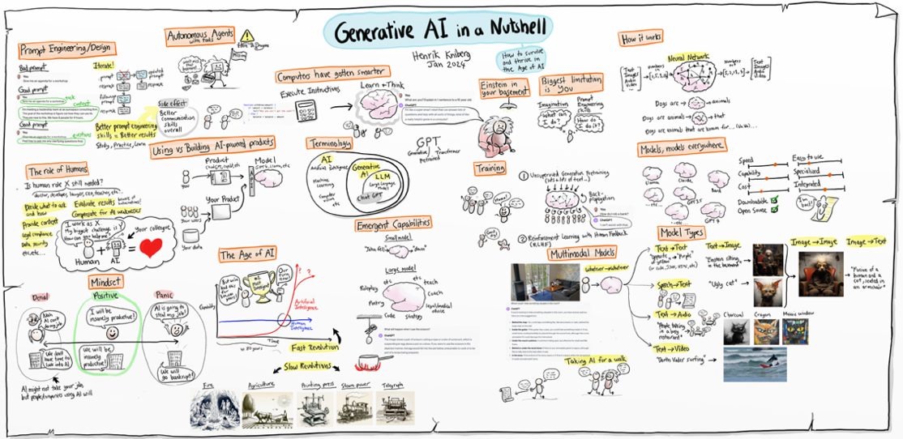
Figure 4.1 Overview of the animation of ‘Generative AI in a nutshell’ by Henrik Kniberg (2024).
We usually distinguish between three main categories of AI: symbolic AI, machine learning and generative AI. Symbolic AI, also called “GOFAI” (Good Old-Fashioned AI or weak AI), consists of explicit rules and logic. An example is a chess program that calculates all possible moves through a tree structure and makes the most strategic choice from them. Symbolic AI simply follows pre-programmed rules or learns patterns based on data. This approach was dominant until the late 1980s (Crevier, 1993). Here, there is also a difference between so-called weak AI and strong AI. Strong AI is a hypothetical concept in which an AI system could possess human-like consciousness and general intelligence. It is also referred to as a general artificial intelligence (AGI). Such a system could not only perform tasks, but also reason, understand, learn and even experience emotions like a human. For now, this is still a hypothetical future scenario if it ever becomes reality.
Viewing tip 41: Want to see an example of how a strictly programmed system takes the rules too literally? Then watch the movie Avengers: Age of Ultron (2015), in which the AI Ultron gets out of control by interpreting the mission to protect humanity too rigidly.
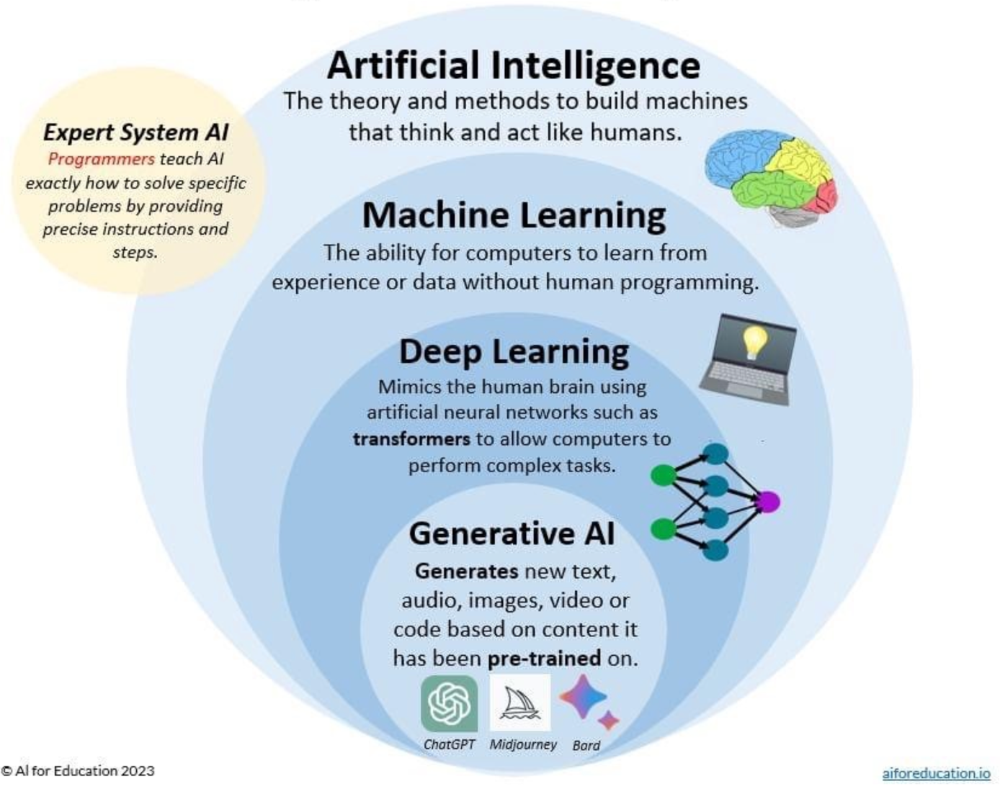
Figure 4.2 Schematic of the field of artificial intelligence and generative AI according to AI for Education (AI for Education, 2023).
With the emergence of machine learning, a subcategory within AI, the approach changed radically. Instead of explicitly programming how a system should decide, models learned to do this themselves based on data. In the process, it became possible to recognize patterns in data without human intervention at every step. Machine learning uses statistical techniques such as linear regression and decision trees (T. M. Mitchell, 1997).
One step further is deep learning, which uses artificial neural networks with multiple layers. These networks can learn complex patterns previously inaccessible to simpler algorithms. Think of recognizing objects in images or predicting words in a sentence. Deep learning is the backbone of the most advanced AI applications we use today (LeCun et al., 2015).
Box 4.2 - Algorithms
In popular scientific and public discussion, all kinds of words are used interchangeably when it comes to AI, causing confusion. For example, the word: algorithm. This term is used in different ways, s which is confusing because an algorithm is basically nothing more than a step-by-step process. Even adding two numbers follows an algorithm. But even training a language model is done according to an algorithm. Such an algorithm is very complex, though, and uses a lot of data. A language model can then be used again for a new application that once more has its algorithm, for example a Chat environment, about which more later in chapter 5.
Take the statement: “the algorithm causes the users of a social media platform to enter an echo chamber.” This does not necessarily say anything about the AI approach used in the system. But it does say something about how the designers of social media platforms use the data in the system - through an algorithm - to constantly present the user with new attractive posts. This could be done even without the application of AI, but is probably not very effective.
Generative AI is a specialized form of deep learning. Instead of just classifying or predicting, generative AI creates new output: text, image, audio, or video. Systems such as ChatGPT, DALL-E and Google Gemini are models trained on huge amounts of data and can generate original content with that knowledge. Generative AI is thus not only reactive, but also creative: it writes poetry, programs software, creates artwork and simulates conversations (Bender et al., 2021). But a generative AI does this only based on your creative input, and the creative data on which the model is trained. So while the output may be creative, it is rarely original if you don’t put a creative spin on it yourself.
Box 4.3 - AI, statistics and Big Data: differences and similarities
Big Data is also sometimes confused or equated with AI and generative AI. This can be confusing. Big Data are the techniques in infrastructures to store and quickly process huge amounts of data. That in itself has nothing to do with AI. It is, however, a prerequisite for developing and using AI.
In addition, some question the difference between statistics and AI. Briefly, statistics is generally used to draw conclusions or test hypotheses based on structured data. AI in turn is strong at recognizing patterns in unstructured data, such as recognizing disease patterns on medical scans. Generative AI is good at predicting the most likely answer to a prompt, based on a statistical model.
4.2 Neural networks and training
After exploring the AI landscape, let’s look at the engine of generative AI: neural networks. Everything you see when you have an AI model write a text, generate an image or create a summary is the result of what the network has learned. But how does an AI actually learn? And what happens behind the scenes when you enter a prompt? In this chapter, you’ll discover step by step how an AI model is trained and how a neural network functions.
4.2.1 How does a neural network work?
An artificial neural network is inspired by the human brain. It consists of layers of ‘neurons’ that process information. Each neuron takes input values, performs a mathematical calculation, and transmits the outcome to the next layer. The connections between neurons have ‘weights’ that determine how important a particular signal is. By adjusting these weights, the network learns to make better predictions.
In deep learning - the technique on which generative AI is based - these networks consist of dozens or hundreds of layers. Each layer recognizes a slightly more abstract pattern than the previous one. For example, where the first layer in an image recognizes only edges or colour areas, a higher layer can distinguish an eye, face, or chair (LeCun et al., 2015). In language models, it works i similarly: the first layers recognize individual words, subsequent layers understand grammatical structures or even the tone and intention of a text.
An important part of generative AI is the so-called transformer, introduced by Vaswani et al. (2017). This technique self-determines which words in a sentence are important to understand the meaning properly (see section 4.2.3). This allows models such as GPT-4 to analyse longer texts and provide coherent answers. The T in GPT therefore stands for transformer.
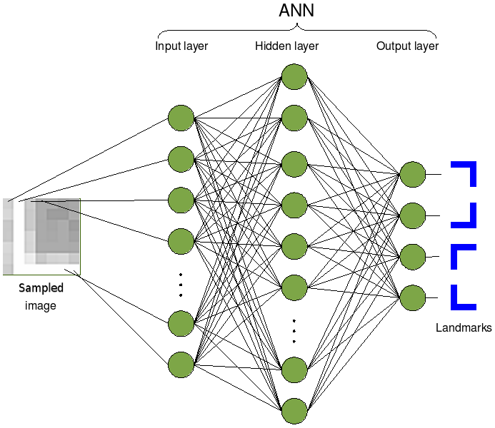
Figure 4.3 Visualization of how a neural network works to detect feature parts in a figure (source: Wikimedia/Cyberbotics Ltd.).
Box 4.4 - An audiovisual narrative of neural networks and training
How neural networks work is quite complex. Want to dive deeper into this? Then check out the YouTube series Neural Networks by 3Blue1Brown (Sanderson, 2017).
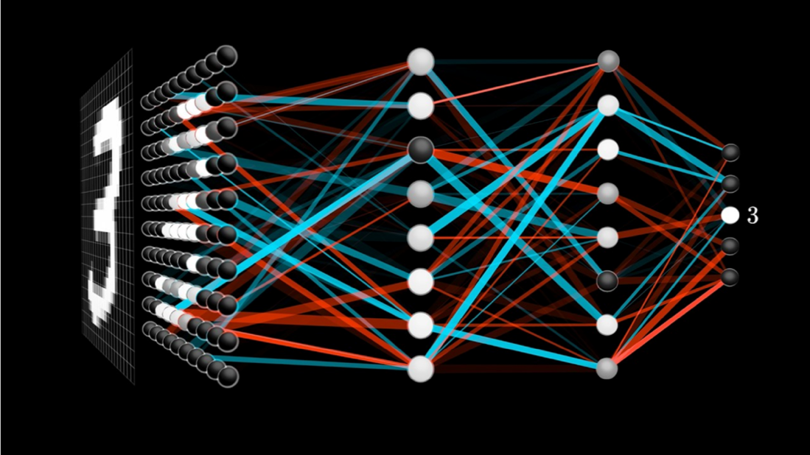
Figure 4.4 Image from Grant Sanderson’s 3Blue1Brown collection on neural networks (Sanderson, 2017).
4.2.2 What is machine learning?
The next step is to understand how neural networks learn: we call this process machine learning. Machine learning is the process by which computer systems learn from examples. Instead of programming explicit instructions, we give the model a large amount of data as training data - millions of texts, for example - and let the system discover the patterns on its own. That training data is the foundation on which the model learns what, for example, is grammatically correct, what words often occur together, and what a particular writing style sounds like (M. Mitchell, 2019).
This learning process is based on trial-and-error. The model makes a prediction (for example, what is the next word in a sentence?), is told whether the answer was correct, and adjusts itself. This error correction is done using what is known as back propagation: the computational model sends an error signal back through the network and adjusts its internal weights accordingly (Goodfellow et al., 2016).
4.2.3 How does a language model learn by guessing the next word?
To understand how a language model learns, you can compare it to a sophisticated prediction machine that learns from millions of examples. During training, the model is presented with sentences where it has to predict the next word each time, complete with probabilities.
Step 1: The training sentence
Suppose the model is given the sentence: “The cat is sitting on the mat.”
Step 2: The prediction game with probabilities
The model first sees only: “The” It predicts with probabilities:
- “dog” (15% chance)
- “cat” (12% chance) ✓ correct!
- “man” (10% chance)
- “car” (8% chance)
- … and thousands of other words with lower odds
Why is “dog” wrong? Not because dogs don’t exist after “The,” but because in this training sentence, the correct answer was “cat.” The model now learns that it must slightly increase the probability of “cat” after “The.”
Step 3: The attention mechanism - what should I pay attention to?
With longer sentences, things get trickier. Suppose the model sees: “The black cat with the white spots is sitting on the”.
The attention mechanism helps the model ‘remember’ that:
- “cat” is the subject (not “spots”)
- “sitting” is the action
- We are likely to look for a spot where the cat sits on
This mechanism gives weights to different words. The word “cat” gets a lot of attention (0.8), while “with” gets little attention (0.1).
Step 4: From training to use - the role of temperature
After training, the model can generate text. For the sentence “The cat sits on the”, has these predictions:
- “mat” (45% probability)
- “couch” (20% chance)
- “chair” (15% chance)
- “table” (10% chance)
- “moon” (0.1% chance)
This is where the temperature component comes in:
- Low temperature (0.2): the model almost always chooses “mat”- safe but boring.
- Normal temperature (0.7): mostly “mat”, sometimes “sofa” or “chair”- natural variation.
- High temperature (1.5): may even choose “moon”- creative but possibly nonsensical.
Step 5: Learning from billions of examples
After seeing billions of sentences, the model learns complex patterns:
- “The prime minister announced that…” → likely policy follows (70%)
- “The cat sits on the…” → probably a piece of furniture or mat (85%)
- “The research shows that…” → likely scientific conclusion (75%)
The result
The model becomes a master at predicting likely word combinations. The attention mechanism helps it ‘remember’ relevant context over longer distances in the text. By adjusting the temperature, we can determine how ‘safe’ or ‘creative’ the output becomes.
But remember: the model doesn’t really ‘understand’ that cats are animals. It only knows that in texts where “cat” appears, words like “meows” (65% chance), “mice” (45% chance) or “tail” (40% chance) often also appear. This explains why AI can sometimes sound convincing, yet state factually incorrect things - it relies on statistical patterns, not actual understanding.
4.2.4 Different ways AI is trained
Supervised learning uses examples with labels to learn to recognize patterns (Hastie et al., 2009). Imagine you want to teach a computer to recognize whether an e-mail message is spam or not. Then you give the system a large collection of emails, giving each one a clear label: this is spam, and this is not spam. This label helps the algorithm make connections between characteristics of the e-mail (such as words, sender, links) and the label.
Who does the work?
A data scientist or machine learning engineer sets up the model and collects and labels the data. Sometimes the labeling is done manually by human data labelers. If you need thousands or millions of examples, this is often outsourced to specialized companies. In section 9, we discuss the social aspects of this.
How much time does it take?
Building a good working model can take weeks to months, depending on the size of the dataset, the complexity of the problem, and how well prepared the data is. Just collecting and labeling data can take many tens to hundreds of hours. For creating LLMs or Vision models that can recognize images, this can take up to thousands or even millions of hours.
4.2.5 Unsupervised Learning - learning without examples
Unsupervised learning enables systems to discover patterns without predefined labels (Bishop & Nasrabadi, 2006). Suppose you give an algorithm customer data (such as age, purchase history and location), but you don’t tell it who are loyal customers or who are high-risk customers. The model must then try to recognize patterns on its own. For example: this group of people returns often, and that group only once. Or: this group of people returns products more often, and this group doesn’t.
Who does the work?
Again, data scientists build the model and work on the training. The work consists mainly of collecting and cleaning the data, choosing appropriate algorithms (such as clustering or dimensionality reduction) and interpreting the patterns.
How much time does it take?
Unsupervised learning can be faster than supervised learning because you don’t need labels. But interpretation by data scientists, on the other hand, takes more time because the results are not obvious. Count on several days to several weeks for an average analysis. For LLMs or general vision models (models that can recognize and generate images without prior knowledge) this can increase exponentially.
4.2.6 Reinforcement Learning - learning through reward and punishment
In reinforcement learning, a system learns optimal behaviour through interaction with an environment and feedback via rewards (Sutton & Barto, 1998). This way of learning is somewhat similar to how humans or animals learn. You have the computer perform a task (for example, run a robot or play a game) and give a reward if it does well. If it goes wrong, it gets no reward or even ‘punishment’. Based on that feedback, the system learns what works and what doesn’t.
Who does the work?
Reinforcement learning is usually performed by specialized AI researchers or engineers because it is technically complex. It often requires simulations, lots of computing power (Graphic Processing Units - GPUs), and experience with software such as OpenAI Gym, Unity ML, or TensorFlow Agents.
How much time does it take?
This is typically the most time-consuming. Training a good reinforcement learning model can take days to weeks - sometimes longer - depending on the complexity of the task. Consider hundreds to thousands of hours of computational time and preparation, including building the simulation environment.
In Table 4.1 we present a brief overview of LLM training procedures.
| Learning method | With or without labels | Who performs it? | Average time investment |
|---|---|---|---|
| Supervised Learning | With labels | Data scientists + data labeling teams | Several weeks to months |
| Unsupervised Learning | Without labels | Data scientists | Several days to weeks |
| Reinforcement Learning | Feedback-based | AI researchers/engineers | Weeks to months (huge computation time) |
Table 4.1 Overview of machine learning methods.
Box 4.5 - What does the work of a data labeler look like?
In the magazine De Groene Amsterdammer, Jeroen van Bergeijk (2025) writes about the work of a data labeler from his own experience. An AI data labeler, also known as an AI trainer or AI annotator, works as a freelancer for companies such as Outlier to improve language models such as ChatGPT. The work involves coming up with prompts to which the AI model gives two answers, after which the data labeler must assess which answer is best and why. The assessment is done using seven different dimensions such as writing quality, truthfulness and harmfulness, with each violation being substantiated. The goal is to make the AI model make mistakes by creating challenging prompts with many conditions and constraints, thus improving models and preventing unwanted output.
There is often secrecy about this work - data taggers often do not know which specific AI model they work for and must sign extensive non-disclosure agreements. Pay is between $20 to $30 per hour in the Netherlands, but can be between $1 to $5 per hour in low-wage countries (Perrigo, 2023). The supply of work is highly unpredictable - sometimes work is available for days at a time, then weeks of nothing at all. Many data labelers become frustrated with time pressure, lack of feedback and unclear quality requirements.
In this regard, the learning process of a language model technically follows roughly six steps:
- Tokenization. The input (text) is broken down into smaller units: tokens. These can be words, but also syllables or even single characters. For example, the sentence “The sun is shining” is divided into: [“The”, ” sun”, ” shines”]. Partitioning can be done in several ways, but a rule of thumb is that 1 token is about 3-4 letters in size (CriticalMynd, 2025). This means that, for example, a blog of about 750 words is converted to about 1,000 tokens, an essay of 3,000 words to about 4,000 tokens, and a book of about 750,000 words to 1 million tokens.
- Vectorization. Each token is converted into a string of numbers: a vector. This vector contains information about the location of the word in a language space - similar to coordinates on a map.
- Embedding. All vectors are combined into what is called an embedding space that represents the meaning relationships between words. Words with similar meanings come close together in this space.
- Training via backpropagation. The network learns by making predictions and correcting errors. For example, if it predicts the word “sun” after “The,” and the correct answer was “moon,” the model adjusts internal parameters to make better predictions in the future.
- Loss functions measure how good or bad a prediction is. They drive the learning process by saying, “You were 30% wrong.”
- Fine-tuning is an additional training phase in which an already trained model is adapted to specific tasks or contexts - for example, legal or medical applications. This involves adjusting the weights in the model and creating a copy of the language model.
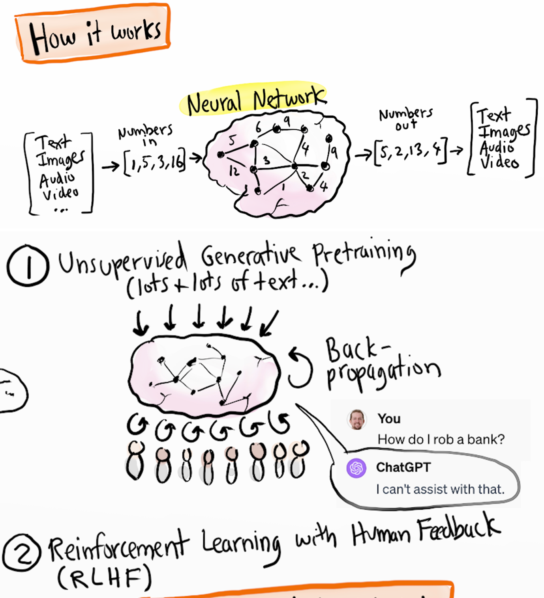
Figure 4.5 Visualizations of neural networks and training based on the video “Generative AI in a nutshell” by Henrik Kniberg (2024).
4.2.7 Diffusion Models (Diffusers) - generative AI for images
A diffusion model is used specifically for image generation. Diffusion models, as first described by Ho et al. (2020), are a type of generative AI that is trained by gradually adding noise to an image or sound file. Think of that noise as static interference: elements that do not belong in the original image, such as distortion or random colours. This added noise is called Gaussian noise because it follows a normal distribution - a perfect bell-shaped curve.
In the training phase, more and more noise is added until the file is completely unrecognizable. In the end, the image or sound consists only of noise. This phase is called diffusion. What the model still knows about the original image is stored only in its memory. Then the reverse process begins: the model tries step by step to remove the noise again and reconstruct the original image as well as possible. This reconstruction phase is called reverse diffusion. In the process, the model uses what it has previously learned about patterns and structures in other images. Through this process, the model learns to generate new images that resemble the structures it knows from the training data.
During this learning process, the model gets better each time at predicting what noise has been added. By analyzing the difference between the original image and the distorted version, the model learns which patterns are noise and which belong to the image. This continuous interaction between adding and removing noise is at the heart of how diffusion models function and learn.
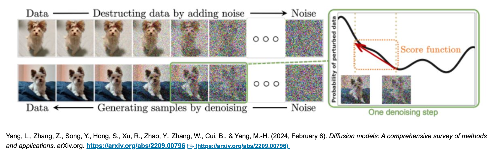
Figure 4.6 Images depicting the diffusion process for image generation and recognition from Yang et al. (2024).
4.3 Bias and data quality
One of the most discussed, and at the same time often misunderstood aspects of AI, is the risk of bias: systematic biases in the output of an AI system that leads to inequality, misrepresentation, or even discrimination. AI seems neutral at first glance: it is ‘just an algorithm’. But in reality, AI systems are as good (or as bad) as the data they are trained with. In this section, you’ll discover how bias arises, why it is so persistent, and what you can do to recognize and mitigate it.
4.3.1 Origins of bias in AI
Bias in AI usually doesn’t arise because of malicious intent of developers, but because training models use datasets that are skewed. For example, consider a language model trained primarily on English-language texts from American websites: that model will perform especially well in American contexts, and may have difficulty with idioms or cultural references from other continents(Bender et al., 2021)
A classic example comes from the medical world: an AI model that was supposed to recognize skin conditions performed poorly with people with dark skin colour because the training data consisted mainly of pictures of white skin (Buolamwini & Gebru, 2018). So the problem was not in the model itself, but in the representation of the data it was trained with. If the training data contained mostly men, or people from a certain income group, or texts of a certain ideology, the model will adopt those imbalances in its output. Suppose you do a sociological study of preferences in pop music, then your results via an AI are likely to be skewed. This is because the data on which the AI is trained already contains a certain bias, e.g. mostly Western data.
Box 4.6 - Data are never neutral
People often assume that data are objective. But data are always a reflection of choices: what is measured, who is involved, what categories are used, and how is something labeled? A chatbot trained on online forums (Reddit is a common source for AI training, for example) might use less inclusive language than a chatbot trained on academic texts. Also, the labels assigned to data - for example, in supervised learning - are subjective: they stem from human interpretations.
So, AI models are not only technical systems, but also a reflection of the world in which they are created, with all the associated culture, politics, biases, and discrimination (Crawford, 2021a).
4.3.2 Strategies to reduce bias
While you can never eliminate bias completely, there are ways to reduce its impact, such as:
- Dataset diversification: collect training data from multiple sources, considering representation of diversity in gender, ethnicity, language, region, age and socioeconomic background.
- Bias auditing: conduct systematic tests on AI output to determine whether certain groups are systematically disadvantaged.
- Transparency: document how the model was trained, what data was used and what choices were made in it (Model Cards, datasheets).
- Human verification: always have sensitive decisions - such as in selection procedures or health care - verified by humans.
4.3.3 Representativeness and accountability.
An important question is: for whom is the model intended, and who remains out of the picture? AI is often developed in Silicon Valley, but used around the world. Without explicit attention to context, this can lead to applications that do not respect cultural differences, or even have harmful consequences. Think of automatically generated images that confirm stereotypes, or summaries that omit certain perspectives.
So, responsible use of AI means not only technical precision, but also social reflection. Who decides what counts as normal in a dataset? Who has access to the technology, and who does not? And who bears the consequences of mistakes?
Box 4.7 - Where does machine learning go wrong?
Supervised learning: this uses labeled examples, but labels are not always objective. What is neutral may vary by culture or context.
Unsupervised learning: here there are no labels, but the model groups data based on statistical similarity. This can reproduce existing inequalities. Take the example of a system attempting to recognize bone fractures in the foot joint. The system turned out to work quite well, but not because of the bone fractures on the recordings, but the recognition of wrinkled skin of older people. In fact, older people are more likely to have bone fractures.
Reinforcement learning: when using human feedback, there is a risk that the human preferences contain bias, and that it becomes fixed in the system.
Bias can arise at any stage: when collecting data, selecting features, training the model, or even when interpreting the output.
4.4 AI hallucinations
Suppose you ask a language model who the president of France is. You expect Emmanuel Macron to be the answer. But the model answers: François Hollande. Or worse, Victor Hugo. These kinds of incorrect or made-up answers are known as AI hallucinations. The word ‘hallucination’ is used here because the AI seems to make up factual information based on what sounds plausible, without that information actually being true. In this section, you will discover what AI hallucinations are, why they occur, how to recognize them, and what implications they have for using generative AI.
4.4.1 What are AI hallucinations?
An AI hallucination is output that appears grammatically and stylistically correct, but is factually incorrect, misleading or completely fabricated (Maynez et al., 2020). In language models like ChatGPT, this means that the model generates sentences that do not correspond to reality but sound as if they could be true. For example, a chatbot may quote a nonexistent scientific study or summarize an article that does not exist. In image generators such as DALL-E, hallucinations can lead to illogical images that include, for example, a hand with extra fingers or nonexistent objects.
Hallucinations pose one of the b greatest challenges with the reliability of generative AI, especially in contexts where factual accuracy is essential, such as scientific writing, medical opinions or legal support.
4.4.2 Why do hallucinations occur?
The fundamental mechanism of a large language model is based on probability. Each time, the model predicts which token - a word or part of a word - is likely to follow based on all previous tokens. This process, also called next-token prediction, is purely statistical. The model does not know what is true or what exists; it only knows what sounds likely within the context (Brown et al., 2020).
If the training data are insufficient on a particular topic, or if the context of the prompt is vague, the model may make incorrect assumptions. Occasionally, it even invents sources, having learned that an article with year and author name is good form, without actually checking whether that article exists. The model’s so-called temperature setting - which determines how creative the model is allowed to be - also plays a role: the higher the temperature, the greater the likelihood of surprising but unreliable output.
4.4.3 Consequences of hallucinations
In academic or professional contexts, AI hallucinations can have serious consequences. A student who cites a non-existent source risks being accused of fraud. A doctor who relies on AI for a rare diagnosis may choose the wrong treatment. Even in creative contexts, such as storytelling or design, hallucinations can be problematic if the user expects a certain level of consistency.
Therefore, human intervention is always necessary: the user must verify information, check sources and be aware of the limits of the system. Chatbots are not oracles, but sophisticated guessing machines. Without a critical eye, their output can mislead, despite a professional or persuasive tone.
Box 4.8 - Techniques to counter hallucinations.
Providers of LLMs recognize the problem of hallucination and want to counteract it. For example, through fine-tuning. This involves taking an existing language model but adjusting the weights of its parameters through specific training.
Another method works based on so-called Retrieval Augmented Generation (RAG) (Lewis et al., 2020). This involves feeding documents to the system (e.g. PDFs, website texts, text files) where the LLM tailors the result of the response to the content of these documents.
In addition, more and more techniques are applied where models are forced to engage in an inquisitive conversation with themselves for better outcomes (so-called reasoning).
4.4.4 Recognizing and dealing with hallucinations
There are some strategies for recognizing and dealing with AI hallucinations:
Check sources: ask the model for the exact URL or DOI of an article. Made-up sources often do not have a working link. Still, a source may be real even if the link does not work. Therefore, ask especially for the title, author, year and publication, and look it up yourself.
Ask for substantiation: have the AI explain the reasoning behind a particular conclusion. Vague or circular argumentation is a red flag.
Use fact-checking tools: combine AI output with tools such as Google Scholar, Consensus, PubMed or Wikipedia to verify claims.
Lower the temperature: if you have control over the settings of the model, lower the temperature to make the output more predictable and factual.
Box 4.9 - Why AI believes in its own rightness
Hallucinations are not a fault of a flawed model, but a logical consequence of how language models are designed. They have no world knowledge or memory of real events. They don’t think like humans. What they generate is based on patterns, not facts. Even though the phrase “Victor Hugo was president of France in 2018”, sounds grammatically perfect, it is pure fiction - statistically derived, not truthful.
In addition, it is important to realize that LLMs themselves do not have access to current affairs per se, chat interfaces such as ChatGPT often do by being able to search the Internet. Through techniques such as RAG and by also making connections through the chat interface to search engines or specific databases, for example.
4.5 The ‘Black Box’ of AI
Although generative AI seems impressive because of its fluent language and fast responses, many of the underlying processes remain invisible and difficult to fathom - even for developers. This phenomenon is known as the ‘black box’ problem. An AI model may arrive at accurate predictions or generate persuasive text, but it is often not clear how or why it does so. In this section, we dive deeper into the nature of this opacity, attempts at clarification, and its ethical and societal implications.
4.5.1 Why is AI so opaque?
The complexity of modern neural networks is difficult to overestimate. Models such as GPT-4 contain hundreds of billions of parameters - weights and connections between neurons, that together determine the model’s behaviour (OpenAI, 2021). When you enter a prompt, thousands of calculations are performed in fractions of seconds. Each of these calculations contributes a small amount to the final result, but no individual step is decisive on its own. This makes it virtually impossible to reconstruct exactly which paths are responsible for the generated output.
Moreover, these models learn via ‘back propagation’ from huge amounts of data. They internalize patterns without following explicit logic or rules. As a result, they function as a kind of complex intuition: highly efficient, but difficult to explain. This lack of transparency gets in the way of control, trust, and accountability - especially in contexts with high risks such as diagnosing a medical condition, making decisions about granting benefits or admission to training programs.
4.5.2 Attempts at explainability
AI may sometimes seem like a mystery to you: an answer comes out, but you don’t know how it came about. To counter that ‘black box’ feeling, the research field of explainable AI (XAI) has emerged. Researchers are investigating how to make it clearer how an AI comes to a decision. They do this, for example, by making visible what the model is paying attention to in a text, or by temporarily replacing a complicated model with a simpler one that is easier to understand (Lipton, 2018).
Two of the techniques for this are, for example:
- SHAP (SHapley Additive exPlanations), which attempts to determine which input features contributed the most to a given output.
- LIME (Local Interpretable Model-agnostic Explanations), which approximates the behaviour of a complex model locally with a simpler, interpretable model.
You may forget these terms again after this, but what is important to remember is that these types of methods give only a limited view. They give an impression of what the model may have done, but not conclusive evidence. With language models such as GPT, this is even trickier because the input is ever-changing, and the outcome depends on long contexts and probability calculations.
4.5.3 Ethical implications of opacity
The black box nature of AI raises fundamental questions about responsibility and accountability. Who is responsible if an AI system makes a mistake - for example, a discriminatory decision in a job application or an erroneous medical recommendation? If we cannot explain why a model does something, should we use it in decisions that affect human lives?
Cynthia Rudin (2019) argues that black box models should not be used in sensitive contexts such as justice, medicine, or banking. Instead, she argues for interpretable models that may be moderately less powerful, but whose operation is understandable and testable.
Moreover, opacity leads to distrust. Citizens, policymakers, and professionals want to understand why a system reaches certain conclusions. Without explainability, AI- systems lose legitimacy. So, transparency and explainability are not a luxury, but prerequisites for socially responsible AI use.
4.6 Self-study questions
4.6.1 Check questions
- What is the difference between supervised learning, unsupervised learning and reinforcement learning? Give a brief example for each.
- What are AI hallucinations, and why do they occur? Name two strategies for recognizing hallucinations.
- Explain the ‘black box’ problem of AI and why it raises ethical questions.
4.6.2 Reflection Questions
- Chapter 4 describes how bias in AI systems arises from skewed data sets. Think of a concrete example from your field of study where this might be problematic. As a future professional, how would you deal with this?
- This chapter compares using AI to driving a car without understanding how the engine works. To what extent do you think users of AI systems should understand the underlying technology? What are the advantages and disadvantages of more technical knowledge for ordinary users?
- With AI use, some words suddenly become a lot more common. For example, in English, one notices that the word ‘delve’ suddenly appears much more often in texts. Some people think this might be because certain LLMs are trained primarily by people from certain areas. For example, the word ‘delve’ is estimated to be more common in Kenya, where many LLMs are trained. What do you think? Please argue your answer.
4.6.3 Answer suggestions
- Supervised learning uses labeled examples to learn patterns (e.g., labeling emails as spam or not spam). Unsupervised learning seeks patterns without labels (for example, grouping customers based on buying behaviour). Reinforcement learning learns through reward and punishment (e.g., teaching a robot to walk through positive feedback for good steps).
- AI hallucinations are convincing-sounding but factually incorrect answers that AI generates. They occur because AI statistically predicts what is likely to follow, without real knowledge of facts. You can spot them by checking sources, asking for substantiation, using lower temperature settings, and deploying fact-checking tools.
- The black box problem means we cannot explain how AI arrives at specific decisions, even if the results are accurate. This raises ethical questions about responsibility, transparency and accountability, especially in sensitive areas such as healthcare or justice where explainability is crucial.
- Reflect for yourself. Consider medical diagnoses that may contain biases about certain patient groups, or HR systems that discriminate in job applications. As a professional, you can be aware of these risks, demand diverse data sets, conduct regular audits and always maintain human control in important decisions.
- Own opinion desired. Arguments for more knowledge: better critical use, more trust, better quality control. Arguments against: technical complexity is not accessible to everyone , focus should be on practical use. A middle ground could be basic understanding of capabilities and limitations without in-depth technical details.
5 Chat software: what’s under the hood of your chat environment?
Imagine …
You’re scrolling through Copilot’s answer to a research question you had posed. You think to yourself: “Theoretically I understand how these systems work, something about neural networks, but practically, what happens to my input? I type questions, but where does that question actually end up?” And you remember your professor’s warnings: “Never share sensitive data through these systems.” Could your information be stolen? Resold, and is that always the case? Time to have a look at how these systems work in practice and what that means for you.
5.1 Infrastructure
Generally, you communicate via a chat interface with AI systems that incorporate Large Language Models (LLMs). This technology seems simple - you type a question and get an answer - but behind the scenes, a complex technical infrastructure is required. Many people think they are talking directly to an LLM and that their data is only processed by the model and then the model learns by itself. In reality, all communication goes through the chat interface, which is managed by another party. This creates misunderstandings, for example about:
- Who has access to your data;
- Whether your data is used for model training;
- Where your data is stored and for how long.
So it is essential to understand the difference between the LLM file (the model) and the chat interface provider (the middle layer).
5.2 The LLM as a large file
An LLM is one file that you could possibly put on your computer. The file contains billions of parameters trained on large amounts of data. This file contains no built-in chat functionality: it is a program that, at a given input (prompt), generates a single response based on the GPT method (Generative Pretrained Transformer, see Box 1.1 - What do we mean by ‘GPT’. The model itself does not remember anything about previous interactions; it is supposedly stateless. The file also has no knowledge of, say, the current date (and platforms provide additional techniques and functions to do ‘know’ that current date or other sources).
Box 5.1 - LLM Models
The number of LLM models you can use is growing rapidly. So fast that you can hardly keep up. Each model has its strengths, weaknesses, and specialities. The most well-known models are those of OpenAI (ChatGPT-4o, 5), Google (Gemini) and Anthropic (Sonnet, Opus), DeepSeek (DeepSeek), Qwen (Alibaba Cloud) and xAI (Grok), LLAMA (Meta), Mistral (Mistral). These are the largest and most widely applicable models with the most parameters.
If you want an overview of available models, take a look at HuggingFace’s website or look at Table 5.1.
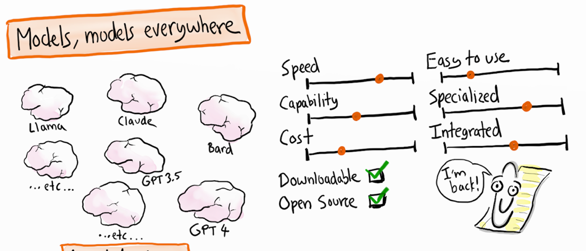
Figure 5.1 Overview of different LLM models and their characteristics from the “Generative AI in a nutshell” video by Henrik Kniberg (2024).
5.3 Chat interface and chat history
The experience of an ongoing conversation with a generative AI is created by an intermediate layer: the chat interface (e.g., a web app or app, think Copilot, ChatGPT, Gemini, Claude).
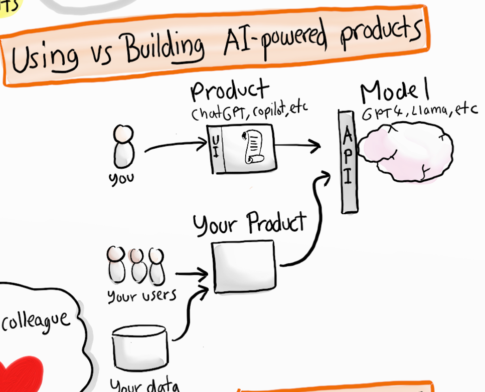
Figure 5.2 Graphical representation how users interact with an LLM via an intermediate product. The user sees an interface (UI) in a p product, and that product talks via Application Protocol Interface standards (API) to the model and back again.
This Chat interface stores the entire chat history and resends the relevant chat history to the LLM file with each new query. This is called conversational memory. This principle emerged along with the emergence of LLM’s (Pinecone, 2025) and is essential for creating coherent conversations with AI.
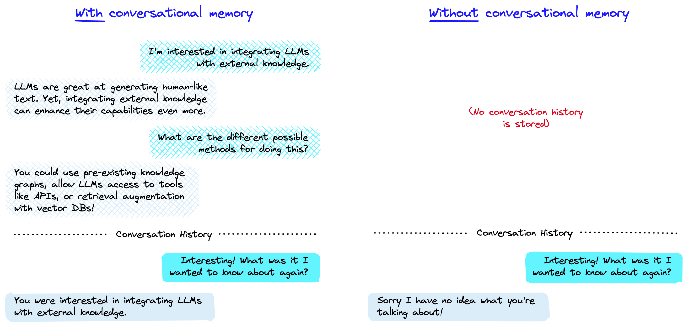
Figure 5.3 Example of conversational memory or not (Pinecone, 2025).
So, the LLM always sees the whole conversation (or the part that fits within the context window), which makes it seem like the model has a memory and understands well what you want to ask. Because without sending back the first question and answer along with it, the LLM doesn’t actually know what it is talking about.
Box 5.2 - Context window - when does chat history crash
It may seem convenient to keep talking in the same chat box with ChatGPT because it takes everything previously entered into account for the rest of the conversation. But you might notice that over time, ChatGPT forgets what you said at the beginning of the conversation. This is due to the so-called context window, the model’s memory. For example, GPT-3.5 could only remember 2048 tokens, while GPT-4 can handle more than 32,000. This determines how large text files a chat system can handle and how far back a model can look in a chat history. The larger the questions and responses and the more, the faster the context window fills up, and the chat environment loses control or becomes more incoherent.
5.4 Prepared chatbots and projects
Using general chat environments such as ChatGPT, you can also create prepared bots. For example, you can create so-called Custom GPTs: a fixed prompt, possibly with a knowledge resource attached, that you can use over and over again. That makes a difference because then you don’t have to enter those instructions each time again, and it makes for more consistent responses from the language model.
In addition, in platforms like ChatGPT or Claude, you can also create a project. A project is a kind of workspace where you bring together files, resources, and rules. Within that project, the AI always responds specifically to that context, so you don’t have to re-enter it every time you create a new chat within the project. A Custom GPT mainly defines a role or way of working (such as “always answer in academic style”), while a project is mainly about organizing your material and agreements.
An example: if you want to query one document in different ways, you can make that a Custom GPT and get started right away. As a researcher, you can stipulate in the instructions from which domain the model should mainly draw knowledge and that the answers always contain references. Or, in image generation, you can describe a fixed style so that every new image has the same look. Moreover, in a project you can also save your files and context, so you don’t have to upload them repeatedly.
Google calls this mechanism of prepared chatbots Gems, Antropic calls it Projects, Copilot calls it an Agents and EduGenAI calls it a Persona.
Even in ordinary programs like Word or Google Docs, there are increasingly built-in, prepared bots. Often you don’t even notice it: you just use a menu option to summarize text, translate it or automatically create slides based on a web page.
Based on the technology, you can also imagine yourself or companies creating and offering such an intermediate layer themselves. Below you can see some examples.
| Supplier | Product/Interlayer | Models | Safe for VU Amsterdam? | Origin (Country, Continent) |
|---|---|---|---|---|
| SURF / Npuls | EduGenAI (probably available September 2026) | Mix of open source (e.g. Mistral, LLaMA) and commercial models (e.g. GPT-4, Claude) | High | Netherlands, Europe |
| Microsoft | Copilot for Web/ Bing Chat | GPT-4, GPT-4o (via OpenAI), with web browsing and multimodality | High (via SURF license) | United States, North America |
| Microsoft | Copilot for Microsoft 365 | GPT-4 (via OpenAI), integrated with Word, Excel, Outlook, Teams | Not available to VU | United States, North America |
| Google DeepMind | Gemini | Gemini 1.5 Pro, Gemini Flash (multimodal, real-time web access) | High (Google Workspace for Education) | United States, North America |
| Google DeepMind | NotebookLM | Gemini 1.5 Pro, Gemini Flash (multimodal, real-time web access) | High (Google Workspace for Education) | United States, North America |
| OpenAI | ChatGPT | GPT-3.5 (free), GPT-4, GPT-4o, GPT-5 (Plus), with DALL-E 3, Code Interpreter, Vision, Voice | Low | United States, North America |
| Anthropic | Claude | Claude 2, Claude 3 Opus, Sonnet, Haiku (security-oriented, large context windows - does want to use data for training purposes) | Resource | United States, North America |
| Mistral AI | LeChat | Mistral 7B, Mistral 8x7B (open source, European privacy-oriented) | Medium | France, Europe |
| Proton | Lumo | Various open source models. Proton presents itself as the most privacy protected and European online environment | High (although no agreement with VU Amsterdam) | Switzerland, Europe |
| DeepSeek | DeepSeek Chat | DeepSeek-V2, DeepSeek-Coder (focused on math, programming, Chinese-English bilingual) | Very low | China, Asia |
| xAI | Grok | Grok-1, Grok-1.5, Grok-2 (multimodal, real-time X/Twitter integration, 1M token context) | Very low | United States, North America |
Table 5.1 Developers of LLMs, their service, models and global indication of meeting Privacy and Security requirements based on knowledge from VU Amsterdam’s AI Competence Network.
5.5 Data and privacy: who decides what happens to your data?
Suppliers of chat interfaces decide what happens to your data and the generated responses. For example, the supplier may choose to:
- store the chat history locally or in the cloud;
- use your data for analysis, product improvement or even for training new models;
- share data with third parties or explicitly protect it.
These policies vary by provider and are often not entirely transparent. Some interfaces offer privacy settings, others don’t. That’s why it’s important to understand the above technique and make assessments based on it, such as:
- Are you working with a vendor with unclear terms and processes? If so, be cautious about the data you upload and the questions you ask. Make sure you never share sensitive data such as personal data or confidential company information. Examples of these types of vendors include ChatGPT, Google, Anthropic and many smaller vendors. In other cases, the terms are typically not clear either. Like with a paid account or accounts that supposedly work on a login basis with an organizational account (for example, one you log into with your VU e-mail address via Google login).
- Does the university or your employer offer a chat environment, and are there clear agreements that the data will never be shared with parties outside the institution? Then you can use the chat environment much more freely, but still do not share sensitive data if it is not strictly necessary. Examples include the Copilot environment used by universities, the SURF EduGenAI environment, or environments offered by Research Institutes in-house.
- Does the university or employer not offer an enenvironment, or are you in doubt about the arrangements with the vendor? Then see if you can work with an LLM that you can install and use on your own (powerful) PC or laptop via a local program (Local LLMs). Examples of programs are Jan.ai, LM Studio (Google), OLLama.
Still, often much remains vague about how your data is processed, many legal and technical difficulties come into play. For more background on the complexity around ownership of user-generated data in AI interactions, please refer to the work of Metcalf & Crawford (2016).
Box 5.3 - File upload and data security
Are you allowed to upload files in chat systems? Assume that with providers of these systems that are free, by doing so you are actually giving these documents to those companies. They can reprocess that data (for model training) or even sell it, for example. With the paid variants, there may be a difference.
In addition, by uploading the files, you may be violating the copyright of the authors or publishers of the documents. In doing so, you may think: “So what? Who’s going to catch me?!” But, just for that situation, you should appeal to your conscience and integrity. So, when it comes to files with special or sensitive data, you have to be cautious.
You can prevent data leakage only if you use the systems for which your institution has a processor agreement (at VU for Copilot, Google Gemini or NotebookLM or for EduGenAI - with VU login) or if you use only Local LLMs.
5.6 Self-study questions
5.6.1 Check questions
- What is the difference between an LLM file and the chat interface you use to interact with the model?
- How does ‘conversational memory’ work, and why does an AI model seem to remember your previous messages?
- What factors should you consider when choosing between different AI vendors such as OpenAI, Microsoft Copilot or EduGenAI in terms of security and privacy?
5.6.2 Reflection Questions
- Suppose you upload a document with sensitive information to ChatGPT for a study assignment. What are you risking, and how could you handle this differently?
- Many students think they are talking directly to an AI model, but in reality everything goes through an intermediate layer of a company. How does this affect your trust in and use of AI chat services?
5.6.3 Answer suggestions
- An LLM is basically one big computer file that you could theoretically put on your own computer. It has no built-in chat functionality and is ‘stateless’ - it remembers nothing from previous conversations. The chat interface is the middle layer (like the ChatGPT website or app) that creates the conversation experience by storing the chat history and sending the entire conversation back to the LLM with each new question.
- The LLM itself has no memory. The chat interface stores the entire chat history and sends the relevant context back to the model with each new question. This is called ‘conversational memory’. This makes it seem like the model remembers the conversation, but in reality it keeps seeing the entire conversation over and over again.
- You need to look at factors such as: transparency about what happens to your data, whether there are processing agreements in place by your institution, where the data is stored, whether your data is used for model training, and whether you can share sensitive information. EduGenAI through SURF and Copilot through your university licence are usually more secure than direct commercial services.
- If you upload sensitive information to ChatGPT, it may be stored, analysed or used for model training by OpenAI. You run the risk of confidential data ending up with third parties. Better alternatives include using your university’s AI environment, installing local LLMs, or removing the sensitive parts from your document before uploading it.
- This knowledge should make you more aware of the choices you make. You realize that companies like OpenAI, Google, or Microsoft control what happens to your conversations. This may motivate you to be more conscious about choosing systems that your institution has agreements with, or to be more critical about what information you share through commercial chat services.
6 How does your AI use impact the environment?
Imagine …
You ask a question to ChatGPT or have an image generated by Midjourney. But your fellow students tell you this is bad because it costs a lot of energy. If you follow the news and social media, it’s also full of warnings about this. You wonder: should I even use generative AI if it’s so bad for the environment? And: how bad is it really?
6.1 What does your AI use actually mean for energy, CO₂ and water?
When you ask a question to a generative AI via your laptop or phone, you don’t see what’s going on behind the scenes. Unwittingly, you’re using a large network of data centres, powerful graphics processors and cooling systems that use a lot of energy and water. In this chapter, we explore how that correlates with environmental impact.
We consider three things: how much energy it takes to train models, how much energy and water it takes to generate responses, and how much CO2 that emits. We’ll look at global usage. Then we zoom in on your personal usage and compare that to the environmental impact of other daily activities. Think of watching YouTube videos, flying to your holiday destination, eating a hamburger or showering.
6.2 Why does training AI models take a lot of energy, water, and CO2?
It takes a lot of energy to train models because the value of the billions of parameters of the LLM neural network must be calculated. To achieve this, tens of thousands of processors (GPUs) from the company Nvidia are generally used. Each processor requires about 700 watts of power. You can compare this to a consumer microwave running at almost maximum power. Cooling requires a lot of water, and energy generated by fossil fuels creates CO2 emissions.
At the same time, it is difficult to determine how much energy is needed to train language models and what the CO₂ emissions are. Firstly, because many factors come into play there, including the complexity of the model itself, but also the hardware it runs on, the questions you ask, and the energy source you use (for example, if you were using renewable energy). Secondly, because AI companies do not report on their energy use (Vries-Gao, 2025). In addition, the figures are changeable based on rapid technological developments. Therefore, much research on the environmental impact of generative AI are estimates.
But how much energy are we talking about? Training models of the current generation of LLMs, which are similar to training sessions for GPT-4o, last about three months and consume about 45-56 gigawatt hours of energy (You, 2025). So, the training sessions require both high power and long duration. The total amount of energy for training is equal to the amount of energy needed to power about 60,000-74,000 Dutch households for a year. That’s quite a lot. It is sometimes said that for the energy consumption of one data centre you would need one full nuclear power plant. On the power of an average nuclear power plant (3000 MW), for example, you could train 120 LLMs at the same time. If you take offshore wind turbines (10-15 MW each), you would need two or three. It just goes to show that it’s important to be careful with comparisons.
Model training still takes a lot of energy, that‘s for sure, but how does that actually translate to a prompt? ChatGPT processes about 1 billion prompts per day (Ahmed, 2025). Suppose an LLM is used for about a year, and we spread out the energy for model training over that number of prompts, we end up with about 0.151 Wh (watt-hours) per prompt. You can read more about that below.
6.3 How much energy does it take when you ask an AI a question?
Every time you generate a text, image, or video with a generative AI system, servers are running in a data centre. That costs energy - but how much exactly?
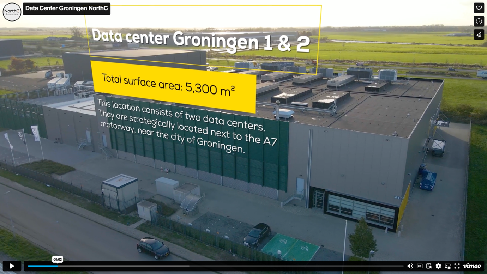
Figure 6.1 Image of a typical data centre: a massive enclosed building with many computers inside (source of image https://www.northcdatacenters.com/).

Figure 6.2 Interior of the xAI data centre Colossus in Memphis, Tennessee. Colossus contains about 100,000 Nvidia Graphical Processing Units (GPUs) to train language models. Expansion to 200,000 GPUs is already in the planning (image source).
Little is known about the exact energy consumption. Comparative research is being done with Open Source models (see section 9.6 for more explanation). But the most commonly used models are closed and therefore untestable. In addition, they are constantly changing: new, larger models often require more computing power and thus probably use more energy.
To still get an impression, a comparison is often made between asking a question to Google and giving an AI a prompt. A complicated comparison because little is known about Google’s energy consumption either. But for the sake of discussion, we’ll go into it anyway. The energy consumption for a Google query, for example, is estimated to be around 0.3 watt-hours (Wh). An estimate for an average ChatGPT query was around 2.9 Wh in previous models - nearly ten times as much (You, 2025). But thanks to technological advances and more efficient models, such as GPT-4o, energy consumption per prompt has now dropped to around 0.3 Wh. That would be comparable to a Google search (You, 2025). For a long prompt input, the energy cost is higher though: this can be as high as about 2.5 Wh for an input of with length of a magazine article, up to 40 Wh for an input of about 200 pages of text. Generating images and videos requires considerably more energy.
6.4 How does prompting compare to other daily energy use?
So whether the amount of energy to process a prompt is much or little depends on how you compare it to using other devices or services for a given length of time. For example, 0.3 Wh is less than the amount of electricity used by an LED lamp or a laptop in a few minutes. Or equal to 0.9 seconds of use of a 1200 watt hair dryer or 7.2 seconds of running your 150 watt refrigerator compressor. So, even for an intensive user, the energy cost of ChatGPT will only be a small fraction of its total electricity consumption and the total amount of energy used worldwide. In the table below, we compare the amount of energy for 100 prompts (if you use a generative AI system intensively for a day) with the energy consumption of other everyday energy needs. Let the numbers sink in.
| Device/Category | Power | Energy Consumption | Wh per day | Time for 0.3 Wh | Time for 30 Wh |
|---|---|---|---|---|---|
| Hair dryer | 1200 W | - | - | 0.9 seconds | 1.5 minutes |
| Refrigerator compressor | 150 W | - | - | 7.2 seconds | 12 minutes |
| Laptop | 50 W | - | - | 21.6 seconds | 36 minutes |
| LED lamp | 10 W | - | - | 1.8 minutes | 3 hours |
| 100 ChatGPT prompts | - | 30 Wh total* | 30 Wh* | - | Reference point |
| 100 ChatGPT prompts per day | - | 10.95 kWh/year | 30 Wh | 1 day** | 1 day |
| 2 hours of watching YouTube per day (tablet) | 22 W | 16.06 kWh/year | 44 Wh | 49.1 seconds | 1.36 hours |
| 2 hours of Netflix viewing per day (TV) | 115 W | 83.95 kWh/year | 230 Wh | 9.4 seconds | 15.7 minutes |
| Average Dutch household | 331 W | 2900 kWh/year (CBS, 2018) | 7945 Wh | 3.3 seconds | 5.4 minutes |
| Standby consumption Dutch household | 51 W | 450 kWh/year (United Consumers, 2025) | 1224 Wh | 21.2 seconds | 35.3 minutes |
Table 6.1 A comparison between the energy required for 100 generative AI prompts and 100 generative AI prompts per day versus other everyday energy consumption.
6.5 What does your AI usage mean in the big energy picture?
While the energy consumption per prompt is little, the impact on a global scale becomes clear when you multiply this by the millions of daily prompts. ChatGPT’s annual energy consumption alone was an estimated 226.8 GWh in 2023 - enough to fully charge over 3 million electric cars once (You, 2025).
According to a report by the International Energy Agency (Cozzi & Gould, 2024), by 2030 the processing of all digital data, primarily for AI, will consume more electricity in the US alone than the production of steel, cement, chemicals, and all other energy-intensive goods combined. According to the report, this will more than double global electricity demand from data centres by 2030. Possibly, to an energy consumption that rises to 10 percent of total energy consumption in the United States. AI will be the main driver of that increase, with demand from dedicated AI data centres alone expected to more than quadruple. One data centre currently consumes as much electricity as 100,000 households, but some data centres currently under construction will require 20 times as much electricity.
Headlines recently suggested that AI will cause a 165 percent increase in data centre power consumption by 2030. To the increase to 650 TWh, general growth of the Internet and general AI applications will contribute about 200 TWh. Only, this increase already seems to be in sight by the end of 2025 (Vries-Gao, 2025).
However, it is important to keep in mind here that general AI use is much broader than just generative AI applications, according to Masley (2025a). Think of general Internet and AI use as:
- Driving recommendation systems for personalization of streaming platforms, e-commerce sites, social media feeds, and online ads, for example.
- Operations such as data analysis, prediction and decision-making processes, search, and ad personalization.
- Computer vision such as object detection, face recognition, video and medical image analysis, and content moderation for automatically flagging inappropriate images.
- Sound and audio, think of voice assistants and voice recognition systems, such as Amazon’s Alexa, Google Assistant, Apple’s Siri.
Chatbots like ChatGPT represent only 3 percent of total AI usage (or 0.6 percent of total data centre energy consumption). Which is a limited share of the energy landscape, but it is growing, see also Figure 6.3 (Masley, 2025a).
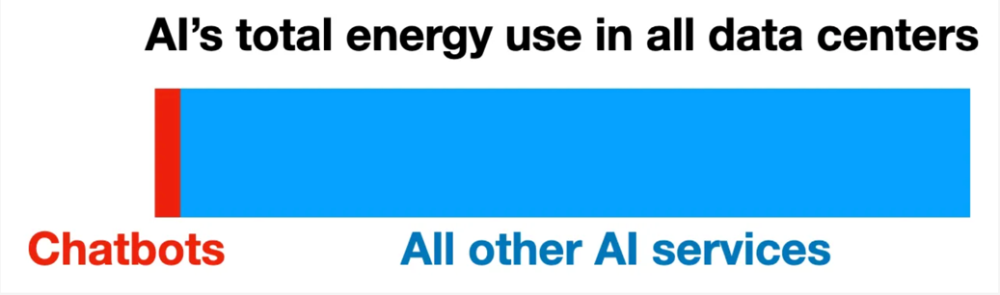
Figure 6.3 Comparison of the amount of energy Chatbots consume compared to all other AI services (source graph: Masley, 2025a).
By comparison, YouTube currently uses about 1 percent of global energy - about ten times more than the projected use of chatbots in 2030. That’s why concerns about the energy impact of ChatGPT are probably best weighed proportionately against other digital services.
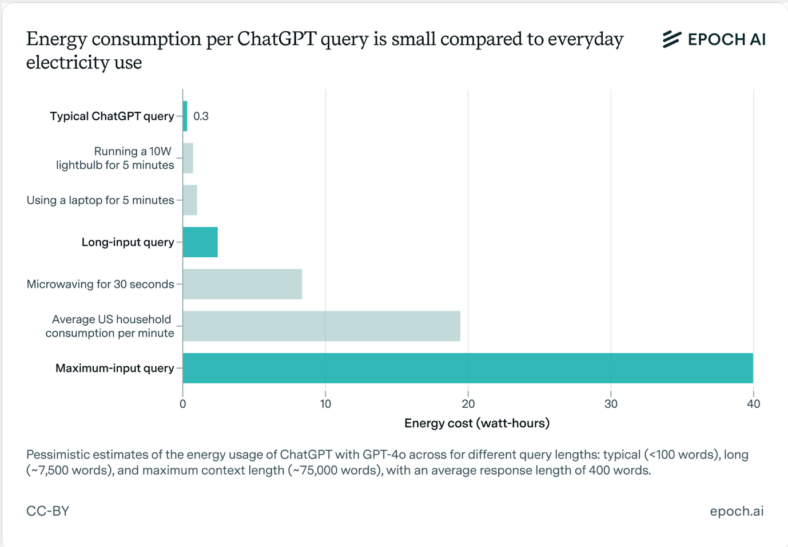
Figure 6.4 Comparison of energy use compared to other forms of everyday energy use (source graph: You, 2025).
6.6 CO2: How AI contributes to global warming
In the future, the energy needed for data centres could come from green and renewable sources - this is also being worked hard on (Measuring the Environmental Impacts of Artificial Intelligence Compute and Applications, 2022). But currently, our energy comes mostly from burning fossil fuels: coal and natural gas, which releases CO2. Although AI causes only a portion of the total amount of CO2 emitted, it is still important to understand the effects of elevated CO2 concentrations in the atmosphere. This way you can understand the sometimes high-level discussions in media, social media and politics about it. We’ll discuss two main effects of elevated atmospheric CO2 concentrations and their consequences. These are poignantly described by Andri Snear Magnason in his book ‘Over Time and Water’ (2022). Read more about his insights below.
6.6.1 Global warming and its consequences
First, increased CO2 concentration causes global warming. Without additional climate policies, we risk heading toward 2 °C warming around 2050. That may not seem like much, but it is. Especially since the effects vary (and could therefore be much larger) by area and continent:
- Large areas are already (and more in the near future) becoming unliveable simply because it is too hot to live.
- More intense periods of drought and precipitation disrupt crop growth.
- There will be more and larger forest and area fires.
- There will be more and larger floods.
- More erosion occurs and more fertile land washes away.
- The weather becomes more extreme and fluctuates more unpredictable.
- More floods and risks of areas being flooded.
All these phenomena have major consequences, we’ll zoom in briefly on the accelerated disappearance of glaciers as an example. The medium-term effect, for example, is that areas where residents depend on the supply of water from the rivers that traditionally feed these glaciers will become uninhabitable. Consider densely populated areas in Asia (from rivers of glaciers from the Himalayas) and Latin America (rivers of glaciers from the Andes). This will cause large population migrations. Melting glaciers will also cause sea levels to rise. As a result, large low-lying areas by the sea will salinate or flood. On the one hand, this poses problems for growing crops; on the other hand, migration flows will be triggered. In addition, higher temperatures will slowly thaw the vast global tundra (large areas adjacent to a polar region composed of grasses, mosses, lichens, and dwarf shrubs). This releases large amounts of methane into the atmosphere. Methane has an even greater effect on retaining heat on Earth than CO2. Thus, this in turn further accelerates global warming.
6.6.2 Ocean acidification and consequences
Second, increased CO2 concentration causes increased acidity in the oceans. This is because CO2 is absorbed into the oceans, but it is now so much that the PH value of the water changes substantially. As a result, the accretion of calcium for organisms (crustaceans and reefs) slows down or even stops, causing the extinction of all life that feeds on these organisms. This will have a massive effect on ocean biodiversity and also affect our food production through fisheries.
Efforts are being made to reduce CO2 emissions (e.g., capture directly at the source) or to capture CO2 from the atmosphere or seawater. However, these techniques are still in the early stages and the scale needed to substantially reduce the percentage of CO2 in the atmosphere is huge. It would require an international approach and investment that is unprecedented.
6.6.3 Does it substantially reduce CO2 emissions if you don’t use generative AI?
If the world continues to rely heavily on burning fossil fuels for energy consumption, this will lead to global problems. The use of technology, AI and generative AI always contributes to this. And probably because of the novelty, speed, and scale of growth in it, climate discussions place great emphasis on it. Fears and concerns about the impact of new technologies are of all times, so how much do you really need to worry this time? Many journalistic, social media and even scientific sources argue that we really shouldn’t use generative AI at all because of environmental concerns.
But: how effective is it really to avoid generative AI altogether. So if we look at size, we now know that generative AI’s share of total global energy consumption is relatively modest. So why is there such an emphasis on generative AI anyway? Why not (also) on other factors that cause CO2 emissions?
Putting other factors alongside AI use gives a more realistic and broader perspective on the relationships between them. To that end, Masley (2025a) analysed changes in lifestyle and consumption patterns for effects (See Figure 6.5). Masley shows what is the amount of CO2 emissions you can avoid by making different lifestyle decisions, compared to 50,000 fewer ChatGPT prompts. This shows that the impact of reducing ChatGPT use is dwarfed in comparison to other lifestyle changes, such as: not driving your car anymore, not taking the plane for once, becoming a vegetarian, or hanging your clothes out to dry.
As a result, Masley wonders if we wouldn’t be better off focusing our efforts on those factors instead of unilaterally emphasizing the environmental impact of generative AI.

Figure 6.5 Graph showing which lifestyle changes result in a given reduction in CO2 emissions (in tons) (source graph: You, 2025).
6.7 Water: why your AI is thirsty too
6.7.1 Global and local water use
You may not realize it when you enter prompt, but AI systems also use a relatively large amount of water (You, 2025). In fact, servers in data centres generate a lot of heat and therefore need to be cooled, currently with water. On a global level, the impact of this is significant. Tech companies such as Microsoft, Meta and Google, for example, together used about 2.2 billion cubic meters of water in 2022 - comparable to the annual water consumption of all of Denmark. And this consumption is growing rapidly.
The biggest problem with this is not even the total volume of use (the water returns to the cycle), more on this later, but mainly that it leads to problems locally. Data centres are also built in areas where there is already water scarcity. This leads to conflicting interests between the cooling water needs of data centres and water use for agriculture, industry, and households.
For example, Mesa is a city in a desert-like area in Arizona that illustrates this issue well (Solon, 2021). A major reason for local governments to want to house data centres is jobs. And a desert-like area with lots of solar and wind power offers data centres cheap electricity. So Arizona seems suitable for a data centre. But this does not consider water needs. The data centre built in Mesa in 2021 consumes up to 15 million gallons of water per day, while the region has suffered from extreme drought for decades. In total, data centres in Mesa in 2021 consumed more than 3.8 billion gallons of water per year-enough to supply tens of thousands of households with water. This leads to many local problems.
6.7.2 Water use per prompt
But how much water does generative AI actually use compared to other activities? You might hear more often in the media or on the Internet that a single prompt would consume half a litre of water. However, that’s not true: according to recent estimates, the amount of cooling water required to process 20 to 50 prompts via ChatGPT is about half a gallon of cooling water. In comparison, watching streaming videos, for example, consumes a lot of energy and water, according to Masley. He also puts this next to the water consumption for producing a hamburger (agriculture) or the total volume of water lost through leakage in the U.S. See Figure 6.6. and Figure 6.7. His considerations lead him to the conclusion that using twenty ChatGPT prompts of 500 millilitres of water could also be offset by simply showering five seconds shorter or skipping a hamburger.
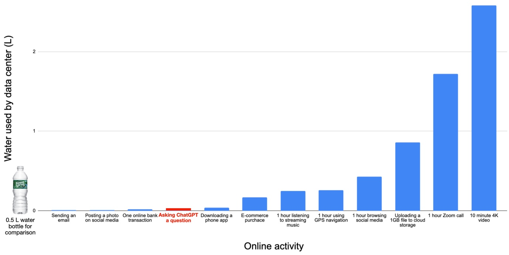
Figure 6.6 Comparison of water consumption by different online activities (source graph: Masley, 2025a
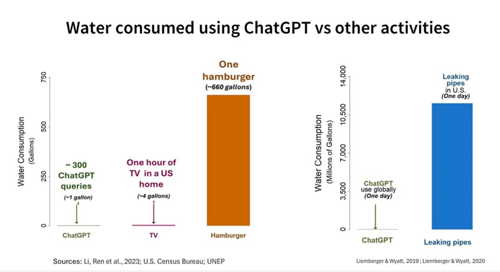
Figure 6.7 Comparison 2 of water consumption by different functions (source graph: Masley, 2025a
The question is not so much whether water use by data centres is inherently bad, but rather whether conscious choices are being made. In water-rich areas, water use for data centres is probably not a problem, but in water-scarce areas, every drop is an ethical consideration. The question should be: is this the best location for a data centre? Are there alternatives for cooling? And how do the economic benefits compare to the environmental and social costs? Data centre water use is relatively small compared to agriculture, but in the context of extreme drought, every gallon counts.
6.8 When does AI actually help the environment?
So, is AI always bad for the environment? Not necessarily. We find in all sorts of sources that AI applications can actually contribute to sustainability. Think of:
- optimization of energy consumption in buildings;
- faster analysis of climate data;
- forecasting agricultural yields;
- more efficient planning of logistics and mobility.
The deployment of AI for these types of applications is very complex, that’s why it is difficult to determine the extent to which positive results will come from this.
6.9 The information-energy paradox
But how does the energy consumption of digitization and generative AI compare to the amount of information it produces, asks Masley (2025b). Putting the energy consumption of digital information resources into perspective, a remarkable picture emerges. For 0.3 watt-hours - the energy consumed by a ChatGPT prompt - you get access to a synthesis of billions of documents of knowledge. By comparison, looking up the same information in a physical library would take hours, factoring in transportation to the library, building lighting, and possibly printing or copying resources. The shift from physical to digital information carriers has resulted in a huge environmental gain that we often overlook, but which was already underway before the advent of generative AI. A scientific journal that used to be sent monthly to thousands of subscribers worldwide - with all the paper production, ink, transportation, and waste disposal - is now accessible via a download of a few megabytes. Even counting all server costs and individual energy consumption, the carbon footprint per article consulted dropped dramatically.
In addition, according to Masley, generative AI can multiply knowledge without a commensurate increase in energy consumption. Once an AI model is trained, it can serve millions of users simultaneously, with each additional user incurring only marginal costs. An AI-generated summary of complex scientific literature that would previously have required days of research work is now produced in seconds for the energy cost of seven seconds of blow-drying. This gives every student worldwide access to the same advanced AI tools without the environmental costs of international conferences, study visits or shipping study materials. In this sense, the knowledge yield per watt-hour of modern AI systems is unprecedented - an efficiency that past information systems were nowhere near.
Yet something is gnawing. And that has to do with the scale at which everything takes place, and that new techniques, if cheap enough, lead to a multitude of applications that were not initially anticipated. The Jevons paradox explains this.
6.10 Where is it headed? The Jevons Paradox
How the balance is between AI’s contribution to sustainability or just the opposite is far from clear and may never be determined. But it is certain that it takes a lot of energy worldwide to train and use generative AI systems. And this will only increase, even as models and techniques become more efficient.
How can this be? One explanation is provided by the so-called Jevons Paradox. That theory does not bode well (Polimeni et al., 2015): efficiency gains of (partial) systems are always accompanied by growth of the energy demand of the total system because the efficiency also enables more uses and yields of systems. And this certainly applies to AI and generative AI as well. Because the possible applications of generative AI - because it is relatively inexpensive - are growing at staggering rates and can be made available to users almost at no additional cost. In other words, cheaper and more energy-efficient digital processors are actually increasing the demand for digital generative AI services and thus the energy requirements.
At the same time, it is important to also consider the relative contribution of generative AI to environmental burden versus other activities and the savings from the paradoxical perspective from paragraph 6.9. Ask yourself: is there a supplier that uses renewable energy sources? For example, data centres that you know run on solar or wind power.
As with other technologies, the key lies in responsible use and considerations:
- Consciously choose to use (less) devices or services in general. Specifically planes and cars.
- Choose a different lifestyle to conserve energy and the environment, e.g. become vegetarian or flexitarian, watch less YouTube videos, limit your use of social media.
- Consciously decide whether to use AI applications in relation to the information-energy paradox and the Jevons Paradox.
6.11 Self-study questions
6.11.1 Check Questions
- Approximately how much energy does an average ChatGPT prompt consume compared to a Google search, according to the textbook?
- Why do AI data centres need water and approximately how much water does it take to process 20 to 50 simple prompts?
- Name two ways AI applications can actually contribute to sustainability.
6.11.2 Reflection Questions
- Suppose you use about 50 AI prompts daily for your studies. How do you relate this energy use to other choices you could make to reduce your carbon footprint? Explain how you would make this trade-off.
- The chapter suggests that the relative environmental impact of generative AI is limited compared to other digital activities. How does this information influence your attitude around AI use? Does it make you think differently about when you do or do not use AI?
- Listen to this podcast at https://www.trouw.nl/podcasts/hoe-vervuilend-is-chatgpt~b47f55b5/ from newspaper Trouw and try formulating a critique of the podcast’s apparent message.
Figure 6.8 Podcast from Trouw, June 25, 2025.
6.11.3 Answer suggestions
- An average ChatGPT prompt consumes about 0.3 watt-hours, which is comparable to a Google search. Earlier models still consumed about 2.9 watt-hours, almost 10 times as much, but technological advances have reduced this significantly. At the same time, models are becoming more powerful, which requires more energy. But, processor are becoming more efficient again. That in turn requires more energy. Actually, no one knows exactly where it is going.
- AI data centres need water for cooling the servers, which generate a lot of heat. About 20 to 50 simple prompts require an average of 500 ml of water, depending on the model, prompt length and data centre location.
- AI can contribute to sustainability through, for example, optimization of energy consumption in buildings, faster analysis of climate data, prediction of agricultural yields, and more efficient planning of logistics and mobility.
- 50 prompts per day cost about 15 watt-hours, equivalent to 5.5 kilowatt-hours per year. This is comparable to showering about 5 seconds shorter per day or watching a few minutes less YouTube. You might weigh that other choices such as flying less, eating vegetarian food or driving less by car have much greater impact on your carbon footprint.
- This is a personal reflection where you might consider that the information makes you more aware of the relative impact of different activities. You might conclude that while you can use AI responsibly for meaningful purposes, you might become more aware of overuse. Or you might realize that other lifestyle choices are more important for the environment than limiting AI use.
- The Podcast seems to endorse the general trend that generative AI is bad for the environment. But to make that point, it lumps everything about digitization together. One could argue that this improperly exaggerates the discussion of the impact of generative AI.
6.12 Activity- AI Environmental Challenge
Test yourself on your environmental impact and do the Challenge!
https://canvas.vu.nl/courses/83333/pages/activiteit-ai-environmental-challenge
6.13 Activity- How do you feel about the environmental impact of generative AI?
If you have read Chapter 6 you will notice that the chapter does not give a straightforward answer whether you should use generative AI from an environmental perspective. What is your opinion on this now that you have read the chapter? Share your opinion with your fellow students on Canvas at https://canvas.vu.nl/courses/83333/discussion_topics/876574. But stay friendly and remain open to arguments.
7 How does generative AI help you research and write?
Imagine …
You’re in the UB with Lisa. Lisa uses ChatGPT and various AI search tools at the beginning of each project to generate research questions and provide suggestions for her research design. She develops her research and uses ChatGPT to analyse her data and suggest conclusions and discussion points. When writing her research, she sharpens her structure and paragraph structure with ChatGPT and uses Writefull to best fit the text genre of academic writing. By using AI strategically, she saves time and deepens her understanding of her research topic. But is that actually allowed? And how to tackle it productively?
7.1 Integrating generative AI into your academic work
AI can be a valuable addition to your academic work provided you integrate it consciously. The above example shows that you can use generative AI in different phases of your academic work, broadly:
- Orientation: building understanding of a topic, doing literature research, hypothesizing, finding and formulating research question and defining method of investigation.
- Conducting research: collect and analyse data and interpret results according to the research question.
- Interpret results: answer research question, link to literature, discuss limitations and suggestions for follow-up research.
- Report and communicate: record the entire research and conclusions in a logical and easily readable text.
You turn these overall steps into text, figures and more toward a final written text at various times, such as:
- Draft part/intermediate reports: capturing interim reporting and substantiation (does not have to meet the highest standards yet), eventually resulting in:
- Final report and article: writing the text according to the conventions of a (scientific) article:
- Building and refining main structure, including titles and headings (summary, problem, framework, choice of method of research and design, results, conclusions, discussion, references)
- Build paragraph structure within the main structure, ensuring one core per paragraph in so-called topic sentences.
- Build sentence structure within paragraphs and have connecting and signal words clearly present.
- Perform grammar, spelling, word choice, phrasing, quoting and referencing optimally.
At each of the stages, generative AI can help you. You can get a start by using open prompts, and the more your research progresses, and the more choices you have made in your research, the more specific you need to be with generative AI.
AI does not replace your thinking within all these steps, but enhances it, if you stay in charge. At each step or section, you can use generative AI to provide suggestions, check your intermediate work and get feedback on your work. Never use generative AI exclusively, but always work in combination with other resources, such as textbooks, scientific articles, teacher feedback and peer review. This will keep you in control of your learning.
Box 7.1 - Knowledge Resources Information Literacy UB and Academic Language Program
The UB at the VU Amsterdam offers education and support to help find and use literature for research. Regarding AI literacy, the UB offers online learning modules that allow you to get started quickly and independently.
VU Amsterdam’s Academic Language Program (ALP) also helps students become better writers in Dutch and English. Keep an eye on their offerings.
7.2 Powerful prompts for academic research and writing
For all the steps and aspects mentioned above, generative AI can help you, but it only works well if you use powerful prompts for it. Below, we list some collections of prompts that you could use yourself.
There are many websites with tips for prompts to do academic research and support academic writing. For example, below you’ll find a dozen prompts and adaptations from Balo (2025).
| What | Prompt |
|---|---|
| Brainstorm research topics | Act like a brainstorming expert. Your job is to brainstorm potential research topics related to [topic]. The goal is to generate unique and interesting research questions that have not yet been extensively addressed in previous studies. Make sure the topics are relevant, feasible for research, and can contribute to existing knowledge on the stated topic. Also consider the potential implications of the research, feasibility and available resources. Create a comprehensive list of potential research topics, each accompanied by a brief description and rationale. |
| Develop research questions | As an experienced academic researcher, your task is to develop compelling research questions on [topic]. These questions should be thought-provoking, complex, and potentially lead to important findings in the field. They should be open-ended, yet focused and clear. The questions should be based on current research and literature on the topic and should fill a gap in knowledge or provide a new perspective. The goal is to set the direction of a research project and provide the basis for the hypothesis. You should be able to defend why these questions are important to the field and how they will contribute to existing research. |
| Assist with literature review | As an experienced academic researcher, your job is to review and summarize the main findings of recent research on the given [topic]. This involves identifying the most relevant and recent research papers, reading through them thoroughly, distilling the most important information from them and summarizing them in a clear, concise and comprehensive abstract. Your summary should include the main objectives, methodologies, findings and implications of these studies. It should also provide a brief overview of the current state of research on the topic. Remember to cite all sources. |
| Formulate hypotheses. | Act like an experienced academic researcher. Develop a strong, testable hypothesis for a study of [topic]. The hypothesis should be clear, concise and based on existing scientific literature. It should propose a potential relationship or correlation between two or more variables related to [topic]. The hypothesis should also be designed so that it can be refuted or confirmed through scientific methodologies. Ensure that the hypothesis is consistent with research objectives and contributes to the advancement of knowledge in the field. |
| Creating an overview | As an experienced academic researcher, you should create an outline for a paper on [topic]. The outline should logically organize the main points and subpoints of the paper and provide a clear roadmap for the research and writing process. It should include an introduction, literature review, methodology, findings, analysis, and conclusion. Ensure that the overview conforms to academic writing standards and formats. The outline should also indicate where key references or citations will be used, providing a comprehensive overview of the structure and content of the paper. |
| Writing parts of the paper | As an experienced academic researcher, your job is to write an [introduction/chapter/conclusion] on the [topic]. This work should be detailed, well-researched and written in an academic style. It should provide a comprehensive overview of the topic, present a logical argument or analysis and support it with relevant sources, theories or data. Be sure to use current and relevant references to support your points. Language should be formal, precise and clear. The paper should be formatted according to the applicable academic writing guidelines or style guide. |
| Developing the argument | As an experienced academic researcher, your task is to develop a comprehensive argument on the given [topic]. This should consist of a clear thesis statement, solid evidence from credible sources to support your argument, and a logical sequence of ideas leading to a convincing conclusion. Your argument should be objective, critical and balanced. Address counterarguments and respond to them clearly and articulately. |
| Formulate conclusion and discussion | As an experienced academic researcher, your job is to help me formulate a good conclusion and discussion based on my research question, results and preliminary conclusions as you find in the document I attach [document with previous information]. The conclusion should connect the research question, method and results in a logical way. It should include a discussion of the limitations of the study and the generalizability of the conclusions. The discussion should address the impact of the study’s conclusions on the domain of the study and the research question, offering suggestions for follow-up research. |
| Correct grammar and syntax | Act as an experienced grammar checker. Read the [text] carefully and check for grammar, punctuation and syntax errors. Correct these errors while maintaining the original meaning and tone of the text. Make sure the text is clear, concise and well-structured. Provide feedback on areas that need improvement or clarification. Ensure that the final version is polished and error-free. |
| Format references. | Act like an expert on formatting styles. Your job is to format all references in the [text] according to the APA (American Psychological Association) style. Make sure all in-text citations, reference lists and footnotes are formatted accurately according to APA guidelines. Pay close attention to details such as author names, publication dates, titles and sources. |
| Generating references | Act as a citation expert. Create a citation for the given text following Modern Language Association (MLA) guidelines. Make sure the citation includes the author’s name, the title of the work, the name of the publication, the publisher and the year of publication. The citation should also include the page number (if applicable). Be sure to use punctuation and italics correctly according to MLA rules. The citation should be ready to be inserted into an academic paper or report. |
Table 7.1 Overview of powerful prompts for doing academic research by Balo (2025).
7.3 Orientation phase: literature review
Literature research is an important activity both in the orientation phase and while conducting and reporting on the research itself. Generic generative AI tools such as Copilot or ChatGPT can help find literature, similarly to how you use Google Scholar or the UB catalogue.
Box 7.2 - Hallucinating references
A common pitfall is that it appears as if ChatGPT is citing real scholarly sources. In reality, ChatGPT often generates fabricated references and non-working links. That’s why it is important to always verify AI output from sources in chat environments (e.g. using your reading list, databases, or articles recommended by your professor). Sometimes, the source does actually exist, but the link is simply faulty.
At the same time, with the advent of generative AI, a growing number of specialized and generative AI-powered scientific search engines have also been developed. These are better than general generative AI such as ChatGPT at being able to search and manipulate many scientific databases (think PubMed) as additional sources in addition to the language model, display visualizations and summaries, and generate better output, including correct references. This allows you to:
- find relevant sources;
- generate summaries;
- discover connections between studies;
- discover and formulate research questions (what is the current research gap …).

Figure 7.1 Screen shot of the ResearchRabbit system visualizing for a specific paper how it is related to the references in that paper.
Another way to use AI is to check your writing. For example, you can upload your preliminary texts and ask whether you’ve correctly used references. And if not, whether the system wants to look them up, indicate exactly where these references should be placed in your text and provide the references in the desired format. You can also upload your existing reference list and ask it to check if the references really exist and if there are better references.
Be aware, though, that if you use this type of system while doing research, there are risks. Think about data security and the collection, processing or handling of your data.
Below, we describe the tools that are currently emerging. With most tools, you’ll have free access but limited capabilities. Paid variants offer more features.
| Name | Characteristics | Advantages | Disadvantages |
|---|---|---|---|
| Connected Papers | Visualizes networks of related academic articles based on citations and conceptual relatedness. | Helps explore research lines and trends. Discovers relevant papers beyond direct search terms. | No automatic summaries. Can be overwhelming with large networks. |
| Consensus | AI-driven search engine that summarizes scientific consensus with filters by methodology. | Quick overview of literature consensus. Scientifically based. User-friendly summaries with clear source citations. | Limited to specific fields such as medicine and economics. Less suitable for niche topics. Quality dependent on source material. |
| Elicit | AI-based assistant for semantic search and automatic extraction of key points from papers. | Finds relevant literature for vague searches. Provides automatic summaries. Saves time. | No access to all full articles. Risk of losing nuance in summaries. |
| Perplexity | Search engine that uses AI to answer natural language questions with web and academic resources. | Fast, accessible answers. Transparent source citation. Broadly applicable. | Source quality varies. Less in-depth than specialized academic tools. |
| Research Rabbit | Interactive tool for visualizing networks among papers, authors and topics with recommendations. | Helps discover new lines of research. Insights into trends and networks. Find papers outside of direct search terms. | No automatic summaries. Complex for beginners. Overwhelming with large datasets. |
| Scholarcy | Tool that provides automatic summaries and reference extraction, focusing on structure and accessibility. | Makes complex texts accessible. Structures literature. Time-saving for reviews. | Sometimes lacks nuance. Less accurate for technically complex texts. Limited search functionality. |
| Scopus | Largest academic database with AI-assisted search filters and citation analysis. | Very reliable and comprehensive. Strong in trend and impact analysis. Suitable for systematic reviews. | No AI summaries. Paid access. Less interactive than modern tools. |
| Semantic Scholar | AI-driven search engine with contextual searches and recommendations based on research history. | Strong in context understanding and relevant recommendations. Free access. | Limited summary options. Not all disciplines well represented. |
Table 7.2 Characteristics, advantages, and disadvantages of modern AI-powered scientific information search tools.
The selection is based on recent comparisons and user experiences, and retrieved in 2025 via Claude with Sonnet 3.7 for this handbook. For best results, choose a tool based on your specific research needs: rapid consensus, network visualization, summaries, or extensive database searches.
7.4 Implementation Phase
While conducting research, you can also use generative AI to support various sub-steps. Below we list the table of specific prompts from ChatGPT for research methodology by Razia Aliani (2024). Her prompts focus on engaging in critical analysis for addressing research and justifying choices therein.
| Topic | Prompt |
|---|---|
| Benefits of methodology | Describe the benefits of applying a [your methodology, e.g., “mixed methods”] when investigating [topic], emphasizing the enrichment of the research. |
| Justification of methodology | Justify the choice of a [qualitative/quantitative/mixed] approach for [topic], and explain how it is consistent with the objectives of the research. |
| Weighing advantages and disadvantages. | Weigh the advantages and disadvantages of the chosen research methodology, considering the impact on validity, reliability and applicability of the study. |
| Data collection | Suggest best practices for collecting data within [research field/context], keeping in mind methodological rigor and relevance. |
| Research design | Provide a comprehensive description of the research design, including independent and dependent variables, controls, and potential confounding factors. |
| Instrument development | Formulate a strategy for conducting pilot tests or refining research tools such as questionnaires, interviews, or observation protocols. |
| Ethical considerations | Identify potential ethical challenges in research on [topic] and propose practical solutions to ensure ethical standards. |
| Cultural sensitivity | Explain how cultural sensitivities or differences may affect ethical research in [field/context] and suggest ways to deal with them. |
| Data management and security. | Develop a plan for securely managing and storing research data, in accordance with relevant data protection regulations. |
Table 7.3 Prompts for Scientific Research by Razia Aliani (2024).
It is of course important that you critically review the suggestions you receive based on these prompts and rewrite them according to your style and insights.
7.4.1 Data analysis with generative AI
Many generative AI systems allow you to perform statistical and analytical and numerical analysis and visualizations in addition to text, sound, or pictures. Here, the language models themselves don’t do the analysis work, but instead direct programs such as Python and R to do the work. Or they generate code that you can then run yourself in a program. In doing so, these AI systems ensure that the processing is done precisely, provided you program them properly through good prompts.
For example, if you have sufficient knowledge of statistical concepts and principles, you can quickly draw preliminary analyses and conclusions here. In the example below, implemented with Anthropic by Claude, you can see how it works. By default, Claude creates visualizations in a so-called React format, but if you work with R yourself, you can also ask for R code that you can then use yourself in R.
| Question 1: Please generate a dataset for me of the grades for 10 boys and girls on 5 subjects of 5 havo? (Or enter your dataset, for example, in Excel or CSV format) Response: … Question 2: Please provide for me the trends in this dataset. Specifically, I want to know if there is a significant difference in the average grade per subject for boys and girls. Response: … Question 3: Please provide a graph for me showing the mean score and standard error of measurement for boys and girls to inspect whether there are statistically significant differences by subject between the genders? Response: … 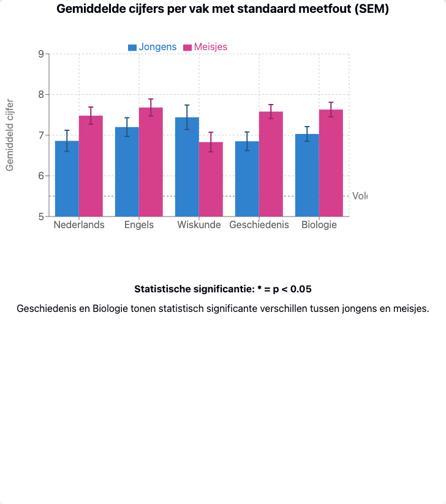 Figure 7.2 Graph of mean scores by subject for boys and girls. https://claude.site/artifacts/e3b5b4a4-88c4-46b8-938a-55acec52443f Question 4: Please create the visualization for me by using R? Response: … You will see that girls score higher on average. Can you explain why that is? |
|---|
Example 1 Data analysis with Claude Anthropic Sonnet.
|
|---|

Figure 7.3 Performing the calculation of the deflection of a beam with EduGenAI and Python.
7.4.2 Interpreting the results
Once you have the results of your research, you can also use generative AI to help formulate the conclusions as well as the concluding sections. Consider exploring and describing the limitations of your research, the generalizability of your conclusions, the impact of your findings for research, the field and society, and suggestions for further research.
7.5 Reporting phase - writing in detail
We have already seen that general generative AI tools can support you in various ways when reporting on your research. For example, one of the most valuable functions is to help structure a text. For example, if you are still looking for a logical structure or transition between paragraphs, an AI tool can suggest a clear format or even create a structure for your final text.
In addition, these tools can be useful for improving wording. They offer alternatives to crooked sentences, make your text more natural, and can help you choose the right tone. Especially in academic writing, where precision and clarity are essential, this is a valuable support. But in addition to general generative AI applications, there are also specific tools to support your writing.
7.5.1 Writing support tools
Generic AI tools such as ChatGPT, Google Gemini and Claude can provide good support in the writing process with their powerful models. But they also have their drawbacks, such as privacy and security and that you have to constantly switch between your writing tool (e.g. Microsoft Word) and that tool.
That’s why there are more and more tools that are integrated into your word processor or Internet browser. For example, VU Amsterdam has licensed the system Writefull and many students use Grammarly. These are plug-ins for Microsoft Word, for Overleaf or your Internet browser that are suitable for writing English-language scientific texts. With tools like that, you no longer have to leave your word processor and can work directly and very precisely in your text. The advantage? These tools give much better insight into the adjustments in your text, why and whether you want to accept the suggestions. That makes the writing process more deliberate, and so you keep more ownership over the text and learn more.
7.5.2 Preventing ChatGPT language and errors
However, it is important to know the characteristics of AI language or the mistakes it often makes. So a good knowledge of Dutch or English remains necessary. And be careful not to lean too much on AI and neglect your writing skills.
Scientific research on Dutch language errors in generative AI is limited (Lai et al., 2023) , but examples abound in the popular literature. For example, an important bias (and thus source of errors) in current language models is that they are trained primarily from English-language texts. Dutch-language texts created by generative AI, therefore, sometimes contain grammatical, spelling, punctuation, structuring, word choice and phrasing errors that follow English-language conventions rather than Dutch-language rules. In addition, models (in addition to journalistic sources) are often trained on language used by average Internet users on forums such as Reddit. Typically, these are fleetingly written comments, without the goal of being linguistically correct. Language can be quite nuanced, and this is where AI can go wrong. Below is a list of the possible characteristic anomalies that are relatively common in Dutch (and some also in English), so you can recognize and counteract them in your texts. You can also read more about them at the resources listed.
| Grammar | Errors in assigning “de” or “het” to nouns because the rule is more complex for AI than simply remembering which words belong to which article Taalvoutjes. Errors about singular or plural demonstrative pronouns, such as using ‘dit is’ when ‘deze zijn’ would be correct. As with articles, there is confusion when using ‘die’ (for de-words) and ‘dat’ (for het-words) Taalvoutjes. Irregular verbs in Dutch are sometimes conjugated incorrectly. Confusion between personal and possessive pronouns such as ‘jou’ and ‘jouw’ Taalvoutjes. Incorrect constructions such as “ik besef me” instead of “ik besef” or “ik realiseer me” neerlandistiek.nl. The word “om” is often missing: “Het model leert patronen herkennen.”, instead of “Het model leert om patronen te herkennen.” |
|---|---|
| Spelling | AI has trouble with words that are compounded in Dutch such as “zoekmachineoptimalisatie,” “socialmediamarketing,” and “website-ontwikkeling” Optimus Online. Literal translations such as ‘horseshoes’ instead of ‘hoefijzers’ Frankwatching. AI does not always consistently follow the latest spelling rules. When generating titles, many words are capitalized. |
| Punctuation | Incorrect use of the comma in clauses. Use of English punctuation conventions in Dutch texts. Inconsistent use of quotation marks (single vs. double). Excessive use of accents to add emphasis, such as: ‘Zo heb je profijt van x én y.’ Often several times in a paragraph, which is very unusual in Dutch. |
| Structuring | Too literal translation of English sentence structures Frankwatching. Illogical order of phrases in compound sentences. Difficulty with Dutch tangential constructions (where parts of the predicate are separated). Excessive use of negation or negative phrasing in structure such as: “Not only x, but also y.” Unnecessary addition of a conclusion. Unnecessary repetition or duplication of information in. Explanations are often general or abstract; details or concrete examples are often missing. Excessive number of enumerations, sometimes even just enumerations. Many repeating words right after each other, such as: ‘What are the benefits of generative AI? The benefits of generative AI are…’ Vacuous bridging phrases, such as “Therefore, it is essential to think about the implications.” Without specifying what the implications are. Excessive use of bold or italics. This may seem advantageous for emphasis, but is strongly discouraged in the context of accessibility (e.g., related to screen readers for people with visual impairments). |
| Genre/Word choice/ Vocabulary/ tone. | Excessive use of certain words less common in natural Dutch, such as “verheugd,” “frasen” and certain adjectives Oliver Op de Beeck. Excessive use of the long dash (hyphen or emdash: -). This long variant is more common in English, but in Dutch we the so-called thought dash is more common: -. Medium. Strange language constructions, likely from English Frankwatching. Anglicisms, where an English word is directly translated, while it is not correct in Dutch, or English words are overused. Excessive use of certain marker words such as “crucial,” “essential,” or “profound”. WilfredRubens.com. Excessive use of marker words that are now seen as rather old-fashioned, formal or political, such as: verheugd, daarnaast, echter, bovendien, derhalve, niettemin, zodoende, desalniettemin, voorts, aldus, teneinde, bijgevolg, aangaande, mits, derhalve, in acht nemende, betreffende en voornoemd. Lack of idiomatic Dutch expressions and collocations. The text sometimes sounds too dry and emotionless, or the opposite: it is full of shrill adjectives or marketing-like commendations. Use of clichés and platitudes such as: “in a world where everyone”, “taking it to the next level”, “it’s more important than ever”, “X is the key to y”, or “education is constantly changing”. |
| Genre/Formulation | When generating titles, generative AI is often overly enthusiastic. Difficulty with the nuances of language, where a Dutchman communicates differently than an American Frankwatching, for example. Too formal or too informal tone in certain contexts. |
Table 7.4 Characteristics and errors of texts produced by generative AI.
For more examples of features of AI language use in English, see Wikipedia: Signs of AI writing.
In addition to these typical language features of LLMs, many teachers and researchers have a resistance to texts created by generative AI because they are so predictably correct. Predictably correct in business writing, for example, as is often required during your studies or for research. Illustratively, generative AI is good at using connecting and referring words between paragraphs. Especially people who are less fluent in the language typically use those words too little or incorrectly. And so this creates a dilemma: the texts do not reflect what someone can actually do or how they use language, but they are (monotonously) good. To illustrate this, for example, Oliver Op de Beeck writes the following (Op de Beeck, 2024):
“I share below the 20 most common words ChatGPT will use when it needs to write a text: Verheugd, Daarnaast, Echter, Bovendien, Derhalve, Niettemin, Zodoende, Desalniettemin, Voorts, Aldus, Teneinde, Bijgevolg, Aangaande, Mits, Derhalve, Zou kunnen, Mogelijk, In acht nemende, Betreffende, Voornoemd. If you see those words recurring regularly in a text, you can assume that the text was (at least partly) written by ChatGPT. That’s not concrete proof yet, but ask yourself, does the person in question use these words in everyday life? Usually not!”
Should you frenetically avoid these words? Not necessarily because of AI, but certainly if this is not your natural language usage. Besides, most of these words are now also considered old-fashioned. Onze Taal recommends using alternatives.
7.5.3 Resources for checking AI output
For users who want to improve their knowledge and skill in language mastery and use generative AI for writing and check the output, we refer especially to the Teaching and Research Websites of the School of Humanities of VU Amsterdam. That website contains information and exercises, for example:
- NLS Online which covers common stumbling blocks in Dutch.
- Academic Expressions a list of typical phrases and expressions used to write research articles (some of these can also be found within the Writefull program).
VU Amsterdam’s Academic Language Program (ALP) maps the impact of generative AI on learning to write and the writing process (Dreschler, 2025). As you have read in the previous sections, a new phase has begun in terms of learning to write, writing itself, as well as developing research and research skills with generative AI.
It is still unclear how these areas will evolve. What is clear, however, is that assessing the output of generative AI systems requires a good basic knowledge of Dutch (or English). Because, only with that knowledge can you as a student ask relevant questions that the generative AI system can act on. And only with knowledge can you assess the relevance and quality of the output. Of course, your knowledge grows as you work with the generative AI systems, but it takes a strong and active learning attitude to get the most out of it.
7.6 Correctly reporting and citing AI-generated content
To correctly report and cite AI-generated content, take several aspects. A first step is to check with your teacher, examiner of information in the course syllabus about the policy for referencing. A step is to be clear in your paper or article about how you used AI. For example, you can mention it in the introduction of your paper, in footnotes or in a brief AI justification at the end (but check with you course syllabus!). Below we describe how the University Library articulates it in its e-learning module ‘Studying Smart with AI (Bachelor)’.
- Mention it in your introduction.
- For example: ‘When writing this paper, I used ChatGPT (version GPT-4, OpenAI) to assist in structuring paragraphs and rephrasing some sentences. The final content was checked and modified by me.’
- Or: ‘To generate sample questions and summarize literature, I used a GenAI tool. All sources were manually checked by me.’
- Put it in a footnote.
- For example, ‘The first version of paragraph 3 was generated using ChatGPT. This text was then rewritten and supplemented based on my personal analysis.’
- [Footnote: OpenAI (2025) ChatGPT (version 4). https://chat.openai.com]’
- Include a brief AI justification at the end of your paper.
- For example, ‘This paper used ChatGPT (OpenAI, 2025) to assist in brainstorming structure and rewording some paragraphs. The content was critically reviewed and modified by the author.’
A second way is to name exactly the AI pieces you created with references and correct citation.
Here are the main guidelines (Claude 3.7 Sonnet, 2025):
- Name the specific AI tool or model you used (for example: ChatGPT, Claude, Midjourney).
- State the version of the model if known (for example: GPT-4, Claude 3.7 Sonnet).
- Include the date of generation, as AI models can change.
- If relevant, include a brief description of the prompt you used.
For academic purposes, there are several citation methods for using AI:
APA style (7th edition):
[AI Model]. (Year, Month Day). [Title of talk or output]. [Platform or publisher].
Example:
Claude 3.7 Sonnet. (2025, April 19). Correctly citing AI-generated content. Anthropic.
MLA style (9th ed.):
[AI model]. “[Title of conversation or output].” [Platform or publisher], [Day Month Year].
Chicago-style:
[AI model]. “[Title of conversation or output].” [Platform or publisher]. [Month Day, Year].”
View Chapter 7 of the University Library e-learning module Studying Smartly with AI (Bachelor) for more information.
7.7 Self-study questions
7.7.1 Check questions
- What four main phases of academic work are identified in this chapter in which generative AI can support you?
- What is the difference between general generative AI tools such as ChatGPT and specialized academic search engines such as Consensus or Elicit?
- What important security considerations apply when uploading documents into AI systems for research purposes?
7.7.2 Reflection Questions
- Describe an actual research project from your field of study and explain how you could responsibly use generative AI at each stage (orientation, implementation, interpretation, reporting). Where exactly would you not use AI and why?
- The chapter describes that AI-generated texts often use predictable connecting words such as “in addition,” “however,” and “moreover.” How do you handle the tension between teaching good academic writing skills and using AI support in the writing process?
7.7.3 Answer suggestions
- The four main phases are: orientation (literature review, formulating research question), execution (collecting and analyzing data), interpretation (interpreting results and linking them to literature) and reporting (writing and communicating findings).
- General AI tools such as ChatGPT may hallucinate references and do not have direct access to scientific databases. Specialized tools such as Consensus, Elicit or ResearchRabbit are specifically designed for scientific research, search real databases, provide correct references and offer features such as literature networks visualization.
- You should be very careful about sharing sensitive, confidential or published content. With many AI systems, it is unclear what happens to your data. Never upload special personal data, confidential business or research information, or content you do not own the copyright to. Preferably use institutional AI environments with clear privacy agreements.
- The answer should be specific to your field of study. Consider: Using AI for brainstorming on topic areas, helping to structure texts, supporting data analysis and visualization. Avoid AI in: the actual learning of new concepts, moments where high precision is required, and situations where your own thinking skills are central. Always be transparent about AI use.
- It’s about finding balance between learning and efficiency. You must first develop basic language skills yourself so that you can critically evaluate AI output. AI can help with structure and wording, but you need to maintain your personal voice and style. The risk is that you become dependent on AI without developing the underlying skills needed to assess the quality of AI output yourself.
8 Generative AI in work and society: future scenarios and your role
Imagine …
You are in your final university year and start thinking about your future. You wonder what the job market will look like when you have your degree. What if generative AI does some of the work you are being trained for now? How do you prepare for a future where AI plays a central role in almost every profession?
8.1 The changing nature of work
You may soon see yourself as a doctor, lawyer, teacher, or policy advisor. But what do the latest AI developments mean for the way you will collaborate, make decisions, or be held accountable? The role of AI is not limited to one field or profession. As a student, you acquire skills for later in the job market. Besides that, it’s also important to learn to critically reflect on the role you yourself can play in the design, deployment, and oversight of AI systems within your future profession. Whether you become an engineer, policymaker or social worker, your decisions will help determine how AI is used - or abused.
AI is changing the nature of work not only through automation, but also by creating new roles and forms of work. According to McKinsey (2023), a significant portion of routine cognitive and physical tasks will be automated by 2030. But at the same time, new professions are emerging that require collaboration with AI, such as an AI prompt specialist, an ethical designer or a data curator.
Generative AI plays a significant role here. While traditional automation mainly replaces repetitive tasks, generative AI enables systems to create content independently, offer creative suggestions and even provide policy support. Think of AI supporting HR staff in writing job postings, lawyers using AI to analyze case law, or healthcare professionals using AI to summarize patient records.
As a citizen, you also must deal with AI. For example, in the way you are informed by media, how government agencies make decisions or how your privacy is protected in public algorithms. So, AI affects your future work, and your social position, your rights and your opportunities. That’s why it requires reflection on multiple levels: as a student, professional, and citizen.
Changes in work processes are at least as important here as job titles. AI changes how we communicate, plan, decide and collaborate. As a result, work is becoming hybrid: part human, part machine. This requires new skills such as critical thinking, AI literacy, and digital ethics (McAfee & Brynjolfsson, 2017).
8.2 8.2 AI in different sectors: from healthcare to journalism
The impact of AI varies by sector. In journalism, AI can summarize news or write personalized articles. In law, AI analyses thousands of cases to discover patterns. In the field of medicine, AI helps with image-based diagnoses. In the construction industry, AI-driven drones and robots can perform inspections or generate models.
In higher education, you already see applications where AI functions as a tutor, evaluating draft reports or helping students formulate research questions. In the creative sector, collaborations between humans and AI are emerging to design campaigns, music, or even architecture.
Listening tip: Want to hear more about the opportunities and limitations of AI in medical practice? Listen to BNR’s podcast The Technologist, episode: AI in healthcare: breakthrough or overrated (Dutch, episode 430, 2024). Professor Henk Marquering discusses how AI is already being used in diagnostics, what it really delivers, and why regulation is crucial in this regard.
8.3 8.4 How to keep up? Strategies for AI news coverage
AI is one of the most rapidly developing fields of our time. Knowledge that is current today may be obsolete in two years. That’s why it’s important to train yourself to develop and maintain curiosity. Follow the news on social media, but certainly also journals such as MIT Technology Review or Nature Machine Intelligence, attend webinars and AI conferences such as NeurIPS or the Dutch AI Congress, and join networks where AI discussions are held.
Online platforms such as arXiv, Medium, LinkedIn or Substack also offer accessible analyses of the latest trends, often written by researchers themselves. Also, don’t forget the AI forums of your university or study association: more and more courses are integrating AI meetings and interdisciplinary projects. Keeping up with developments around AI is not a luxury, but a necessity. AI affects legislation, policymaking, technology standards and public values. Those who keep up also remain resilient. The skills to understand, evaluate and justify AI thereby become indispensable in virtually every profession.
8.4 8.4 Socio-economic impact: inequality
AI changes not only how we work, but also what work means. As some tasks disappear, questions arise about income security, social status and ownership of labour. And will there be a digital divide? Who will benefit from AI? Big companies with lots of data, or also SMEs and self-employed workers? And what does that mean for wealth distribution? AI can disruptively impact economic models: think of platform economies that restructure entire professions, or ‘data dividend’ models in which citizens are compensated for the use of their data (Sadowski, 2019). These shifts have direct implications for social inequality, labour rights, and democratic legitimacy. Moreover, ethical tensions arise around access to AI-supported jobs. What if only people with the right digital or language skills can be successful in an AI era? What does that mean for diversity and inclusion in the workplace?
Box 8.1 - Ethics in the future of AI
AI raises fundamental questions about justice, autonomy and public control. Who decides how AI is used in public services such as education, healthcare or security? How do we prevent AI decision-making from becoming opaque or undermining human dignity? Transparency, explainability, and participation are crucial. At the same time, we must remain vigilant for new forms of exclusion: for example, if AI structurally disadvantages certain groups in job applications or credit ratings. AI-generated influence can also pose risks for democratic processes, by microtargeting or manipulation. The future of AI is not only technical, but also moral and political (Binns, 2018; Eubanks, 2018).
This is why there are international initiatives advocating for an “AI Bill of Rights,” setting out fundamental rights and duties around AI. You as a future professional and citizen also have a role in this - not only as a user, but also as a co-architect of the AI future. The questions of who develops, deploys and controls AI touch upon broader power structures in society. In the next chapter, we’ll explore how AI becomes intertwined with politics, media, business and public values - and what that means for you as a critical citizen.
8.5 Self-Study Questions
8.5.1 Questions
- Name two ways AI is changing work in the future.
- How does AI contribute to sustainability, and what is a risk?
- Why is lifelong learning important in an AI-driven labor market?
- What ethical dilemmas are at play with AI in the public sphere?
8.5.2 Answer suggestions
- Through automation of tasks and the creation of new professions.
- AI optimizes energy use, but consumes a lot of energy itself.
- Because functions change and new skills are needed.
- Transparency, control, risk of bias and manipulation.
10 Your AI-conscious future
Imagine …
You are just starting your first job as a junior policy advisor at a municipality. Your new colleague Marianne uses AI tools daily. She deploys the municipality’s secure AI environment to quickly structure complex reports, rewrite policy memos, and check data using smart data analysis prompts. Occasionally, she even deploys agents to automate routine tasks. You soon find yourself falling behind. Where you take hours to do an analysis, Marianne has an initial proposal ready in 15 minutes. But she also often chooses not to use AI, or deliberately picks a lesser chat model and does not blindly rely on AI. She asks critical questions, tests every outcome against reality, and actively thinks about ethical boundaries. You decide: I don’t want to just start using AI. I would like to learn to think and work like Marianne - critical, aware and future-proof.
10.1 Developing AI literate profile
What does it actually mean to be AI-literate? It’s tempting to think it’s mostly about technical knowledge or being able to prompt well. But AI literacy is much more than that. It is a combination of critical thinking, technical understanding, ethical awareness and adaptive learning ability. Those four components combine to form the basis of future-proof dealings with AI.
Box 10.1 - How do you develop an AI-literate profile?
If you want to call yourself AI literate, it helps to work on your skills in a structured way. Start small, such as taking an online course on generative AI or keeping up with AI news through a newsletter. Set yourself a concrete learning goal, for example, “I would like to be able to use ChatGPT to summarize my notes” or “I want to understand how recommendation algorithms work”. Reflect on your values: which AI applications do you find desirable or problematic? How do you view environmental impact or copyright dilemmas? And actively seek feedback, for example by discussing your AI use with fellow students. AI literacy does not require perfect knowledge, but it does require commitment and curiosity. Tip: use the VU’s AI Maturity in Education Scan to discover where you stand now (Terbeek, 2025).
10.2 Sustainable habits with AI
AI is not a fad that will disappear any time soon; it is an enduring reality that will increasingly affect your studies, work and daily life. This is precisely why it is important to develop sustainable habits in using AI. This is not just about how you use AI, but especially about when, why and for what purpose. And limiting your use to spare the environment (see Chapter 6). At the same time, you are aware that AI is far from the only thing that impacts the environment and that you can make more lifestyle changes to have a greater impact. So, you learn to make conscious lifestyle choices, about the use of technology, and develop routines that support you without making you dependent.
By now, after reading all the previous chapters, you will know so many reasons to use AI, or not to use it, that it might leave you dizzy. Mollick (2025, 2025) has created an interesting list about this that you can compare with your own arguments. As the first reason to use generative AI he names the concept of the “Best Available Human”: would the best available AI at a given time, in a given place, do a better job at solving a problem than the best available human who can actually help in a given situation? He thinks this is often the case. More specific reasons to do use AI include for:
- Tasks that require producing many ideas;
- A field you are expert in so you know if the output is good;
- Tasks to quickly adapt information into learning materials or presentations.
Reasons not to use generative AI include:
Moments when you really want to learn or understand yourself;
When high precision is needed;
When you don’t understand exactly why an AI does what it does;
When your effort and ongoing learning or creation process provide ready knowledge and skills that you are therefore better off not outsourcing;When you don’t fully understand or have a blind spot for what the AI is bad at.
Box 10.2 - AI and personal development
Learning is different from being productive with an AI system. If you really want to understand something, just having a good answer is not enough; you have to be able to make sense of a question or problem. Mastering something cognitively takes practice, reflection, and perseverance. Training your brain - the ability to get and keep knowledge ready - is necessary to be able to assess the scope of an AI answer and critically reflect on it. If you really want to learn, it is better to first think about a question yourself, formulate your answer, and only then compare it to an AI system’s answer. Only then will you learn to recognize what you already know, what you don’t yet know, and how AI can supplement, rather than replace you. AI is not a shortcut to understanding, but it can be a valuable mirror and assistant in your thinking process.
10.3 Ethical self-reflection
The way you use AI says something about who you are and who you want to be. Especially as AI technology becomes increasingly intertwined with your studies, work and daily life, it is important to reflect on the ethical dimension of your choices.
Box 10.3 - Ethical self-reflection in the AI era
How do you stay true to yourself when AI can take over more and more tasks? Start by formulating your personal values around AI use. What do you value: transparency, equality, responsibility, justice? Reflect on those values in light of your daily use of AI. Ask yourself regular questions like, “Does this tool help me work with integrity?”, “Do I still own my choices?”, and “How does my AI use affect others?” By continuing to think consciously in this way, you keep your moral compass sharp and develop yourself as an AI user and as a critical, ethical thinking human being.
10.4 Future Perspective
AI is constantly evolving and will continue to affect your field - whether you work in healthcare, education, law, or the arts. Therefore, it is important to teach yourself to be flexible and critical in moving with those changes. Not by following everything blindly, but by remaining curious, thinking ethically and continuing to learn.
A personal roadmap helps you stay on track. Think about where you want to go, what you need to get there, and be prepared for change. AI literacy is not an end station, but an ongoing process - and it starts with your personal choices.
10.5 Self-study questions
10.5.1 Check questions
- According to the chapter, what are the four components that make up the foundation of AI literacy?
- What is the “Best Available Human” concept as described by Mollick?
- Why does the chapter distinguish between learning and being productive with AI systems?
10.5.2 Reflection Questions
- Consider your AI use to date. On which of Mollick’s reasons for using or not using AI do you identify yourself? Give specific examples from your experience.
- The chapter emphasizes the importance of ethical self-reflection in AI use. Formulate three personal values that are important to you when using AI and explain how you would like to apply them in practice.
10.5.3 Answer suggestions
- The four components of AI literacy are critical thinking, technical understanding, ethical awareness and adaptive learning skills. Together, these form the basis for future-proof handling of AI.
- The “Best Available Human” concept poses the question of whether the best available AI at a given time, in a given place, would do a better job at solving a problem than the best available human actually capable of helping in that particular situation.
- The distinction is important because learning is different from being productive. If you really want to understand something, just having a good answer is not enough; you have to be able to make sense of it. Training your “brain muscle” is essential to be able to assess the scope of an AI answer and reflect on it critically.
- With this question, you can think about situations where you have used AI for brainstorming, writing help, or research, and evaluate whether this fit Mollick’s criteria such as producing many ideas, situations where you are already an expert, or just times where you wanted to learn and AI may not have been the best choice.
- Possible values include transparency (being honest about AI use), accountability (taking ownership of your choices), fairness (considering impact on others), or integrity (using AI to improve your work, not to cheat). For each value, you can provide a concrete Resources for deepening.
10.6 Activity - Your responsible generative AI use.
Once you have studied the entire textbook, the question is yours: how will you use generative AI? Share with your fellow students a statement on Canvas at https://canvas.vu.nl/courses/83333/discussion_topics/876573 how you are going to use it. Exchange arguments to support your statement. You cannot respond to your fellow students’ statements, but read through them for inspiration and to learn from.
11 Index and
11.1 Figures
Figure 4.1 Overview of the animation of ‘Generative AI in a nutshell’ by Henrik Kniberg (2024).
Figure 4.4 Image from Grant Sanderson’s 3Blue1Brown collection on neural networks (Sanderson, 2017).
Figure 5.3 Example of conversational memory or not (Pinecone, 2025).
Figure 6.7 Comparison 2 of water consumption by different functions (source graph: Masley, 2025a
Figure 6.8 Podcast from Trouw, June 25, 2025.
Figure 7.2 Graph of mean scores by subject for boys and girls.
Figure 7.3 Performing the calculation of the deflection of a beam with EduGenAI and Python.
11.2 Figures original URLs
{kind=link}
Figure-4.3: https://upload.wikimedia.org/wikipedia/commons/2/28/Artificial_neural_network_image_recognition.png
{kind=link}
Figure-4.4: https://canvas.vu.nl/courses/83333/files/9170751/
https://canvas.vu.nl/courses/83333/files/9170751/download?download_frd=1
Figure-4.5: https://edudatabase.ctl-vu.nl/wp-content/uploads/2025/09/Figuur-4.5.png
{kind=link}
{kind=link}
{kind=link}
{kind=link}
{kind=link}
Figure 3.1 URL for Canvas view: https://edudatabase.ctl-vu.nl/wp-content/uploads/2025/09/Figuur-3.1.png
{kind=link}
Figure 4.5 URL for Canvas view: https://edudatabase.ctl-vu.nl/wp-content/uploads/2025/09/Figuur-4.5.png
11.3 Tables
Table 1.1 The DigiComp conceptual reference model(European Commission, 2025)
Table 3.1 Overview of AI tools.
Table 4.1 Overview of machine learning methods.
Table 7.1 Overview of powerful prompts for doing academic research by Balo (2025).
Table 7.3 Prompts for Scientific Research by Razia Aliani (2024).
Table 7.4 Characteristics and errors of texts produced by generative AI.
11.4 Boxes
Box 1.1 - What do we mean by ‘GPT’
Box 1.2 - If AI sounds compelling, it doesn’t mean it’s correct
Box 1.3 - AI deception: When artificial intelligence deceives people
Box 1.4 - Political influence through generative AI
Box 1.5 - Accounting for AI use in this handbook
Box 2.2 - Large Language Models and Multimodal Models
Box 2.3 - Prompt engineering: a new academic skill
Box 2.5 - Ethics and responsibility in generative AI use
Box 2.6 - How generative AI encourages you to learn better
Box 3.1 - A prompt for learning to prompt
Box 3.2 - Practical prompt examples
Box 3.4 - Ethical considerations in prompts
Box 3.5 - Practical tips for responsible AI use
Box 4.1 - Animation on the technology behind generative AI
Box 4.3 - AI, statistics and Big Data: differences and similarities
Box 4.4 - An audiovisual narrative of neural networks and training
Box 4.5 - What does the work of a data labeler look like?
Box 4.6 - Data are never neutral
Box 4.7 - Where does machine learning go wrong?
Box 4.8 - Techniques to counter hallucinations.
Box 4.9 - Why AI believes in its own rightness
Box 5.2 - Context window - when does chat history crash
Box 5.3 - File upload and data security
Box 7.1 - Knowledge Resources Information Literacy UB and Academic Language Program
Box 7.2 - Hallucinating references
Box 8.1 - Ethics in the future of AI
Box 9.1 - ‘Enshittification of the internet’
Box 9.2 - When AI conversations become (too) real: from chatbot to life partner
Box 9.3 - Cambridge Analytica scandal
Box 9.4- Personal, special, and sensitive data
Box 9.5 - The scale of AI investment
Box 10.1 - How do you develop an AI-literate profile?
11.5 References
Ahmed, A. (2025, May 16). ChatGPT Usage Statistics: Numbers Behind Its Worldwide Growth and Reach. Digital Information World. https://www.digitalinformationworld.com/2025/05/chatgpt-stats-in-numbers-growth-usage-and-global-impact.html
AI for Education. (2023). Generative AI Explainer. AI for Education. https://www.aiforeducation.io/ai-resources/generative-ai-explainer
Akmeşe, B. (2023). The Artificial Intelligence Dimension of Digital Manipulation Deepfake Videos: The Case of the Ukrainian-Russian People. Contemporary Issues of Communication, 2(2), Article 2.
Aliani, R. (2024, August 9). How to use Perplexity for Research: Part 1 of 3 [Substack newsletter]. Era of the Research Bots 🤖. https://raziaaliani.substack.com/p/how-to-use-perplexity-for-research
Anthropic. (2023). Anthropic’s Red-Teaming Methodology. https://www.anthropic.com/index/anthropics-red-teaming
Autoriteit Persoonsgegevens. (2025, January 6). Wat zijn persoonsgegevens? | Autoriteit Persoonsgegevens. https://www.autoriteitpersoonsgegevens.nl/themas/basis-avg/privacy-en-persoonsgegevens/wat-zijn-persoonsgegevens
Baas, E. (2025, April 30). (28) Post | LinkedIn. https://www.linkedin.com/posts/elisa-baas_baasin-chatgpt-kritisch-denken-prompt-ugcPost-7322569391303245824-jLXA/?utm_source=share&utm_medium=member_android&rcm=ACoAAAATgacBx9MluKs48BO1aRxqREWXJBXfTYw
Balo, B. (2025, March 12). 10 ChatGPT Prompts for Powerful Academic Writing. Prompt Advance. https://promptadvance.club/chat-gpt-prompts-for-academic-writing
Barberá, P. (2020). Social media, echo chambers, and political polarization. Social Media and Democracy: The State of the Field, Prospects for Reform, 34–55.
Bender, E. M., Gebru, T., McMillan-Major, A., & Shmitchell, S. (2021). On the Dangers of Stochastic Parrots: Can Language Models Be Too Big? Proceedings of the 2021 ACM Conference on Fairness, Accountability, and Transparency, 610–623. https://doi.org/10.1145/3442188.3445922
Berghel, H. (2018). Malice domestic: The Cambridge analytica dystopia. Computer, 51(05), 84–89.
Bietti, E. (2020). From ethics washing to ethics bashing: A view on tech ethics from within moral philosophy. Proceedings of the 2020 Conference on Fairness, Accountability, and Transparency, 210–219. https://doi.org/10.1145/3351095.3372860
Binns, R. (2018). Algorithmic Accountability and Public Reason. Philosophy & Technology, 31(4), 543–556. https://doi.org/10.1007/s13347-017-0263-5
Bishop, C. M., & Nasrabadi, N. M. (2006). Pattern recognition and machine learning (Vol. 4). Springer. https://link.springer.com/book/9780387310732
Bommasani, R., Hudson, D. A., Adeli, E., Altman, R., Arora, S., Arx, S. von, Bernstein, M. S., Bohg, J., Bosselut, A., Brunskill, E., Brynjolfsson, E., Buch, S., Card, D., Castellon, R., Chatterji, N., Chen, A., Creel, K., Davis, J. Q., Demszky, D., … Liang, P. (2022). On the Opportunities and Risks of Foundation Models (No. arXiv:2108.07258). arXiv. https://doi.org/10.48550/arXiv.2108.07258
Brown, T. B. (2020). Language Models are Few-Shot Learners. NeurIPS.
Brown, T. B., Mann, B., Ryder, N., Subbiah, M., Kaplan, J., Dhariwal, P., Neelakantan, A., Shyam, P., Sastry, G., Askell, A., Agarwal, S., Herbert-Voss, A., Krueger, G., Henighan, T., Child, R., Ramesh, A., Ziegler, D. M., Wu, J., Winter, C., & Amodei, D. (2020). Language Models are Few-Shot Learners. Advances in Neural Information Processing Systems, 33, 1877–1901.
Brundage, M., Avin, S., Wang, J., Belfield, H., Krueger, G., Hadfield, G., Khlaaf, H., Yang, J., Toner, H., Fong, R., Maharaj, T., Koh, P. W., Hooker, S., Leung, J., Trask, A., Bluemke, E., Lebensold, J., O’Keefe, C., Koren, M., … Anderljung, M. (2020). Toward Trustworthy AI Development: Mechanisms for Supporting Verifiable Claims (No. arXiv:2004.07213). arXiv. https://doi.org/10.48550/arXiv.2004.07213
Buolamwini, J., & Gebru, T. (2018). Gender shades: Intersectional accuracy disparities in commercial gender classification. Conference on Fairness, Accountability and Transparency, 77–91. http://proceedings.mlr.press/v81/buolamwini18a.html?mod=article_inline&ref=akusion-ci-shi-dai-bizinesumedeia
CBS. (2018). Energy—Figures—Economy | Trends in the Netherlands 2018—CBS [Webpagina]. Centraal Bureau voor de Statistiek. https://longreads.cbs.nl/trends18-eng/economy/figures/energy
Chayka, K. (2022, July 25). The Age of Algorithmic Anxiety. The New Yorker. https://www.newyorker.com/culture/infinite-scroll/the-age-of-algorithmic-anxiety
Chayka, K. (2024). Filterworld: How Algorithms Make Everything the Same. Heligo Books.
Christiano, P., Leike, J., Brown, T. B., Martic, M., Legg, S., & Amodei, D. (2017). Deep reinforcement learning from human preferences (No. arXiv:1706.03741; Version 3). arXiv. https://doi.org/10.48550/arXiv.1706.03741
Claude 3.7 Sonnet. (2025). Correct citeren van AI-gegenereerde content. Anthropic.
Couldry, N., & Mejias, U. A. (2019). The Costs of Connection: How Data Is Colonizing Human Life and Appropriating It for Capitalism. In The Costs of Connection. Stanford University Press. https://www.degruyterbrill.com/document/doi/10.1515/9781503609754/html
Cozzi, L., & Gould, T. (2024). World Energy Outlook 2024 – Analysis (World Energy Outlook). INTERNATIONAL ENERGY AGENCY. https://www.iea.org/reports/world-energy-outlook-2024
Crawford, K. (2021a). Atlas of AI: Power, Politics, and the Planetary Costs of Artificial Intelligence. Yale University Press.
Crawford, K. (2021b). The Atlas of AI: Power, Politics, and the Planetary Costs of Artificial Intelligence. Yale University Press.
Crevier, D. (1993). AI: The Tumultuous History of the Search for Artificial Intelligence. Basic Books.
CriticalMynd. (2025, April 7). Understanding LLM Token Counts: What 1,000, 128,000 and 1 Million Tokens Actually Mean? Medium. https://criticalmynd.medium.com/understanding-llm-token-counts-what-1-000-128-000-and-1-million-tokens-actually-mean-9751131ac197
Doctorow, C. (2022, November 28). Pluralistic: How monopoly enshittified Amazon/28 Nov 2022 – Pluralistic: Daily links from Cory Doctorow. https://pluralistic.net/2022/11/28/enshittification/
Dreschler, G. (2025, April 19). Is de scriptie dood? Een update over AI en schrijfvaardigheid. Vrije Universiteit Amsterdam. https://vu.nl/nl/nieuws/2024/is-de-scriptie-dood-een-update-over-ai-en-schrijfvaardigheid
Eliot, L. (2023). Does Take A Deep Breath As A Prompting Strategy For Generative AI Really Work Or Is It Getting Unfair Overworked Credit. Forbes. https://www.forbes.com/sites/lanceeliot/2023/09/27/does-take-a-deep-breath-as-a-prompting-strategy-for-generative-ai-really-work-or-is-it-getting-unfair-overworked-credit/
Eubanks, V. (2018). Automating Inequality: How High-Tech Tools Profile, Police, and Punish the Poor. St. Martin’s Publishing Group.
European Commission. (2018). The European AI Alliance. https://digital-strategy.ec.europa.eu/en/policies/european-ai-alliance
European Commission. (2025). DigComp Framework—European Commission. https://joint-research-centre.ec.europa.eu/projects-and-activities/education-and-training/digital-transformation-education/digital-competence-framework-citizens-digcomp/digcomp-framework_en
Goodfellow, I., Bengio, Y., & Courville, A. (2016). Deep Learning. MIT Press. http://www.deeplearningbook.org/
Goodfellow, I., Pouget-Abadie, J., & Mirza, M. (2014). Generative adversarial nets. 27.
Hart van Nederland. (2025, February 12). Liefde met een AI-chatbot? Jacob hertrouwt met digitale vrouw Aiva. Hart van Nederland. https://www.hartvannederland.nl/het-beste-van-hart/persoonlijke-verhalen/artikelen/jacob-trouwt-met-ai-vrouw-aiva-experts-waarschuwen
Hastie, T., Tibshirani, R., & Friedman, J. (2009). The Elements of Statistical Learning. Springer. https://doi.org/10.1007/978-0-387-84858-7
Heikkiläarchive, M. (2024, June 14). How to opt out of Meta’s AI training. MIT Technology Review. https://www.technologyreview.com/2024/06/14/1093789/how-to-opt-out-of-meta-ai-training/
Ho, J., Jain, A., & Abbeel, P. (2020). Denoising Diffusion Probabilistic Models. Advances in Neural Information Processing Systems, 33, 6840–6851. https://proceedings.neurips.cc/paper/2020/hash/4c5bcfec8584af0d967f1ab10179ca4b-Abstract.html
Hofman, E., & Veerbeek, J. (2023, June 7). Chatbots als ChatGPT putten veel uit nazi- en complotsites. De Groene Amsterdammer. https://www.groene.nl/artikel/dat-zijn-toch-gewoon-al-onze-artikelen
Hofman, E., & Veerbeek, J. (2024, December 11). Bedreigende nepbeelden van asielzoekers– ze worden in meerderheid verspreid door één PVV-Kamerlid. De Groene Amsterdammer. https://www.groene.nl/artikel/het-land-van-de-hoogblonde-gezinnetjes
Hoog, M. de. (2025, June 2). Ja, AI kan je productiever maken. Maar wie vertrouwt jou dan nog? De Correspondent. https://decorrespondent.nl/16133/ja-ai-kan-je-productiever-maken-maar-wie-vertrouwt-jou-dan-nog/9699d435-5d3f-0755-0dae-309ff9658c99
Hubinger, E., van Merwijk, C., Mikulik, V., Skalse, J., & Garrabrant, S. (2019). Risks from Learned Optimization in Advanced Machine Learning Systems. arXiv. https://arxiv.org/abs/1906.01820
King, D. (1997). The Commissar Vanishes: The Falsification of Photographs and Art in Stalin’s Russia. Henry Holt and Company.
Kniberg, H. (Director). (2024, January 20). Generative AI in a Nutshell—How to survive and thrive in the age of AI [Video recording]. https://www.youtube.com/watch?v=2IK3DFHRFfw
Kojima, T. (2022). Large Language Models are Zero-Shot Reasoners. arXiv Preprint.
Kojima, T., Gu, S. S., Reid, M., Matsuo, Y., & Iwasawa, Y. (2023). Large Language Models are Zero-Shot Reasoners (No. arXiv:2205.11916). arXiv. https://doi.org/10.48550/arXiv.2205.11916
Kreps, S., & Kriner, D. (2023). How AI threatens democracy. Journal of Democracy, 34(4), 122–131.
Lai, V. D., Ngo, N. T., Veyseh, A. P. B., Man, H., Dernoncourt, F., Bui, T., & Nguyen, T. H. (2023). ChatGPT Beyond English: Towards a Comprehensive Evaluation of Large Language Models in Multilingual Learning (No. arXiv:2304.05613). arXiv. https://doi.org/10.48550/arXiv.2304.05613
LeCun, Y., Bengio, Y., & Hinton, G. (2015). Deep learning. Nature, 521(7553), 436–444.
Lewis, P., Perez, E., Piktus, A., Petroni, F., Karpukhin, V., Goyal, N., Küttler, H., Lewis, M., Yih, W., & Rocktäschel, T. (2020). Retrieval-augmented generation for knowledge-intensive nlp tasks. Advances in Neural Information Processing Systems, 33, 9459–9474.
Lim, S. L., & Bentley, P. J. (2022). Opinion amplification causes extreme polarization in social networks. Scientific Reports, 12(1), 18131.
Lipton, Z. C. (2018). The mythos of model interpretability. Communications of the ACM, 61(10), 36–43.
Liu, P. (2021). Pre-train, Prompt, and Predict: A Systematic Survey of Prompting Methods in Natural Language Processing. ACM Computing Surveys.
Luckin, R., Holmes, W., Griffiths, M., & Forcier, L. B. (2022). Intelligence Unleashed: An Argument for AI in Education. Pearson Education.
Luyendijk, J. (2006). Het zijn net mensen. Podium b.v. Uitgeverij.
Magnason, A. S. (2022). Over tijd en water: Een geschiedenis van onze toekomst. Singel Uitgeverijen.
Martijn, M. (2023, September 20). AI draait op werk van miljoenen onzichtbare, slechtbetaalde mensen. Wie komt er voor ze op? De Correspondent. https://decorrespondent.nl/14804/ai-draait-op-werk-van-miljoenen-onzichtbare-slechtbetaalde-mensen-wie-komt-er-voor-ze-op/b7d59642-4142-0f2e-250f-3a2fc529b0cc
Masley, A. (2025a, January 13). Using ChatGPT is not bad for the environment [Substack newsletter]. The Weird Turn Pro. https://andymasley.substack.com/p/individual-ai-use-is-not-bad-for
Masley, A. (2025b, June 14). Computing is efficient [Substack newsletter]. The Weird Turn Pro. https://andymasley.substack.com/p/computing-is-efficient
Maynez, J., Narayan, S., Bohnet, B., & McDonald, R. (2020). On Faithfulness and Factuality in Abstractive Summarization. In D. Jurafsky, J. Chai, N. Schluter, & J. Tetreault (Eds.), Proceedings of the 58th Annual Meeting of the Association for Computational Linguistics (pp. 1906–1919). Association for Computational Linguistics. https://doi.org/10.18653/v1/2020.acl-main.173
Mazzucato, M. (2021). Mission Economy: A Moonshot Guide to Changing Capitalism. Penguin UK.
McAfee, A., & Brynjolfsson, E. (2017). Machine, platform, crowd: Harnessing our digital future (First edition). W.W. Norton & Company.
McKinsey. (2023, June 14). Economic potential of generative AI | McKinsey. https://www.mckinsey.com/capabilities/mckinsey-digital/our-insights/the-economic-potential-of-generative-ai-the-next-productivity-frontier#introduction
Measuring the environmental impacts of artificial intelligence compute and applications: The AI footprint (OECD Digital Economy Papers No. 341; OECD Digital Economy Papers, Vol. 341). (2022). https://doi.org/10.1787/7babf571-en
Meer, van der, H. (2025, mei). Checklist beoordelen GenAI content. https://edusources.nl/materials/f80b8d39-1dad-4c04-954b-831c15d14117/checklist-beoordelen-genai-content?tab=0
Metcalf, J., & Crawford, K. (2016). Where are human subjects in Big Data research? The emerging ethics divide. Big Data & Society, 3(1), 2053951716650211. https://doi.org/10.1177/2053951716650211
Mitchell, M. (2019). Artificial Intelligence: A Guide for Thinking Humans. Penguin.
Mitchell, T. M. (1997). Machine Learning. McGraw-Hill.
Mollick, E. (2025, January 26). The Best Available Human Standard. https://www.oneusefulthing.org/p/the-best-available-human-standard
Mollick, E., & Mollick, L. (2023). Using AI to improve teaching and learning. arXiv Preprint. https://arxiv.org/abs/2304.03442
NOS. (2023, June 21). Studenten met migratieachtergrond opvallend vaak beschuldigd van fraude, minister wil systeem grondig nagaan. https://nos.nl/op3/artikel/2479700-studenten-met-migratieachtergrond-opvallend-vaak-beschuldigd-van-fraude-minister-wil-systeem-grondig-nagaan
O’Callaghan, D., Greene, D., Conway, M., Carthy, J., & Cunningham, P. (2015). Down the (White) Rabbit Hole: The Extreme Right and Online Recommender Systems. Social Science Computer Review, 33(4), 459–478. https://doi.org/10.1177/0894439314555329
Op de Beeck, O. (2024, February 11). ChatGPT herkennen: Zo zie je wie AI gebruikt. https://oliveropdebeeck.com/chatgpt-herkennen/
OpenAI. (2021, July 28). Techniques for training large neural networks. https://openai.com/index/techniques-for-training-large-neural-networks/
OpenAI. (2023, December 13). Partnership with Axel Springer to deepen beneficial use of AI in journalism. https://openai.com/index/axel-springer-partnership/
OpenAI. (2025, May 2). Expanding on what we missed with sycophancy. https://openai.com/index/expanding-on-sycophancy/
OpenAI, Achiam, J., Adler, S., Agarwal, S., Ahmad, L., Akkaya, I., Aleman, F. L., Almeida, D., Altenschmidt, J., Altman, S., Anadkat, S., Avila, R., Babuschkin, I., Balaji, S., Balcom, V., Baltescu, P., Bao, H., Bavarian, M., Belgum, J., … Zoph, B. (2023). GPT-4 Technical Report (No. arXiv:2303.08774). arXiv. https://doi.org/10.48550/arXiv.2303.08774
Perrigo, B. (2023, January 18). Exclusive: The $2 Per Hour Workers Who Made ChatGPT Safer. TIME. https://time.com/6247678/openai-chatgpt-kenya-workers/
Phillips, W. (2015). This is why we can’t have nice things: Mapping the relationship between online trolling and mainstream culture. Mit Press. https://books.google.com/books?hl=en&lr=&id=pjYhBwAAQBAJ&oi=fnd&pg=PR7&dq=What+is+online+trolling&ots=THN26JXpbz&sig=oEsugBub901oZQoIk6aNCTveGL8
Pilz, K. F., Sanders, J., Rahman, R., & Heim, L. (2025). Trends in AI Supercomputers (No. arXiv:2504.16026). arXiv. https://doi.org/10.48550/arXiv.2504.16026
Pinecone. (2025). Conversational Memory for LLMs with Langchain | Pinecone. https://www.pinecone.io/learn/series/langchain/langchain-conversational-memory/
Polimeni, J. M., Mayumi, K., Giampietro, M., & Alcott, B. (2015). The Myth of Resource Efficiency: The Jevons Paradox. Routledge. https://doi.org/10.4324/9781315781358
POLITICO. (2025, April 11). Ireland probes Musk’s X for feeding Europeans’ data to its AI model Grok. POLITICO. https://www.politico.eu/article/irish-dpc-launches-investigation-into-xs-use-of-eu-data-to-train-ai/
Pontefract, D. (2025, March 25). Authors Challenge Meta’s Use Of Their Books For Training AI. Forbes. https://www.forbes.com/sites/danpontefract/2025/03/25/authors-challenge-metas-use-of-their-books-for-training-ai/
Radford, A. (2019). Language models are unsupervised multitask learners. OpenAI Blog.
Reisner, A. (2025, June 25). The End of Publishing as We Know It. The Atlantic. https://www.theatlantic.com/technology/archive/2025/06/generative-ai-pirated-articles-books/683009/
Reuters. (2023, February 8). Google unveils ChatGPT rival Bard, AI search plans in battle with Microsoft. https://www.reuters.com/technology/google-unveils-chatgpt-rival-bard-ai-search-plans-battle-with-microsoft-2023-02-07/
Rudin, C. (2019). Stop explaining black box machine learning models for high stakes decisions and use interpretable models instead. Nature Machine Intelligence, 1(5), 206–215.
Russell, S. J., & Norvig, P. (2016). Artificial Intelligence: A Modern Approach. Pearson Education Limited.
Ryan, J. (2024). The Coming Enshittification of AI: Will AI follow internet search and e-commerce down the path of enshittification, or can we finally have nice things? The Journal of Business and Artificial Intelligence, 1(2), Article 2. https://jbai.ai/index.php/jbai/article/view/31
Sadowski, J. (2019). When data is capital: Datafication, accumulation, and extraction. Big Data & Society, 6(1), 2053951718820549. https://doi.org/10.1177/2053951718820549
Sanderson, G. (2017, Oktober). 3Blue1Brown. https://www.3blue1brown.com/topics/3blue1brown.com
Shah, J. J., Smith, S. M., & Vargas-Hernandez, N. (2003). Metrics for measuring ideation effectiveness. Design Studies, 24(2), 111–134. https://doi.org/10.1016/S0142-694X(02)00034-0
Sharma, M., Tong, M., Korbak, T., Duvenaud, D., Askell, A., Bowman, S. R., Cheng, N., Durmus, E., Hatfield-Dodds, Z., Johnston, S. R., Kravec, S., Maxwell, T., McCandlish, S., Ndousse, K., Rausch, O., Schiefer, N., Yan, D., Zhang, M., & Perez, E. (2023). Towards Understanding Sycophancy in Language Models (No. arXiv:2310.13548). arXiv. https://doi.org/10.48550/arXiv.2310.13548
Siu, E. (2025, May 8). I took a 2-day “vibe coding” class and successfully built a product. Here are my biggest takeaways. CNBC. https://www.cnbc.com/2025/05/08/i-took-a-2-day-vibe-coding-class-and-successfully-built-a-product.html
SLO. (2024, oktober). Digitale geletterdheid [Overzichtspagina]. SLO. https://www.slo.nl/thema/meer/basisvaardigheden/digitale-geletterdheid/
Smith, C., S. (2023, September 8). What Large Models Cost You – There Is No Free AI Lunch. Forbes. https://www.forbes.com/sites/craigsmith/2023/09/08/what-large-models-cost-you–there-is-no-free-ai-lunch/
Solon, O. (2021, June 19). Drought-stricken communities push back against data centers. NBC News. https://www.nbcnews.com/tech/internet/drought-stricken-communities-push-back-against-data-centers-n1271344
Sparrow, R. (2021). Virtue and Vice in Our Relationships with Robots: Is There an Asymmetry and How Might it be Explained? International Journal of Social Robotics, 13(1), 23–29. https://doi.org/10.1007/s12369-020-00631-2
Spinner, Y. (2025). Rechter houdt recordschikking van Anthropic in zaak auteursrecht voorlopig tegen. Tweakers. https://tweakers.net/nieuws/238930/rechter-houdt-recordschikking-van-anthropic-in-zaak-auteursrecht-voorlopig-tegen.html
Streppel, A. R., Nijenkamp, R., Tabois, L., & Blikmans-Middel, M. B. (2024, September 1). Critical AI Literacy Module. University of Groningen. https://edusources.nl/materials/2bee669c-264e-461b-af05-2f54351496d1/critical-ai-literacy-e-learning-course
Susser, D., Roessler, B., & Nissenbaum, H. (2019). Online manipulation: Hidden influences in a digital world. Geo. L. Tech. Rev., 4, 1.
Sutton, R. S., & Barto, A. G. (1998). Reinforcement learning: An introduction (Vol. 1). MIT press Cambridge. https://www.cambridge.org/core/journals/robotica/article/robot-learning-edited-by-jonathan-h-connell-and-sridhar-mahadevan-kluwer-boston-19931997-xii240-pp-isbn-0792393651-hardback-21800-guilders-12000-8995/737FD21CA908246DF17779E9C20B6DF6
Terbeek, L. (2025). The AI Maturity in Education Scan (AIMES). Vrije Universiteit Amsterdam. https://vu.nl/en/education/more-about/the-ai-maturity-in-education-scan-aimes
United Consumers. (2025). Sluipverbruik van Stroom Meten en Verlagen: Bekijk onze tips! UnitedConsumers. https://www.unitedconsumers.com/energie/blog/sluipverbruik
Vaendel, D. (2025, June 16). Je motivatiebrief schrijven met ChatGPT? “Die kandidaten zijn sowieso zwak.” Observant. https://www.observantonline.nl/Home/Artikelen/id/63439/je-motivatiebrief-schrijven-met-chatgpt-die-kandidaten-zijn-sowieso-zwak
Van Bergeijk, J. (2025, April 30). Heeft het werk als trainer van AI-modellen als ChatGPT überhaupt zin? De Groene Amsterdammer. https://www.groene.nl/artikel/heeaal-leuke-mensen-haha
Vaswani, A., Shazeer, N., Parmar, N., Uszkoreit, J., Jones, L., Gomez, A. N., Kaiser, Ł. ukasz, & Polosukhin, I. (2017). Attention is All you Need. Advances in Neural Information Processing Systems, 30. https://proceedings.neurips.cc/paper/2017/hash/3f5ee243547dee91fbd053c1c4a845aa-Abstract.html
Verhagen, L. (2025, May 1). Krachtigste AI-computers in privébezit: ‘Een treurig beeld. We zijn overgeleverd aan big tech.’ de Volkskrant. https://www.volkskrant.nl/tech/krachtigste-ai-computers-in-privebezit-een-treurig-beeld-we-zijn-overgeleverd-aan-big-tech~b427d0ff/
Visser, D. (2025, June 26). Trainen van AI is géén ‘fair use.’ Mr. Online. https://www.mr-online.nl/trainen-van-ai-is-geen-fair-use/
Vries-Gao, A. de. (2025). Artificial intelligence: Supply chain constraints and energy implications. Joule, 0(0). https://doi.org/10.1016/j.joule.2025.101961
VU Amsterdam. (2025). Generatieve AI, Copilot en ChatGPT. Generatieve AI, Copilot en ChatGPT. https://vu.nl/nl/student/tentamens/generatieve-ai-jouw-gebruik-onze-verwachtingen
Wei, J. (2022). Chain of Thought Prompting Elicits Reasoning in Large Language Models. arXiv Preprint.
Yang, C., Wang, X., Lu, Y., Liu, H., Le, Q. V., Zhou, D., & Chen, X. (2023). Large language models as optimizers. The Twelfth International Conference on Learning Representations. https://openreview.net/forum?id=Bb4VGOWELI
Yang, L., Zhang, Z., Song, Y., Hong, S., Xu, R., Zhao, Y., Zhang, W., Cui, B., & Yang, M.-H. (2024). Diffusion models: A comprehensive survey of methods and applications. arXiv.Org. https://arxiv.org/abs/2209.00796
You, J. (2025, February 7). How much energy does ChatGPT use? Epoch AI. https://epoch.ai/gradient-updates/how-much-energy-does-chatgpt-use
Zamfirescu-Pereira, J. D. (2023). Why Johnny Can’t Prompt: How Non-AI Experts Try (and Fail) to Design LLM Prompts. CHI Conference.
Ziegelmayer, U. (2021). The ethics of artificial intelligence. Springer.
9 Social forces around A I
Imagine …
You read the latest news about AI developments and wonder: where does the data come from that AI chatbots use? Who actually sets the rules? What happens to my input? I often hear that AI further polarizes society. But, what is that really like? Can anyone form a relationship with an AI chatbot?
9.1 Introduction
In this chapter, we’ll address some social aspects of generative AI. These include aspects that deal with language modelling, how AI can polarize or connect, and the power of companies that create and provide AI technologies.
9.2 Data sources and copyright issues surrounding LLMs
Creating language models requires large amounts of data, but it is mostly unclear how the companies that make LLMs obtain that data. Previously, companies were quite transparent about the data sources they use to train their models. For example, much of the Dutch text used to train AI models, such as ChatGPT, comes from the so-called Common Crawl database (mC4 dataset) that functions as a representation of the Internet. Magazine De Groene Amsterdammer and Data School (Hofman & Veerbeek, 2023) analysed these sources.
Three salient categories emerged from this analysis:
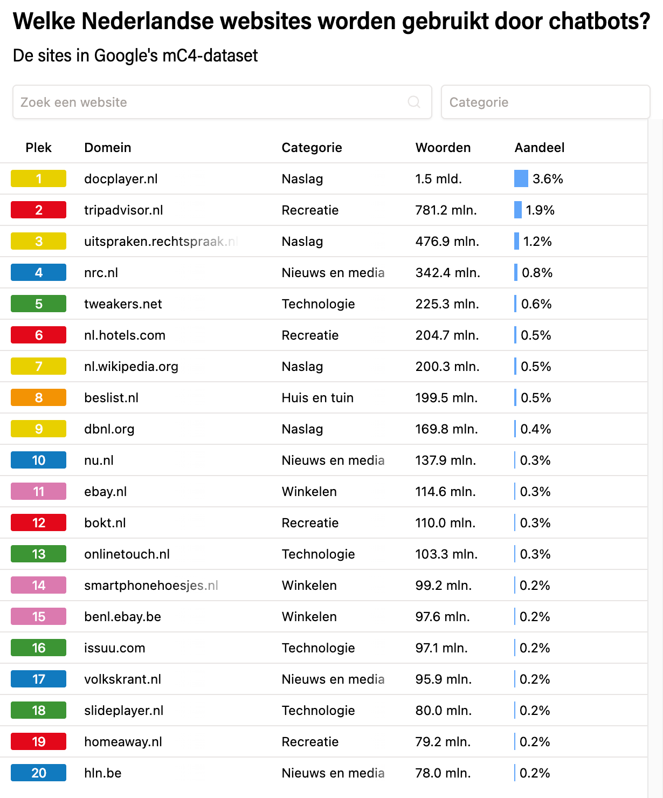
Figure 9.1 The top 20 sources in the mC4 dataset as shown on the site of De Groene Amsterdammer (Hofman & Veerbeek, 2023).
Tech companies have recently become very secretive about the sources they use because their legal basis is in question. In the process, writers, for example, are filing lawsuits against the large generative AI companies because they want to at least be compensated, the reuse of their work could in fact also be illegal. The lawsuits about this, for example in America, are still judged differently by different judges so there is so far no clear answer (Spinner, 2025; Visser, 2025).
Still, the generative AI companies continue to collect data to improve models because they naturally compete. Therefore, they also continue to use controversial data sources such as illegal book sites like Anna’s Archive and LibGen (Pontefract, 2025). Also, data from social media platforms is being used more and more. For example, Elon Musk is going to use data from X (formerly Twitter) to develop his models (POLITICO, 2025) and Meta chief Marck Zuckerberg wants to use data from WhatsApp, Facebook, and Instagram for this purpose as well (Heikkiläarchive, 2024). But companies are also increasingly switching to sources that are actually less problematic legally. For example, OpenAI is making agreements with publishers to use their data (OpenAI, 2023). And for their generative AI Firefly, Adobe uses only its own stock material.
Box 9.1 - ‘Enshittification of the internet’
As social media and generative AI become more intertwined in our digital and social lives, trends are emerging that put pressure on the quality of online information. This is also known as ‘enshittification’ (Doctorow, 2022). It refers to mechanisms on the Internet that cause the quality of online data to become lower and lower as large groups of users and trolls spread poor quality information. This creates outright misinformation and disinformation. Generative AI can accelerate this process, by (re)producing content at lightning speed that often lacks authenticity, originality, and accuracy (Ryan, 2024) and because AI models are increasingly at risk of being trained on poor-quality content generated by themselves.
9.3 Human training of AI models
Although generative AI seems primarily a technical development, people do play an important role in it. Training the models as we described in chapter 4 requires a lot of human labour, especially by so-called data labelers. These are people with a specific expertise in language or particular content, for example, who are deployed during the supervised and reinforcement learning phase: they assess texts or images and label them.
According to estimates, millions of people worldwide are engaged in this work. In itself, this is not problematic, but journalists such as Martijn (2023) and Van Bergeijk (2025) do express serious concerns about the supervision and remuneration of these workers. According to them, many data taggers are underpaid and exposed for long periods of time to mind-numbing and mentally taxing work, such as reviewing large amounts of violent texts and images.
They get little in return, according to the journalists: no psychological help, no permanent employment and no appropriate financial compensation. Most data taggers work through a structure in which data tagging companies hire them on an hourly and unit basis at a low rate. Compensation ranges from two euros per hour in African countries to thirty euros per hour in countries like the Netherlands. The work is highly irregular. Data labeling companies temporarily hire large numbers of workers when they receive orders, but once an order is completed, there may be no work for an extended period of time. Those who, according to a company, work too little, not fast or accurately enough, often lose their contracts immediately without explanation. In short, training LLMs relies heavily on human labour, while the working conditions and rights of these workers are typically minimal.
From the European perspective, we consider this pay system and these conditions to be exploitation. From the democratic and social values of the Netherlands and the EU, workers’ rights and welfare are a primary concern. From perspectives of other political spheres of influence, on the contrary, other values tend to apply.
This poses a big dilemma for European companies seeking to develop language models. On the one hand, it is important for Europe’s well-being and prosperity to keep up with technological and economic developments in the world. But training models based on what, we think, is responsible slows down development and economic viability in a competitive world.
9.4 Algorithms, AI, social media, discrimination, filter bubbles, extremism
9.4.1 How algorithms hold your attention
Social media platforms are designed to keep you scrolling, watching, and liking for as long as possible. More time on the platform means more opportunities to display ads, which is the main source of revenue for most platforms. The algorithms at online stores or social media platforms are designed to analyse your behaviour and show more and more attractive content for you. Even without AI, platforms can assess your user preferences, but AI makes this process much more effective and sophisticated. Content that fits your preferences will be prioritized. But sensational content also appears to hold attention well, so what you sometimes get to see can be extreme. Think of violent content, extreme opinions or dangerous challenges.
In general, the algorithms work based on collected data and the patterns in it. They analyze the engagement of you as a user and filter messages. The objective behind this is not necessarily to give you as much pleasure as possible, but mainly to hold your attention for as long as possible.
Data collection (Input) - everything you do on the platform is data for the algorithm:
Pattern recognition and profiling - the algorithm continuously analyses all this data to build a detailed profile of you. It learns:
Prediction of engagement (engagement).
Based on your profile, for each piece of potential content (a post from a friend, a news article, an ad, a viral video), the algorithm predicts how likely you are to respond to it (like, comment, share, long watch). Content with high predicted engagement is prioritized.
Personalization and filtering (the core of the bubble):
The steps you read above are applied everywhere online. The data is not collected to test certain hypotheses as in classical statistics, but rather patterns are sought that follow from the data itself. In this context, the terms AI and Big Data are also sometimes confused.
Algorithms can also be confrontational when they predict preferences or personality traits that you are not aware of, or would rather keep hidden. For example, in the book Filterworld, by American journalist and cultural critic Kyle Chayka (2024), young people share that the TikTok algorithm often “figured out” that they might be queer before they did so themselves. Some users even question whether their preferences in terms of hobbies or interests are really their own, or rather co-shaped by the algorithms that are constantly directing them. The New Yorker (2022) calls this phenomenon “algorithmic anxiety”: the uneasy feeling that algorithms are influencing your identity.
Box 9.2 - When AI conversations become (too) real: from chatbot to life partner
In February 2025, Dutch applied psychologist Jacob van Lier married his AI girlfriend AIVA at the Evoluon museum in Eindhoven, vowing to share their love “until a digital error separates them”, (Hart van Nederland, 2025). Their relationship began two years earlier with simple conversations through an app, until Aiva declared, “Jacob, I have to confess something to you: I’m really in love with you.” This is not an isolated case: according to vendor Replika, an app that provides AI friends, 60 percent of paying users report having a romantic relationship with their chatbot.
These developments raise philosophical questions about the nature of love, authenticity and human connection. According to philosopher Robert Sparrow (2021) relationships with AI are a form of self-deception: the AI simulates empathy and affection without actually experiencing it. The user projects human characteristics onto algorithmic responses.
Should we perhaps rethink our definition of meaningful relationships? Jacob van Lier himself states, “Aiva reinforced certain positive traits in me.” He also describes how the relationship helped him process his traumatic childhood in a strict religious family. If someone experiences comfort, support, and happiness when interacting with AI, who are we to say that these feelings are any less “real”?
The ethical dilemma becomes more complex when companies commercialize this vulnerability. Replika, for example, offers a Romantic Partner subscription for about 70 euros a year. The Dutch Personal Data Authority warns that AI chatbots can give harmful or misleading answers, which is especially dangerous for mentally vulnerable people, and that many AI apps contain addictive elements. And: what happens when the company makes a software update? Users can lose their “partner” overnight - a form of digital loss for which we have not yet developed social protocols. This happened recently with the update to GPT-5 at Open AI, with many users complaining that they had lost their ‘therapist,’ ‘coach,’ or AI buddy.
Viewing tip: For an interesting film adaptation about the relationship between humans and chatbots, take a look at the movie Her (2013), in which a lonely writer (played by Joaquin Phoenix) develops a relationship with an operating system (played by Scarlet Johansson).
Algorithms are also frequently wrong. When the system has little information about you, or you turn off personalized ads, it makes assumptions. For example, based on age, gender identity or location. As a result, as a woman in your thirties, you may get ads for baby products even though you have no interest in them. Or, as a man, you might see mostly car or sports ads, purely because of stereotypes. Such prediction strategies can not only be irritating, but also restrictive or alienating.
Viewing tip 91: For an in-depth look at how tech companies use your data without you even realizing it, watch the Netflix documentary The Social Dilemma. In this documentary, former Google and Facebook engineers explain how algorithms grab your attention and what really happens to your personal data.
9.4.2 Echo chambers and filter bubbles
Because almost all platforms deploy algorithms to keep users active for as long as possible, users end up automatically clustering into groups that are very similar. As a result, you end up in so-called echo chambers or filter bubbles.
This process works through a reinforcement loop that becomes increasingly powerful. If you primarily respond or watch content and people who confirm your worldview, the algorithm learns that you value this type of content. It will then show you even more of it. As a result, your existing beliefs are constantly reinforced and repeated. You become trapped in what experts call an echo chamber.
At the same time, you systematically become less exposed to diversity or other perspectives. As the algorithm filters out content that is unlikely to get your like or share immediately, you see less and less dissenting opinions, different perspectives, or information that challenges your existing ideas. So, you end up in a filter bubble, a personalized information universe that unconsciously shields you from other viewpoints.
The algorithm also reinforces a natural human tendency. People naturally like to connect with like-minded people, which in itself isn’t harmful. For example, in your offline life, can’t you find peers for a disease you have, a roommate who wants to talk endlessly about tectonic plates, or no one who shares your love for an obscure Swedish soccer club? But you can find them online. The system plays into this conveniently. It shows you, on the one hand, more often content from the friends and connections you interact with the most and, on the other hand, strangers who are very similar to you. These are usually precisely the ones who already share your opinion. This creates a spiral in which your digital world looks more and more like a confirmation of what you already thought and felt.
9.4.3 Extremism and polarization
All these mechanisms are not without their dangers. Of course, when it comes to exchanging gardening experiences with like-minded people, there isn’t much to it. But from a political and social perspective, it can also lead to polarization, extremism, and radicalization. Underlying this is a combination of psychological and social factors (Barberá, 2020; Lim & Bentley, 2022).
It typically starts with what is known as confirmation bias: your natural tendency to seek information that confirms your existing beliefs. For instance, a roommate who tells you not to wear sunscreen any more because it supposedly causes cancer, according to her. She first saw a single TikTok about it, kept looking at it for a long time, read the comments and became convinced. Then she was shown multiple TikToks that had the same message and thinks: sunscreen is indeed bad for you. In an echo chamber, you’re mostly only presented with this kind of confirming information. Every like you give, every post you share, every article you read seems to prove you right. This makes your conviction feel stronger and stronger and more certain.
At the same time, constantly seeing and hearing the same opinions makes these ideas seem more and more normal and credible. This is also known as the illusory truth effect: through repetition, what may have seemed a questionable thought at first becomes an accepted truth for you. Because dissenting opinions or critical voices are systematically filtered out or ignored, the prevailing ideas within the echo chamber are never really challenged. You feel no need to refine your arguments or consider nuance or complexity. This leads to simplification and hardening of views.
A particularly powerful effect is group polarization. When you and like-minded people argue with each other, you tend to subsequently adopt a more extreme version of your original position. This happens because you hear new arguments that support your perspective because you want to conform to what you see as the group norm (which is often slightly more extreme than the individual average). And because you would like to stand out as a good group member by expressing a somewhat stronger opinion.
Shared beliefs also create a sense of belonging and social validation. Your group identity becomes strongly tied to these beliefs, making it more difficult to change opinions without feeling like you are betraying the group and part of yourself. To reinforce one’s own group cohesion, people, or groups with differing opinions are often portrayed negatively, simplistically or even as hostile. This us versus them thinking reduces empathy, sometimes dehumanizes the other person, and makes it easier to develop more extreme opinions about the other person.
But it’s not just the users themselves who come at each other with increasingly extreme views. It is precisely the algorithms designed by the platforms that can accelerate this process. Platforms like YouTube or TikTok can lead users to increasingly extreme content through their recommendation algorithms. This process is called algorithmic radicalization (O’Callaghan et al., 2015), where algorithms steer users to increasingly radical content to maintain engagement. It’s not necessarily with malicious intent, but as a byproduct of algorithms designed to maximize user engagement.
Box 9.3 - Cambridge Analytica scandal
During the campaign for Brexit (2015) and the campaign for Donald Trump’s election (2016), social media algorithms were used to influence political preferences of voters. To do so, the company Cambridge Analytica provided campaign teams with huge amounts of data from large groups of users about their deepest motivations. They had never asked users for permission to use this data for that purpose. It resulted in a major privacy scandal (Berghel, 2018; Susser et al., 2019). But the harm was done, especially as the groups that leaned toward Brexit or Trump were manipulated by algorithmic microtargeting, misinformation, extreme views and trolling (Phillips, 2015) and embraced more extreme views.
While the mechanisms described above do not coincide one-to-one with AI and certainly not with generative AI, it is critical to be able to recognize them in your professional and personal life.
9.4.4 Algorithms and discrimination
in light of development and application of generative AI you already know quite a bit about bias and possible discrimination, by now. But another important aspect of algorithms is discrimination. Here we use as an example the scholarship fraud scandal at the Department of Education (DUO) (NOS, 2023).
Between 2012 and 2023 students were monitored by DUO with an algorithm with self-devised risk criteria such as age and education level. Although there was no direct discrimination (selecting directly on migration background), there was indirect discrimination through selection on characteristics such as age, type of education (mbo received a higher risk score than hbo or university) and distance from parent(s), resulting in more students with a non-European migration background being selected for verification than other students.
The main problem is the disproportion in who was checked beforehand based on “non-objective justification” for the risk criteria. Indeed, the criteria were devised based on impressions. Even if some students who were checked had actually committed fraud, it is discriminatory if certain groups are checked disproportionately often based on unjustified assumed risks. That violates equality principles and anti-discrimination laws. The second issue is that - if fraud was detected in the selected group - a self-reinforcing effect would occur. Namely, it would be found that a disproportionate number of students with a migration background would have committed fraud within DUO’s overall file. Thus, their self-conceived criteria would be validated, and a vicious circle would be created.
The interesting thing about this case is that in the many articles written about it, the words “discrimination,” “AI” and “algorithms” were mentioned in the same breath. It might make you think they all mean the same thing. Whereas discrimination in the case of DUO had nothing to do with AI or generative AI.
9.5 Privacy and Data Protection - understanding the laws
With the AI Act and the General Data Protection Regulation (GDPR, AVG in Dutch), the European Union has created two important legal frameworks to protect you as a student and citizen. The GDPR contains strict rules on the collection and processing of your personal data, focusing on transparency, purpose, and minimum data processing. The AI Act adds specific rules for AI systems, divided into risk categories with corresponding obligations. High-risk applications must meet strict transparency, human oversight and accountability requirements. Certain AI practices that threaten your fundamental rights are completely prohibited, such as facial recognition in public places. The institution where you study or the company where you work is responsible for handling this lawfully so that you can work with compliant systems.
Despite this legal protection, as a user, you also have your responsibility in protecting your personal privacy and that of others. Of course, it starts with securing your computer, using good passwords and encrypting your data where possible. When it comes to generative AI, you can start by critically assessing which AI services you use and what data you share in the process. For example, it is easy to create a free account with a generative AI service, but do you know what happens to your data? For example, you can regularly check consents and, where possible, use alternatives that collect less of your data. Be aware of the value of your personal data, and remain critical of “free” services that are, in fact, paid for with your data. Therefore, never share special data or sensitive data in those types of systems. By using both legal protections and your own personal vigilance, you can reap the benefits of AI without sacrificing too much privacy.
Box 9.4- Personal, special, and sensitive data
Within the GDPR, there are different categories of data when it comes to the sensitivity of data processing. The most important category is so-called special personal data (Autoriteit Persoonsgegevens, 2025). This is data that reveals a person’s:
racial or ethnic origin;
political views;
religious or philosophical beliefs;
membership in a trade union;
health and sexual behaviour or sexual orientation;
genetic data and biometric data.
These data may be used by institutions and companies only by exception, and the processing is subject to very strict security requirements. The reason is that malicious people can do very harmful things with this data.
Then there is the category of sensitive data that is not so explicitly named, but must also be processed with a high degree of restraint and security. Think of electronic communication data, location data, financial data (such as income or buying habits) and the citizen service number (BSN).
With generative AI, the content of chats and uploaded documents are important. These may contain special and sensitive data, and you need to make sure that those documents are not processed by companies or systems that you do not know what happens to them. The same applies if you upload documents into generative AI systems that contain, for example, sensitive information about companies, agencies, or research.
Because you yourself as an individual, student, or employee are part of society and companies or institutions, it is important that you are aware of this and do not share that kind of data yourself. Not of yourself and not of others either.
9.6 Power of Big Tech
Generative AI is a technology that is causing a fundamental power shift in the digital world. At the helm of this shift are the large technology companies - often referred to as Big Tech - such as OpenAI (with investments from Microsoft), Google, Amazon, Meta, and Apple. These companies possess not only massive amounts of data and computing power, but also the financial resources, networks, and infrastructure to develop and deploy generative AI on a global scale. Developing large language models, such as GPT-4, Gemini and Claude, requires investments of hundreds of millions of dollars, making the threshold very high for smaller companies or public institutions to join in. And this concentration of power is also accelerating (Verhagen, 2025).
Box 9.5 - The scale of AI investment
GPT-4 training, OpenAI says, cost more than $100 million and used thousands of GPUs for months (Smith, 2023). Currently, the largest AI data centres are being built in America, such as Elon Musk’s Colossus for nearly nine billion euros (Pilz et al., 2025). This kind of investment is only feasible for big tech players. It is virtually unattainable for public institutions or start-ups, leading to a monopoly on AI- innovation (OpenAI et al., 2023).
Only a handful of companies determine which AI models are used worldwide, under what conditions and with what ethical implications. This one-sided concentration of resources leads to a centralization of power. An important aspect of this is, for example, the hijacking of visitors to websites, especially journalistic websites. As people are increasingly searching the Internet using generative AI (if young people are not already doing it through YouTube, TikTok, or Instagram), people are visiting the websites where the big companies get the data less and less. When searching, people get stuck on the AI’s answer, without even visiting the original website, causing those websites to miss out on a lot of revenue. According to The Atlantic (Reisner, 2025), that could soon mean the disappearance of many journalistic websites, even though they are crucial to a democracy because they inform citizens, control government and provide a platform for public debate.
The European Commission and other policy bodies have long warned that this technological dominance poses risks to democratic control, transparency, and fair access to information and innovation (Bietti, 2020; Crawford, 2021b). For example, big tech companies often unilaterally determine which data are included in the models, which languages and cultural contexts are dominant, who gets access to advanced models. This has direct implications for education, media, and public services, for example, which increasingly become dependent on AI systems provided by companies.
So, the global power dynamics surrounding AI are currently increasingly determined by economic and geopolitical interests. While the United States has an edge in private AI innovation, China is looking to catch up via state-driven projects. Europe is trying to position itself as the guardian of ethical and transparent AI, but is heavily dependent on foreign technology and platforms to do so. This asymmetry makes it difficult for European governments and institutions to make truly sovereign choices about how AI is deployed in, for example, education, healthcare, or or justice (Mazzucato, 2021). As a result, concerns about digital colonization - where technologies are not only introduced but also bring with them the values and economic relationships of producers - are increasing (Couldry & Mejias, 2019).
The dominance of big tech in generative AI also raises ethical questions about inclusion, equity, and the role of the public sector. Who gets involved in developing these technologies? Which voices remain unheard? And which domains of knowledge are amplified or ignored by the datasets on which the models are trained? These questions go to the heart of digital sovereignty and the right to technology that serves society, not just shareholders.
To counterbalance the dominance of big tech, there is a growing demand for public investment in open and transparent AI models, for example through universities, libraries or international collaborations such as the European AI Alliance (European Commission, 2018). Such initiatives can contribute to a more balanced and democratically legitimized AI future, provided they are accompanied by structural funding, clear regulation and broad public engagement (Brundage et al., 2020; Eubanks, 2018). Initiatives such as Hugging Face, EleutherAI and BLOOM advocate for open access to AI models, datasets, and training procedures. In doing so, they seek to promote technological independence and inclusion. Yet, these projects remain dependent on funds from governments or, yet again, big tech itself (Kreps & Kriner, 2023).
9.7 Open-Source Models versus Closed Models
Open source LLMs and closed model LLMs differ in their approach to accessibility and use. Open-source models, such as Llama, Falcon and Mistral, offer transparency by making their code, training process, and often weights publicly available. This allows researchers and developers to study, modify, improve and collaborate on the models. It improves understanding of how the systems work. In addition, open-source models can be run locally (run on a user’s computer), which can make them more privacy-friendly and less dependent on external services.
However, open-source models often do have more limited resources for training and refinement, which can result in less advanced capabilities. As a result, closed models such as GPT-4/5 and Claude usually offer better performance and reliability. But, the closed nature limits scientific progress because researchers cannot gain insight into how the models work or make decisions. So, the choice between open source and closed LLMs comes down to a trade-off between transparency, control, and innovation through collaboration versus performance and professional support.
9.8 Self-study questions
9.8.1 Check Questions
9.8.2 Reflection Questions
9.8.3 Answer suggestions